<title>Projeto Morada</title>
<meta name="claude:viewport-fit-sides" content="cover">
<link rel="preconnect" href="https://fonts.googleapis.com">
<link rel="preconnect" href="https://fonts.gstatic.com" crossorigin>
<link rel="stylesheet" href="https://fonts.googleapis.com/css2?family=Unbounded:wght@500;700;800&family=Figtree:wght@400;500;600;700&family=JetBrains+Mono:wght@400;500&display=swap">
<style>
/* Layout: coluna central de 1120px; cada seção ganha uma cor da paleta e cartões com cantos chanfrados; telas do jogo em molduras 960×600 que escalam, com cenas renderizadas por baixo */
:root{
  --bg:#F2F4FB; --surface:#FFFFFF; --surface-2:#E7EBF8; --ink:#1A1D3A; --muted:#565C82; --line:#D2D7EA;
  --tangerine:#E8611F; --teal:#0C8F81; --sun:#E0A100; --berry:#CC3366; --sky:#3463E6; --leaf:#2F9A4B;
  --tangerine-soft:#FFE5D6; --teal-soft:#D3F2EE; --sun-soft:#FFF0C2; --berry-soft:#FADBE6; --sky-soft:#DCE5FF; --leaf-soft:#DAF2DF;
  --code-bg:#171A36; --code-ink:#E6E9FF; --code-dim:#8C93C7;
  --f-display:"Unbounded","Arial Black",system-ui,sans-serif;
  --f-body:"Figtree",system-ui,-apple-system,"Segoe UI",Roboto,sans-serif;
  --f-mono:"JetBrains Mono",ui-monospace,Menlo,Consolas,monospace;
  --cut:14px;
}
@media (prefers-color-scheme: dark){:root:not([data-theme="light"]){
  --bg:#10122A; --surface:#1A1D3B; --surface-2:#242853; --ink:#EEF0FF; --muted:#A4AAD3; --line:#333863;
  --tangerine:#FF8A50; --teal:#2DCBB7; --sun:#FFCB3D; --berry:#F2679A; --sky:#7396FF; --leaf:#5FCC77;
  --tangerine-soft:#3B2419; --teal-soft:#0E3431; --sun-soft:#3A3014; --berry-soft:#3B1B2A; --sky-soft:#1C2754; --leaf-soft:#163322;
  --code-bg:#0A0C1E; --code-ink:#E6E9FF; --code-dim:#8188BF; color-scheme:dark;
}}
:root[data-theme="dark"]{
  --bg:#10122A; --surface:#1A1D3B; --surface-2:#242853; --ink:#EEF0FF; --muted:#A4AAD3; --line:#333863;
  --tangerine:#FF8A50; --teal:#2DCBB7; --sun:#FFCB3D; --berry:#F2679A; --sky:#7396FF; --leaf:#5FCC77;
  --tangerine-soft:#3B2419; --teal-soft:#0E3431; --sun-soft:#3A3014; --berry-soft:#3B1B2A; --sky-soft:#1C2754; --leaf-soft:#163322;
  --code-bg:#0A0C1E; --code-ink:#E6E9FF; --code-dim:#8188BF; color-scheme:dark;
}
*{box-sizing:border-box}
body{background:var(--bg);color:var(--ink);font-family:var(--f-body);font-size:16px;line-height:1.6;-webkit-font-smoothing:antialiased}
body::before{content:"";position:fixed;inset:0 0 auto;height:env(safe-area-inset-top,0px);z-index:10;background:var(--surface)}
h1,h2,h3,h4{font-family:var(--f-display);line-height:1.15;text-wrap:balance;margin:0}
h2{font-size:clamp(26px,4vw,40px);font-weight:700;letter-spacing:-.01em}
h3{font-size:19px;font-weight:700}
h4{font-family:var(--f-body);font-size:16px;font-weight:700}
p{margin:0}
code{font-family:var(--f-mono);font-size:.88em;background:var(--surface-2);padding:.1em .35em;border-radius:5px}
a{color:var(--sky)}
:focus-visible{outline:3px solid var(--sky);outline-offset:2px}

.top{position:sticky;top:env(safe-area-inset-top,0px);z-index:20;background:var(--surface);border-bottom:1px solid var(--line)}
.top-in{max-width:1180px;margin:0 auto;display:flex;align-items:center;gap:20px;padding-block:10px;padding-left:max(16px,env(safe-area-inset-left,0px));padding-right:max(16px,env(safe-area-inset-right,0px))}
.brand{font-family:var(--f-display);font-weight:800;font-size:18px;display:flex;align-items:center;gap:8px;flex:none;color:var(--ink);text-decoration:none}
.brand svg{width:26px;height:26px}
.nav{display:flex;gap:4px;overflow-x:auto;scrollbar-width:none;min-width:0}
.nav::-webkit-scrollbar{display:none}
.nav a{flex:none;text-decoration:none;color:var(--muted);font-weight:600;font-size:14px;padding:6px 11px;border-radius:999px}
.nav a:hover{background:var(--surface-2);color:var(--ink)}

.wrap{max-width:1180px;margin:0 auto;padding-left:max(16px,env(safe-area-inset-left,0px));padding-right:max(16px,env(safe-area-inset-right,0px));padding-block:0 80px}
section{scroll-margin-top:72px;padding-block:72px 8px;display:grid;gap:28px}
.eyebrow{display:inline-flex;align-items:center;gap:8px;font-weight:700;font-size:12.5px;letter-spacing:.09em;text-transform:uppercase;color:var(--c,var(--sky))}
.eyebrow::before{content:"";width:12px;height:12px;background:var(--c,var(--sky));clip-path:polygon(50% 0,100% 50%,50% 100%,0 50%)}
.sec-head{display:grid;gap:12px;max-width:820px}
.lead{font-size:18.5px;color:var(--ink);max-width:68ch}
.prose{max-width:70ch;color:var(--ink)}
.muted{color:var(--muted)}
.small{font-size:14px}

.facet{clip-path:polygon(var(--cut) 0,100% 0,100% calc(100% - var(--cut)),calc(100% - var(--cut)) 100%,0 100%,0 var(--cut))}
.card{background:var(--surface);padding:22px;display:grid;gap:10px;align-content:start;min-width:0}
.tint{background:var(--soft,var(--surface-2))}
.grid{display:grid;gap:16px}
.g2{grid-template-columns:repeat(auto-fit,minmax(min(100%,340px),1fr))}
.g3{grid-template-columns:repeat(auto-fit,minmax(min(100%,260px),1fr))}
.g4{grid-template-columns:repeat(auto-fit,minmax(min(100%,220px),1fr))}
.tag{display:inline-flex;align-items:center;gap:6px;font-size:12.5px;font-weight:700;padding:3px 10px;border-radius:999px;background:var(--soft,var(--surface-2));color:var(--c,var(--ink))}
.chips{display:flex;flex-wrap:wrap;gap:8px}

/* hero */
.hero{padding-block:44px 8px;grid-template-columns:minmax(0,1fr) minmax(0,1.15fr);align-items:center;gap:36px}
.hero h1{font-size:clamp(54px,10vw,112px);font-weight:800;letter-spacing:-.03em;line-height:.95}
.hero h1 span{display:inline-block;color:var(--tangerine)}
.hero .tagline{font-size:clamp(19px,2.2vw,23px);font-weight:500;max-width:30ch}
.hero-art{position:relative;aspect-ratio:8/5;max-width:100%;border-radius:22px;overflow:hidden;background:var(--sky-soft)}
.hero-art svg{width:100%;height:100%;display:block}
.hero-meta{display:flex;flex-wrap:wrap;gap:8px 18px;font-size:14px;color:var(--muted)}
@media (max-width:860px){.hero{grid-template-columns:1fr}}

.pillar{--cut:18px;padding:24px;display:grid;gap:10px;background:var(--soft)}
.pillar .ico{width:44px;height:44px}
.pillar h3{color:var(--ink)}

table{border-collapse:collapse;width:100%;font-size:15px}
.tbl{overflow-x:auto;background:var(--surface);border-radius:14px}
.tbl table{min-width:640px}
th,td{text-align:left;padding:12px 16px;border-bottom:1px solid var(--line);vertical-align:top}
th{font-size:12.5px;letter-spacing:.06em;text-transform:uppercase;color:var(--muted);font-weight:700;background:var(--surface-2)}
tr:last-child td{border-bottom:0}
td.num{font-variant-numeric:tabular-nums;white-space:nowrap}

pre{margin:0;background:var(--code-bg);color:var(--code-ink);font-family:var(--f-mono);font-size:13px;line-height:1.6;padding:18px 20px;border-radius:14px;overflow-x:auto;min-width:0}
pre .c{color:var(--code-dim)}
pre .k{color:#FF9E6B}
pre .s{color:#7FE0C9}
pre .n{color:#FFD36B}
.code-head{display:flex;justify-content:space-between;align-items:baseline;gap:12px;font-size:13px;color:var(--muted);font-weight:600;margin-bottom:-18px;padding:0 4px}

.dg{overflow-x:auto;background:var(--surface);border-radius:18px;padding:12px}
.dg svg{display:block;min-width:720px;width:100%;height:auto}
.dg text{font-family:var(--f-body);fill:var(--ink);font-size:13px}
.dg .t{font-weight:700}
.dg .sub{fill:var(--muted);font-size:11.5px}
.dg .box{fill:var(--surface-2);stroke:var(--line);stroke-width:1.25}
.dg .cont{fill:none;stroke:var(--line);stroke-width:1.25}
.dg .acc{fill:var(--sky-soft);stroke:var(--sky);stroke-width:2}
.dg .acc-b{fill:var(--sky-soft);stroke:var(--sky);stroke-width:1.5}
.dg .warm{fill:var(--tangerine-soft);stroke:var(--tangerine);stroke-width:1.5}
.dg .bad{fill:var(--berry-soft);stroke:var(--berry);stroke-width:1.5}
.dg .good{fill:var(--leaf-soft);stroke:var(--leaf);stroke-width:1.5}
.dg .ar{stroke:var(--muted);stroke-width:1.4;fill:none}
.dg .mk{fill:var(--muted)}
.dg .found{fill:var(--sun-soft);stroke:var(--sun);stroke-width:1.5}
.caption{font-size:14px;color:var(--muted);max-width:75ch}

/* comparativo */
.vs td:first-child{font-weight:700;white-space:nowrap}
.vs td:last-child{color:var(--ink)}
.vs td:last-child strong{color:var(--teal)}

/* presença */
.state{display:grid;gap:8px;padding:18px;background:var(--surface);border-radius:14px;min-width:0}
.state .dot{width:12px;height:12px;border-radius:50%;background:var(--c)}
.state h4{display:flex;align-items:center;gap:8px}

/* escada de relacionamento */
.ladder{display:flex;flex-wrap:wrap;gap:10px;align-items:center}
.step{background:var(--surface);padding:10px 14px;border-radius:12px;font-weight:700;font-size:14.5px;display:grid;gap:2px}
.step small{font-weight:500;color:var(--muted);font-size:12.5px}
.step.k{background:var(--berry-soft);color:var(--ink)}
.arrow-r{color:var(--muted);font-weight:700}

/* widget tempo */
.timew{display:grid;gap:14px;background:var(--surface);padding:22px;border-radius:18px}
.seg{display:flex;flex-wrap:wrap;gap:6px}
.seg button{font:inherit;font-weight:700;font-size:14px;padding:8px 14px;border-radius:999px;border:0;background:var(--surface-2);color:var(--ink);cursor:pointer}
.seg button[aria-pressed="true"]{background:var(--sky);color:#fff}
.tw-out{display:grid;grid-template-columns:repeat(auto-fit,minmax(150px,1fr));gap:12px}
.tw-out div{background:var(--surface-2);border-radius:12px;padding:12px 14px}
.tw-out b{display:block;font-family:var(--f-display);font-size:20px;font-variant-numeric:tabular-nums}
.tw-out span{font-size:13px;color:var(--muted)}

/* editor de agenda */
.sched{display:grid;grid-template-columns:minmax(0,1.6fr) minmax(0,1fr);gap:18px;background:var(--surface);border-radius:20px;padding:20px}
@media (max-width:900px){.sched{grid-template-columns:1fr}}
.staff-list{display:flex;flex-wrap:wrap;gap:8px}
.staff-btn{font:inherit;display:flex;align-items:center;gap:8px;padding:7px 12px 7px 8px;border-radius:999px;border:2px solid transparent;background:var(--surface-2);color:var(--ink);cursor:pointer;font-weight:600;font-size:14px}
.staff-btn i{width:14px;height:14px;border-radius:4px;background:var(--c);display:block}
.staff-btn small{color:var(--muted);font-weight:500}
.staff-btn[aria-pressed="true"]{border-color:var(--c);background:var(--surface)}
.grid-wrap{overflow-x:auto;min-width:0}
.sgrid{border-collapse:separate;border-spacing:3px;min-width:520px;user-select:none;touch-action:none}
.sgrid th{background:none;padding:2px 4px;text-align:center;font-size:12px;border:0}
.sgrid th.h{text-align:right;font-variant-numeric:tabular-nums;color:var(--muted);font-weight:600;width:44px}
.sgrid td{padding:0;border:0}
.cell{width:100%;height:22px;border-radius:5px;background:var(--surface-2);display:flex;gap:2px;padding:3px;cursor:pointer;border:0}
.cell span{flex:1;border-radius:3px;background:var(--c)}
.cell:hover{outline:2px solid var(--muted)}
.sum{display:grid;gap:12px;align-content:start}
.sum-row{display:flex;justify-content:space-between;gap:10px;font-size:14px;align-items:center}
.sum-row b{font-variant-numeric:tabular-nums}
.sum-total{font-family:var(--f-display);font-size:26px;font-variant-numeric:tabular-nums}
.alert{padding:10px 12px;border-radius:10px;font-size:13.5px;background:var(--sun-soft);color:var(--ink)}
.alert.ok{background:var(--leaf-soft)}
.btn{font:inherit;font-weight:700;font-size:14px;padding:9px 14px;border-radius:10px;border:0;background:var(--ink);color:var(--bg);cursor:pointer}
.btn.ghost{background:var(--surface-2);color:var(--ink)}
.btn:disabled{opacity:.45;cursor:not-allowed}

/* dia na casa */
.day{display:grid;gap:0;position:relative;padding-left:22px}
.day::before{content:"";position:absolute;left:6px;top:8px;bottom:8px;width:2px;background:var(--line)}
.ev{position:relative;display:grid;grid-template-columns:62px minmax(0,1fr);gap:12px;padding:8px 0}
.ev::before{content:"";position:absolute;left:-21px;top:15px;width:12px;height:12px;background:var(--c,var(--muted));clip-path:polygon(50% 0,100% 50%,50% 100%,0 50%)}
.ev time{font-family:var(--f-mono);font-size:13.5px;font-weight:500;color:var(--muted);padding-top:2px}

/* fórmula */
.formula{background:var(--surface);border-radius:16px;padding:22px;font-size:clamp(16px,2.4vw,21px);font-family:var(--f-mono);text-align:center;overflow-x:auto}
.formula var{font-style:normal;color:var(--tangerine);font-weight:500}

/* orçamento de quadro */
.frame-bar{display:flex;height:54px;border-radius:12px;overflow:hidden;background:var(--surface-2)}
.frame-bar div{display:flex;align-items:center;justify-content:center;font-size:12.5px;font-weight:700;color:#fff;min-width:0;white-space:nowrap;overflow:hidden;text-overflow:ellipsis;padding:0 4px}
.frame-legend{display:flex;flex-wrap:wrap;gap:8px 18px;font-size:13.5px}
.frame-legend span{display:inline-flex;align-items:center;gap:6px}
.frame-legend i{width:12px;height:12px;border-radius:3px;background:var(--c)}

/* fases */
.phase{--cut:16px;background:var(--surface);padding:22px;display:grid;gap:10px;align-content:start;min-width:0}
.phase .n{font-family:var(--f-display);font-size:34px;font-weight:800;color:var(--c);line-height:1}
.phase ul{margin:0;padding-left:18px;display:grid;gap:4px;font-size:14.5px}
.phase .exit{font-size:13.5px;background:var(--soft);padding:10px 12px;border-radius:10px}

/* galeria de telas */
.tabs{display:flex;gap:6px;overflow-x:auto;padding-bottom:4px;scrollbar-width:thin}
.tabs button{flex:none;font:inherit;font-weight:700;font-size:14px;padding:9px 14px;border-radius:12px;border:0;background:var(--surface);color:var(--muted);cursor:pointer}
.tabs button[aria-selected="true"]{background:var(--ink);color:var(--bg)}
.shot{display:grid;grid-template-columns:minmax(0,2.4fr) minmax(0,1fr);gap:20px;align-items:start}
@media (max-width:980px){.shot{grid-template-columns:1fr}}
.screen-wrap{position:relative;width:100%;aspect-ratio:16/10;border-radius:18px;overflow:hidden;background:#1A1D3A;box-shadow:0 18px 40px -18px rgba(20,24,70,.45)}
.screen{position:absolute;left:0;top:0;width:960px;height:600px;transform:scale(var(--k,1));transform-origin:0 0;font-family:var(--f-body);color:#1A1D3A;font-size:14px;line-height:1.4;overflow:hidden}
.screen .bgscene{position:absolute;inset:0}
.screen .bgscene svg{width:100%;height:100%;display:block}
.shot-note{display:grid;gap:10px;background:var(--surface);padding:20px;border-radius:16px}
.shot-note ul{margin:0;padding-left:18px;display:grid;gap:6px;font-size:14.5px}

/* componentes de UI do jogo (cores próprias do jogo, iguais nos dois temas) */
.gp{position:absolute;background:rgba(255,255,255,.95);border-radius:16px;box-shadow:0 8px 22px rgba(18,22,60,.22);padding:12px 14px}
.gh{font-family:var(--f-display);font-weight:700;font-size:13px;letter-spacing:.02em;margin-bottom:8px;color:#1A1D3A}
.gdark{background:rgba(23,26,54,.88);color:#fff}
.gdark .gh{color:#fff}
.need{display:grid;grid-template-columns:62px 1fr;align-items:center;gap:8px;font-size:12px;font-weight:600}
.need i{height:9px;border-radius:5px;background:#E5E8F5;position:relative;overflow:hidden;display:block}
.need i::after{content:"";position:absolute;inset:0 auto 0 0;width:var(--v);background:var(--c);border-radius:5px}
.gbtn{display:inline-flex;align-items:center;justify-content:center;gap:6px;border-radius:12px;padding:8px 12px;font-weight:700;font-size:13px;background:#EEF1FB;color:#1A1D3A}
.gbtn.pri{background:#E8611F;color:#fff}
.gbtn.tl{background:#0C8F81;color:#fff}
.gchip{display:inline-flex;align-items:center;gap:5px;border-radius:999px;padding:4px 10px;font-size:12px;font-weight:700;background:#EEF1FB}
.gchip.on{background:#1A1D3A;color:#fff}
.pdot{width:9px;height:9px;border-radius:50%;display:inline-block;flex:none}
.radial{position:absolute;transform:translate(-50%,-50%);background:#fff;border-radius:999px;padding:9px 16px;font-weight:700;font-size:13.5px;box-shadow:0 6px 16px rgba(18,22,60,.25);white-space:nowrap;color:#1A1D3A}
.radial.hl{background:#CC3366;color:#fff}
.slider{display:grid;gap:4px;font-size:12px;font-weight:600}
.slider i{height:6px;border-radius:3px;background:#E1E5F4;position:relative;display:block}
.slider i::after{content:"";position:absolute;top:50%;left:var(--v);width:14px;height:14px;border-radius:50%;background:#E8611F;transform:translate(-50%,-50%);box-shadow:0 0 0 3px #fff}
.sw{width:26px;height:26px;border-radius:7px;background:var(--c);display:inline-block}
.mini-t{width:100%;border-collapse:collapse;font-size:12px}
.mini-t td,.mini-t th{padding:5px 6px;border-bottom:1px solid #E5E8F5;background:none;text-transform:none;letter-spacing:0;color:#1A1D3A;font-size:12px}
.mini-t th{font-weight:700;color:#565C82}
.tog{width:30px;height:17px;border-radius:9px;background:#C9CFE6;position:relative;display:inline-block;flex:none}
.tog::after{content:"";position:absolute;top:2px;left:2px;width:13px;height:13px;border-radius:50%;background:#fff}
.tog.on{background:#0C8F81}
.tog.on::after{left:15px}
.row{display:flex;align-items:center;justify-content:space-between;gap:10px}

.fig{margin:0;display:grid;gap:8px;min-width:0}
.fig img{width:100%;height:auto;display:block;border-radius:16px;background:var(--surface-2)}
.fig figcaption{font-size:13.5px;color:var(--muted)}
.take{font-size:13.5px;background:var(--soft,var(--surface-2));padding:10px 12px;border-radius:10px}
.big{font-family:var(--f-display);font-size:28px;font-weight:800;line-height:1;color:var(--c,var(--ink));font-variant-numeric:tabular-nums}
.stat{display:grid;gap:6px;background:var(--surface);padding:18px;border-radius:14px;min-width:0}
.stat span{font-size:13.5px;color:var(--muted)}
footer{max-width:1180px;margin:0 auto;padding-block:30px 50px;padding-left:max(16px,env(safe-area-inset-left,0px));padding-right:max(16px,env(safe-area-inset-right,0px));color:var(--muted);font-size:14px;border-top:1px solid var(--line)}
@media (prefers-reduced-motion:no-preference){
  .hero h1 span{animation:bob 3.2s ease-in-out infinite}
  @keyframes bob{50%{transform:translateY(-6px)}}
}
/* ---------- interface do jogo (telas) ---------- */
.screen .bg{position:absolute;inset:0;width:100%;height:100%;object-fit:cover;display:block}
.screen .bg.blur{filter:blur(7px) saturate(1.15);transform:scale(1.08)}
.screen .veil{position:absolute;inset:0;pointer-events:none}
.screen svg.ov{position:absolute;inset:0;width:100%;height:100%;pointer-events:none}
.ui-ic{width:16px;height:16px;flex:none;fill:none;stroke:currentColor;stroke-width:2;stroke-linecap:round;stroke-linejoin:round}
.p{position:absolute;background:rgba(255,255,255,.84);-webkit-backdrop-filter:blur(16px) saturate(1.5);backdrop-filter:blur(16px) saturate(1.5);border:1px solid rgba(255,255,255,.75);border-radius:18px;box-shadow:0 14px 34px -12px rgba(16,18,48,.5),inset 0 1px 0 rgba(255,255,255,.9);padding:14px;color:#1A1D3A}
.p.d{background:rgba(20,22,46,.62);border-color:rgba(255,255,255,.14);color:#fff;box-shadow:0 14px 34px -12px rgba(8,10,30,.6),inset 0 1px 0 rgba(255,255,255,.08)}
.p.solid{background:rgba(255,255,255,.95)}
.ut{font-family:var(--f-display);font-weight:700;font-size:14px;letter-spacing:.01em;line-height:1.2}
.uk{font-size:10.5px;font-weight:700;letter-spacing:.09em;text-transform:uppercase;color:#6A7096}
.p.d .uk{color:rgba(255,255,255,.62)}
.um{font-size:12px;color:#5E6488;line-height:1.35}
.p.d .um{color:rgba(255,255,255,.72)}
.uf{display:flex;align-items:center;gap:8px}
.uf.sb{justify-content:space-between}
.ug{display:grid;gap:8px}
.ub{display:inline-flex;align-items:center;justify-content:center;gap:6px;height:34px;padding:0 14px;border-radius:11px;font-weight:700;font-size:13px;background:rgba(26,29,58,.07);color:#1A1D3A;white-space:nowrap}
.p.d .ub{background:rgba(255,255,255,.12);color:#fff}
.ub.pri{background:linear-gradient(180deg,#F57D3D,#E0561A);color:#fff;box-shadow:0 6px 14px -6px rgba(224,86,26,.8),inset 0 1px 0 rgba(255,255,255,.3)}
.ub.tl{background:linear-gradient(180deg,#14A595,#0B7F72);color:#fff;box-shadow:0 6px 14px -6px rgba(12,143,129,.8)}
.ub.br{background:linear-gradient(180deg,#DE4C7D,#C02E61);color:#fff;box-shadow:0 6px 14px -6px rgba(204,51,102,.8)}
.ub.gh{background:transparent;box-shadow:inset 0 0 0 1.5px rgba(26,29,58,.16)}
.ub.wg{background:rgba(255,255,255,.1);color:#fff;box-shadow:inset 0 0 0 1.5px rgba(255,255,255,.35)}
.ub.sq{width:34px;padding:0}
.ub.lg{height:44px;padding:0 22px;font-size:15px;border-radius:14px}
.ub.sm{height:28px;padding:0 10px;font-size:12px;border-radius:9px}
.uc{display:inline-flex;align-items:center;gap:5px;height:24px;padding:0 9px;border-radius:999px;font-size:11.5px;font-weight:700;background:rgba(26,29,58,.07);color:#1A1D3A;white-space:nowrap}
.uc.on{background:#1A1D3A;color:#fff}
.p.d .uc{background:rgba(255,255,255,.14);color:#fff}
.ud{width:8px;height:8px;border-radius:50%;flex:none;background:var(--c,#2F9A4B);box-shadow:0 0 0 2px rgba(255,255,255,.8)}
/* retrato de morador (cena real) e inicial de pessoa (perfil do Recreio) */
.av{position:relative;width:var(--s,46px);height:var(--s,46px);flex:none;border-radius:50%;background:radial-gradient(circle at 50% 35%,#fff,var(--bgc,#E7EBF8));box-shadow:0 0 0 var(--rw,3px) var(--r,#fff),0 4px 10px -3px rgba(16,18,48,.45)}
.av img{position:absolute;inset:0;width:100%;height:100%;border-radius:50%;object-fit:cover;object-position:50% 38%}
.av .bd{position:absolute;left:50%;bottom:-7px;transform:translateX(-50%);height:16px;padding:0 6px;border-radius:999px;font-size:9.5px;font-weight:800;line-height:16px;background:var(--r,#1A1D3A);color:#fff;white-space:nowrap;box-shadow:0 0 0 2px #fff}
.ini{width:var(--s,28px);height:var(--s,28px);flex:none;border-radius:50%;display:grid;place-items:center;font-family:var(--f-display);font-weight:700;font-size:calc(var(--s,28px)*.44);color:#fff;background:var(--c,#3463E6);box-shadow:0 0 0 2px rgba(255,255,255,.9)}
.stack{display:flex}.stack>*{margin-left:-7px}.stack>*:first-child{margin-left:0}
/* medidores de necessidade */
.nd{display:grid;grid-template-columns:18px 54px 1fr;align-items:center;gap:6px;font-size:11.5px;font-weight:700}
.nd .ui-ic{width:14px;height:14px;color:var(--c)}
.nd i{height:7px;border-radius:4px;background:rgba(26,29,58,.1);position:relative;overflow:hidden;display:block}
.nd i::after{content:"";position:absolute;inset:0 auto 0 0;width:var(--v);background:linear-gradient(90deg,var(--c),color-mix(in srgb,var(--c) 70%,#fff));border-radius:4px}
/* controle segmentado de tempo */
.seg2{display:inline-flex;gap:2px;padding:3px;border-radius:12px;background:rgba(0,0,0,.28)}
.seg2 span{display:grid;place-items:center;min-width:34px;height:28px;padding:0 6px;border-radius:9px;font-size:12px;font-weight:800;color:rgba(255,255,255,.82)}
.seg2 span.on{background:#fff;color:#1A1D3A;box-shadow:0 2px 6px rgba(0,0,0,.25)}
/* trilho de modos */
.rail{display:grid;gap:4px;padding:6px}
.rail span{display:grid;justify-items:center;gap:3px;width:58px;padding:8px 0 6px;border-radius:12px;font-size:10.5px;font-weight:700;color:rgba(255,255,255,.78)}
.rail span .ui-ic{width:20px;height:20px}
.rail span.on{background:linear-gradient(180deg,#F57D3D,#E0561A);color:#fff;box-shadow:0 6px 14px -6px rgba(224,86,26,.9)}
/* etiqueta flutuante na cena */
.tag3d{position:absolute;transform:translate(-50%,-100%);display:inline-flex;align-items:center;gap:6px;height:24px;padding:0 10px 0 4px;border-radius:999px;font-size:11.5px;font-weight:800;background:rgba(255,255,255,.92);color:#1A1D3A;box-shadow:0 6px 14px -6px rgba(16,18,48,.6);white-space:nowrap}
.tag3d::after{content:"";position:absolute;left:50%;bottom:-5px;width:10px;height:10px;background:inherit;transform:translateX(-50%) rotate(45deg);border-radius:2px;z-index:-1}
.tag3d .ini{--s:18px;box-shadow:none}
/* cartão de opção */
.opt{position:relative;display:grid;gap:6px;align-content:start;padding:12px;border-radius:14px;background:rgba(26,29,58,.04);box-shadow:inset 0 0 0 1.5px rgba(26,29,58,.1)}
.opt.on{background:#FFF3EC;box-shadow:inset 0 0 0 2px #E8611F}
.opt .oi{width:32px;height:32px;border-radius:10px;display:grid;place-items:center;background:var(--bgc,#EEF1FB);color:var(--c,#1A1D3A)}
.opt .ck{position:absolute;right:10px;top:10px;width:20px;height:20px;border-radius:50%;display:grid;place-items:center;background:#E8611F;color:#fff}
.opt .ck .ui-ic{width:12px;height:12px;stroke-width:3}
.opt b{font-size:13px}
/* interruptor */
.sw{width:32px;height:19px;border-radius:999px;background:rgba(26,29,58,.18);position:relative;flex:none}
.sw::after{content:"";position:absolute;left:2px;top:2px;width:15px;height:15px;border-radius:50%;background:#fff;box-shadow:0 1px 3px rgba(0,0,0,.3)}
.sw.on{background:#0C8F81}.sw.on::after{left:15px}
.sw.lock{background:rgba(26,29,58,.08)}
.perm{display:flex;align-items:center;justify-content:space-between;gap:10px;font-size:12.5px;font-weight:600;padding:6px 0;border-bottom:1px solid rgba(26,29,58,.08)}
/* catálogo */
.cat{display:grid;grid-template-columns:1fr 1fr;gap:8px}
.cat div{display:grid;gap:1px;padding:6px 6px 8px;border-radius:12px;background:rgba(26,29,58,.05);font-size:11.5px;line-height:1.25}
.cat div.on{background:#FFF3EC;box-shadow:inset 0 0 0 2px #E8611F}
.cat img{width:100%;aspect-ratio:1;object-fit:contain;display:block}
.cat b{font-size:11.5px}
.cat span{color:#5E6488;font-weight:700}
/* menu radial */
.rad{position:absolute;transform:translate(-50%,-50%);display:inline-flex;align-items:center;gap:6px;height:34px;padding:0 14px 0 6px;border-radius:999px;background:rgba(255,255,255,.95);font-weight:800;font-size:12.5px;color:#1A1D3A;box-shadow:0 8px 18px -8px rgba(16,18,48,.7);white-space:nowrap}
.rad i{width:24px;height:24px;border-radius:50%;display:grid;place-items:center;background:#EEF1FB;font-style:normal}
.rad i .ui-ic{width:13px;height:13px}
.rad.hl{background:linear-gradient(180deg,#DE4C7D,#C02E61);color:#fff;box-shadow:0 0 0 4px rgba(204,51,102,.28),0 10px 20px -8px rgba(204,51,102,.9)}
.rad.hl i{background:rgba(255,255,255,.22);color:#fff}
/* linha do tempo */
.tl2{display:grid;gap:10px}
.tl2>div{display:grid;grid-template-columns:auto 1fr;gap:10px;align-items:center;font-size:12.5px;line-height:1.35}
.tl2 .av{--s:34px;--rw:2px}
.tl2 .gi{width:34px;height:34px;border-radius:50%;display:grid;place-items:center;background:#FFF0C2;color:#A57700}
.mono{font-family:"JetBrains Mono",ui-monospace,monospace}
.utab{display:grid;grid-template-columns:1fr repeat(3,64px);align-items:center;font-size:12px;row-gap:2px}
.utab>*{padding:6px 0;border-bottom:1px solid rgba(26,29,58,.08)}
.utab .h{font-weight:800;color:#5E6488;font-size:11px;text-align:center}
.utab .c{display:grid;place-items:center}
.staff{display:grid;grid-template-columns:auto 1fr auto;gap:10px;align-items:center;padding:9px 10px;border-radius:12px;background:rgba(26,29,58,.04)}
.staff.on{background:#FFF3EC;box-shadow:inset 0 0 0 2px #E8611F}
.fld{display:grid;gap:5px}
.fld>b{font-size:10.5px;letter-spacing:.09em;text-transform:uppercase;color:#6A7096}
.box{display:flex;align-items:center;justify-content:space-between;gap:8px;height:34px;padding:0 11px;border-radius:10px;background:rgba(26,29,58,.06);font-weight:700;font-size:13px}

/* diagramas */
pre.mermaid{font-family:var(--f-body);background:var(--surface);border-radius:18px;padding:18px;overflow-x:auto;text-align:center;margin:0;color:var(--ink)}
pre.mermaid svg{max-width:100%;height:auto}
</style>

<header class="top">
  <div class="top-in">
    <a class="brand" href="#inicio" aria-label="Morada, início">
      <svg viewBox="0 0 26 26" aria-hidden="true"><polygon points="13,2 24,9 13,13" fill="#E8611F"/><polygon points="13,2 2,9 13,13" fill="#F59A5E"/><polygon points="2,9 13,13 13,24 2,18" fill="#0C8F81"/><polygon points="24,9 13,13 13,24 24,18" fill="#3463E6"/></svg>
      Morada
    </a>
    <nav class="nav" aria-label="Seções">
      <a href="#ideia">Ideia</a><a href="#mundo">Um mundo</a><a href="#regras">Regras</a><a href="#dominio">Quem é quem</a><a href="#controle">Controle</a><a href="#vida">Vida</a><a href="#autonomia">Autonomia</a><a href="#tempo">Tempo</a><a href="#onde">Onde roda</a><a href="#casa">Casa</a><a href="#servicos">Serviços</a><a href="#trabalho">Trabalho</a><a href="#personagens">Personagens</a><a href="#arte">Arte</a><a href="#telas">Telas</a><a href="#seguranca">Convivência</a><a href="#recreio">Recreio</a><a href="#tecnica">Técnica</a><a href="#desempenho">Desempenho</a><a href="#plano">Plano</a><a href="#riscos">Riscos</a>
    </nav>
  </div>
</header>

<main class="wrap">

<!-- HERO -->
<section id="inicio" class="hero">
  <div style="display:grid;gap:20px;min-width:0">
    <span class="eyebrow" style="--c:var(--tangerine)">Proposta de jogo · v4</span>
    <h1>Mora<span>da</span></h1>
    <p class="tagline">Um simulador de vida completo, no navegador. Você vive a história de uma família e de um bairro. Quando quiser, outras pessoas entram no mesmo mundo, para dividir a sua família ou morar ao lado. O jogo é um só.</p>
    <div class="chips">
      <span class="tag" style="--soft:var(--sky-soft);--c:var(--sky)">Um mundo, uma simulação</span>
      <span class="tag" style="--soft:var(--leaf-soft);--c:var(--leaf)">Você controla uma família</span>
      <span class="tag" style="--soft:var(--berry-soft);--c:var(--berry)">Outras pessoas entram quando você convida</span>
      <span class="tag" style="--soft:var(--teal-soft);--c:var(--teal)">Serviços contratados com agenda</span>
      <span class="tag" style="--soft:var(--tangerine-soft);--c:var(--tangerine)">Arte dos pacotes grátis da ITHappy, adaptada</span>
      <span class="tag" style="--soft:var(--sun-soft);--c:var(--sun)">Dentro da assinatura do Recreio</span>
    </div>
    <div class="hero-meta"><span>Nome e moeda provisórios</span><span>4 nov 2026</span><span>v4.1: consolidação técnica com o Recreio v2.1</span></div>
  </div>
  <figure class="hero-art" style="margin:0">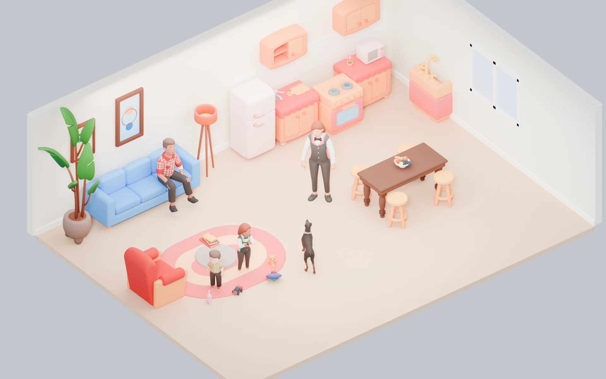</figure>
</section>

<!-- A IDEIA -->
<section id="ideia">
  <div class="sec-head">
    <span class="eyebrow" style="--c:var(--sky)">A ideia</span>
    <h2>Não existe modo solo nem modo multijogador: existe um mundo, e quem está nele agora</h2>
    <p class="lead">Cada morador tem necessidades, personalidade, memória, relacionamentos, habilidades, rotina, trabalho, família e ciclo de vida. Você administra as famílias a que tem acesso, alternando entre os moradores; quem não recebe comando segue a própria vida. Convidar alguém não abre outro jogo nem desliga nenhum sistema: só acrescenta mais uma pessoa ao mesmo mundo.</p>
  </div>
  <div class="card facet" style="--soft:var(--sky-soft);--cut:18px">
    <h3>Promessa ao jogador</h3>
    <p class="prose" style="margin:0">Viva uma história inteira, com ou sem companhia. Crie moradores, forme uma família, construa a sua casa e acompanhe gerações. Quando quiser, chame alguém para viver essa história com você, na sua casa ou na casa ao lado.</p>
  </div>
  <h3>Sete pilares que não se negociam</h3>
  <div class="grid g4">
    <div class="pillar facet" style="--soft:var(--leaf-soft)"><h3>A família é o que se joga</h3><p class="small">Quem tem acesso a uma família comanda os moradores dela. Mais pessoas podem ter acesso à mesma família.</p></div>
    <div class="pillar facet" style="--soft:var(--sky-soft)"><h3>Uma simulação para todos</h3><p class="small">Fome, gravidez, amizade, trabalho e envelhecimento seguem as mesmas regras para qualquer morador, dirigido por alguém ou pela IA.</p></div>
    <div class="pillar facet" style="--soft:var(--teal-soft)"><h3>Autonomia e comando convivem</h3><p class="small">Todo morador tem IA do dia a dia; o comando humano tem prioridade; ninguém precisa dirigir todos o tempo todo.</p></div>
    <div class="pillar facet" style="--soft:var(--berry-soft)"><h3>Pessoas se somam</h3><p class="small">O mundo pode ter 1 ou 12 pessoas, uma ou várias famílias. Chegar ou sair alguém não muda o que o jogo faz.</p></div>
    <div class="pillar facet" style="--soft:var(--sun-soft)"><h3>Tudo tem consequência</h3><p class="small">Relacionamentos, filhos, casas, empregos, bens e histórias ficam gravados no mundo.</p></div>
    <div class="pillar facet" style="--soft:var(--tangerine-soft)"><h3>Privado e familiar</h3><p class="small">Mundos por convite, com controle de idade, consentimento, permissões e privacidade.</p></div>
    <div class="pillar facet" style="--soft:var(--leaf-soft)"><h3>Cresce por partes</h3><p class="small">Primeiro uma casa e uma família que funcionam de verdade; bairro, cidade e serviços vêm depois, medidos.</p></div>
    <div class="pillar facet" style="--soft:var(--sky-soft)"><h3>O que o Morada não é</h3><p class="small">Não é um avatar por conta, nem RP que depende de outras pessoas para fazer a família existir, nem MMO com todas as casas simuladas a cada quadro, nem cópia da série The Sims.</p></div>
  </div>
</section>

<!-- UM MUNDO, VÁRIOS MOMENTOS -->
<section id="mundo">
  <div class="sec-head">
    <span class="eyebrow" style="--c:var(--berry)">Um mundo, vários momentos</span>
    <h2>A mesma história passa por estar sozinho, dividir a casa e ter vizinhos, sem trocar de jogo</h2>
    <p class="lead">Jogar sozinho, dividir a família com alguém e ter famílias vizinhas de amigos não são três modos: são momentos de um mesmo mundo. Nada é convertido, copiado ou recriado quando alguém entra ou sai.</p>
  </div>
  <div class="ladder" aria-label="A história de um mundo">
    <div class="step">Semana 1<small>Lia cria a família Oliveira (Lia, Marcos, Nina e o pequeno Theo) e joga sozinha, pausando e acelerando quando quer</small></div><span class="arrow-r" aria-hidden="true">→</span>
    <div class="step k">Semana 3<small>convida Bruno para a família; ele assume Marcos, ela segue com Lia</small></div><span class="arrow-r" aria-hidden="true">→</span>
    <div class="step k">Semana 4<small>Clara, amiga dos dois, cria a própria família no lote ao lado, com o filho adolescente Davi</small></div><span class="arrow-r" aria-hidden="true">→</span>
    <div class="step">Semana 6<small>Bruno, por Marcos, pede Lia em casamento; como Lia é a preferida da Lia, o pedido espera o aceite dela</small></div><span class="arrow-r" aria-hidden="true">→</span>
    <div class="step k">Semana 10<small>nasce um bebê; Lia, Bruno e a babá se revezam nos cuidados, um de cada vez</small></div><span class="arrow-r" aria-hidden="true">→</span>
    <div class="step">Semana 12<small>Bruno sai do grupo; Marcos continua na família, vivendo a própria rotina</small></div>
  </div>
  <div class="grid g3">
    <div class="card facet" style="--soft:var(--leaf-soft)"><h4>Lia sozinha</h4><p class="small">Ela é a única pessoa presente, então o tempo do mundo é dela: pausa, 1×, 2× e 3×. Comanda todos os moradores da casa pelo retrato. Pela Lia, faz amizade com Dona Célia, vizinha NPC, que passa a visitar a casa. Um NPC que case com alguém da família passa a morar nela e a ser comandável como os outros.</p></div>
    <div class="card facet" style="--soft:var(--sky-soft)"><h4>Lia e Bruno na mesma casa</h4><p class="small">Os dois têm acesso à família. Bruno reserva Marcos, Lia reserva Lia, e Nina está livre para quem pedir primeiro. Pausar agora pede o acordo dos dois. Quando Bruno sai, Marcos volta à rotina dele, protegido, e Lia continua jogando.</p></div>
    <div class="card facet" style="--soft:var(--berry-soft)"><h4>Clara ao lado</h4><p class="small">Clara tem a própria família e acesso só a ela. Visita, os moradores se conhecem e criam vínculos. Unir as duas casas depois muda quem mora onde e quem pode comandar quem, sem mudar a identidade, o parentesco ou a história de ninguém.</p></div>
  </div>
  <h3>Convidar pergunta como a pessoa vai participar</h3>
  <div class="tbl">
    <table>
      <thead><tr><th>Ao convidar</th><th>A pessoa pode</th><th>Não pode, sem permissão</th></tr></thead>
      <tbody>
        <tr><td><b>Dividir minha família</b></td><td>Reservar moradores autorizados que estejam livres, ou criar um morador novo, conforme as regras do mundo</td><td>Comandar o morador preferido de outra pessoa, gastar acima do limite</td></tr>
        <tr><td><b>Morar ao lado</b></td><td>Criar a própria família num lote livre do bairro</td><td>Comandar moradores de outras famílias</td></tr>
        <tr><td><b>Visitar</b></td><td>Circular e interagir</td><td>Comandar moradores, construir, gastar</td></tr>
      </tbody>
    </table>
  </div>
  <p class="caption">Uma conta pode ter um morador preferido para entrar mais rápido. É preferência de interface e proteção quando a pessoa está fora, não uma regra que limita o que ela comanda.</p>
</section>

<!-- AS REGRAS -->
<section id="regras">
  <div class="sec-head">
    <span class="eyebrow" style="--c:var(--teal)">As regras</span>
    <h2>Uma regra para cada assunto, valendo para 1 ou para 12 pessoas</h2>
    <p class="lead">O que muda entre jogar sozinho e acompanhado não está escrito como exceção: é o resultado da mesma regra aplicada a quem está presente. Se uma regra precisar de um "se for solo", ela está errada.</p>
  </div>
  <div class="tbl">
    <table>
      <thead><tr><th>Assunto</th><th>A regra</th><th>Com só você presente</th><th>Com outras pessoas presentes</th></tr></thead>
      <tbody>
        <tr><td><b>Comando</b></td><td>Você comanda os moradores das famílias a que tem acesso, um por vez, com reserva temporária</td><td>Todos os da sua família, trocando pelo retrato</td><td>Os que estiverem livres; os outros mostram quem está dirigindo</td></tr>
        <tr><td><b>Tempo</b></td><td>Os presentes decidem o relógio, dentro da política de avanço do mundo</td><td>Você pausa e acelera quando quiser; não há família de ninguém esperando</td><td>Pausar, acelerar ou pular a noite pede o acordo dos presentes, e famílias de quem está fora seguem a política do mundo</td></tr>
        <tr><td><b>Consentimento</b></td><td>Acontecimentos irreversíveis na vida do preferido de outra pessoa pedem o aceite dela, seja quem for que esteja dirigindo</td><td>Não aparece: não há preferido de outra pessoa presente nem fora dele afetado</td><td>Namoro, casamento, filhos, mudança e venda envolvendo preferidos de outros pedem aceite</td></tr>
        <tr><td><b>Ausência</b></td><td>Família sem nenhum jogador presente fica inteira em rotina protegida; preferido de quem saiu também</td><td>Quando você sai, ninguém fica: o mundo salva e hiberna</td><td>Família de quem está fora cuida de si, sem nada irreversível; preferidos de quem saiu também</td></tr>
        <tr><td><b>Gastar e construir</b></td><td>Conforme as permissões de cada pessoa em cada família</td><td>Você tem todas na sua família</td><td>Cada um tem as que receber; operações conflitantes se resolvem por versão</td></tr>
        <tr><td><b>Mudar de fase de vida</b></td><td>A transição de um preferido, e de qualquer morador de família ausente, espera alguém dela estar presente</td><td>Acontece com você jogando</td><td>A de quem está fora fica para quando a pessoa voltar</td></tr>
        <tr><td><b>Onde a simulação roda</b></td><td>Numa instância do servidor, a única dona do estado; mundo vazio hiberna</td><td>No servidor, com o navegador desenhando e prevendo o movimento</td><td>Na mesma instância; quem entra se conecta a ela</td></tr>
        <tr><td><b>Continuidade</b></td><td>O mundo tem responsável e coadministradores e não depende de quem o criou seguir assinando</td><td>Você é a responsável</td><td>Se a responsável sai ou cancela, um coadministrador segue; transferir é um aceite</td></tr>
      </tbody>
    </table>
  </div>
  <p class="caption">A coluna da direita e a do meio não são dois jogos: são a mesma linha da tabela em dois momentos.</p>
</section>

<!-- QUEM É QUEM -->
<section id="dominio">
  <div class="sec-head">
    <span class="eyebrow" style="--c:var(--berry)">Quem é quem</span>
    <h2>Jogador, morador, família, moradia e mundo são coisas diferentes</h2>
    <p class="lead">Misturar esses conceitos foi o erro da v3. A partir da v4, cada um é uma entidade separada, com regras próprias. O jogador recebe direitos sobre moradores que já existem; a vida deles não depende de ninguém estar conectado.</p>
  </div>
  <pre class="mermaid">
flowchart LR
  M[Mundo] --> B[Bairros e lotes]
  B --> I[Imóveis]
  M --> F[Famílias]
  F --> R[Moradores]
  R --- V[Relações e parentesco]
  P[Jogadores: perfis do Recreio] --> A[Acesso a famílias]
  A --> F
  P --> C[Reserva de controle]
  C --> R
  R --> IA[IA de cada morador]
  </pre>
  <div class="tbl">
    <table>
      <thead><tr><th>Conceito</th><th>O que é</th><th>Exemplo</th></tr></thead>
      <tbody>
        <tr><td><b>Jogador</b></td><td>Um perfil do Recreio: o titular ou um perfil da família, com idade própria</td><td>Perfil da Lia</td></tr>
        <tr><td><b>Mundo</b></td><td>Um save completo, com relógio, bairros, moradores e regras</td><td>Mundo dos amigos</td></tr>
        <tr><td><b>Bairro e lote</b></td><td>Região do mundo e área que recebe uma construção</td><td>Bairro Ipê, lote 14</td></tr>
        <tr><td><b>Imóvel</b></td><td>Construção e móveis, guardados como documento</td><td>Casa 14</td></tr>
        <tr><td><b>Família</b> (núcleo doméstico)</td><td>Quem mora junto e divide casa e fundo</td><td>Família Oliveira</td></tr>
        <tr><td><b>Morador</b></td><td>Pessoa virtual com identidade e simulação próprias</td><td>Lia, Marcos, Nina</td></tr>
        <tr><td><b>Relação</b></td><td>Vínculo entre moradores, morem juntos ou não</td><td>Pais, cônjuges, ex, amigos</td></tr>
        <tr><td><b>Acesso à família</b></td><td>Direito de um jogador comandar uma família, com permissões</td><td>Lia e Bruno na família 14</td></tr>
        <tr><td><b>Reserva de controle</b></td><td>Um morador recebendo comandos de um jogador agora, por tempo curto e renovável</td><td>Bruno dirige Marcos</td></tr>
        <tr><td><b>Morador preferido</b></td><td>O jogador que autoriza os acontecimentos irreversíveis daquele morador e é o primeiro a dirigi-lo. Autorizar e dirigir são direitos separados</td><td>Marcos é o preferido do Bruno</td></tr>
        <tr><td><b>Responsável pelo mundo</b></td><td>Quem configura, convida e responde pela continuidade, com coadministradores. Papel do Recreio, não da família</td><td>Lia, com Bruno como coadministrador</td></tr>
        <tr><td><b>Presença</b></td><td>Se o jogador está ou não no mundo agora</td><td>Bruno fora</td></tr>
      </tbody>
    </table>
  </div>
  <div class="grid g2">
    <div class="card facet">
      <h3>Regras de integridade</h3>
      <ol class="small" style="margin:0;padding-left:18px;display:grid;gap:6px">
        <li>Um morador existe com ou sem jogador conectado.</li>
        <li>Um morador mora em no máximo uma família por vez; parentesco e relações não dependem de morar junto.</li>
        <li>Uma família tem vários moradores e pode dar acesso a vários jogadores.</li>
        <li>Um jogador pode ter acesso a várias famílias e escolhe uma como ativa na interface.</li>
        <li>Um morador tem no máximo um jogador dirigindo por vez; sem ninguém, segue a autonomia.</li>
        <li>Acontecimentos irreversíveis de um preferido (namoro, casamento, filhos, mudança, venda, separação) pedem o aceite de quem o tem como preferido, mesmo que outra pessoa esteja dirigindo.</li>
        <li>Ser mãe, pai ou filho no jogo não dá poder de comandar, vender ou editar: isso é acesso à família.</li>
        <li>Mudar de casa não apaga relações, parentesco, carreira nem progresso.</li>
        <li>Visitar não dá poder de construir, gastar ou comandar.</li>
        <li>Toda mudança permanente guarda autor, mundo, versão e motivo.</li>
      </ol>
    </div>
    <div class="card facet" style="--soft:var(--sun-soft)">
      <h3>Por que isso resolve</h3>
      <p class="small">"NPC" deixa de ser um tipo de personagem. Quer dizer só que ninguém está dirigindo aquele morador agora, ou que ele nunca foi preferido de alguém. Nenhum campo "é NPC" decide regras de jogo, e quem dirige não fica gravado no morador: é uma reserva de sessão.</p>
      <p class="small">Isso resolve os casos difíceis sem exceções. Duas pessoas têm um filho: as duas podem cuidar dele, uma por vez. Uma sai: a outra segue. Alguém casa com um NPC, muda de casa, cria outra família ou volta a jogar sozinho: ninguém precisa ser convertido em outra coisa.</p>
    </div>
  </div>
</section>

<!-- CONTROLE -->
<section id="controle">
  <div class="sec-head">
    <span class="eyebrow" style="--c:var(--sky)">Controle e permissões</span>
    <h2>Escolher um morador é pedir uma reserva curta; a IA cuida dos outros</h2>
    <p class="lead">Os retratos mostram todos os moradores das famílias a que você tem acesso, de bebês a idosos. Tocar num retrato pede a reserva daquele morador; enquanto você joga, ela se renova sozinha.</p>
  </div>
  <div class="ladder" aria-label="Fluxo de controle">
    <div class="step">Abre a família<small>com acesso</small></div><span class="arrow-r" aria-hidden="true">→</span>
    <div class="step">Vê os retratos<small>todos os moradores</small></div><span class="arrow-r" aria-hidden="true">→</span>
    <div class="step k">Pede a reserva<small>morador livre</small></div><span class="arrow-r" aria-hidden="true">→</span>
    <div class="step">Comanda<small>passa à frente da autonomia</small></div><span class="arrow-r" aria-hidden="true">→</span>
    <div class="step">Fila vazia<small>a autonomia age, se você deixar</small></div><span class="arrow-r" aria-hidden="true">→</span>
    <div class="step">Troca ou sai<small>a reserva acaba; outro pode assumir</small></div>
  </div>
  <div class="chips" aria-label="Estados de um retrato">
    <span class="tag" style="--soft:var(--leaf-soft);--c:var(--leaf)">Disponível</span>
    <span class="tag" style="--soft:var(--sky-soft);--c:var(--sky)">Dirigido por você</span>
    <span class="tag" style="--soft:var(--berry-soft);--c:var(--berry)">Dirigido por Bruno · pedir</span>
    <span class="tag" style="--soft:var(--sun-soft);--c:var(--sun)">Controle compartilhado liberado</span>
    <span class="tag" style="--soft:var(--teal-soft);--c:var(--teal)">Autônomo</span>
    <span class="tag" style="--soft:var(--surface-2);--c:var(--muted)">Protegido (preferido de quem está fora ou família ausente)</span>
  </div>
  <div class="tbl">
    <table>
      <thead><tr><th>Morador</th><th>Quem pode dirigir</th><th>Quando a IA cuida</th></tr></thead>
      <tbody>
        <tr><td><b>Da família, sem preferido</b> (filhos, cônjuge que veio morar)</td><td>Qualquer jogador com acesso à família, um por vez</td><td>Sempre que ninguém está dirigindo</td></tr>
        <tr><td><b>Bebê de colo</b></td><td>Selecionável pelo retrato desde o nascimento. Os comandos são de cuidado (mamar, ninar, trocar, pôr no berço, brincar) e vão para o morador que você dirige ou para um adulto livre ou a babá</td><td>Sempre; chora quando precisa e a casa responde</td></tr>
        <tr><td><b>Criança de 2–3 anos</b></td><td>Comandos diretos simples (andar até, brincar, comer com ajuda, cochilar), mais os de cuidado</td><td>Quando ninguém dirige</td></tr>
        <tr><td><b>Seu preferido</b></td><td>Você primeiro. Liberando o controle compartilhado, outros dirigem também, inclusive quando você está fora; os irreversíveis continuam pedindo o seu aceite</td><td>Quando sua fila esvazia, e na rotina protegida quando você sai sem liberar</td></tr>
        <tr><td><b>Preferido de quem está fora</b></td><td>Ninguém, salvo controle compartilhado liberado antes; nesse caso só ações reversíveis</td><td>Rotina protegida</td></tr>
        <tr><td><b>Morador de outra família</b></td><td>Só quem tem acesso a ela</td><td>Sempre que ninguém dela está dirigindo</td></tr>
        <tr><td><b>Funcionário</b> (diarista, babá)</td><td>Ninguém: recebe pedidos e prioridades da família</td><td>Pela agenda e pelo quadro de tarefas</td></tr>
      </tbody>
    </table>
  </div>
  <div class="grid g2">
    <div class="card facet">
      <h3>Pedidos ao mesmo tempo</h3>
      <ul class="small" style="margin:0;padding-left:18px;display:grid;gap:6px">
        <li>Dois jogadores tentam o mesmo morador: vale a primeira reserva; o outro vê o estado e pode pedir a troca.</li>
        <li>Desconexão: a reserva expira sozinha depois de uma janela para reconectar.</li>
        <li>Mesmo objeto: o ponto de uso é reservado pela simulação, com fila ou alternativa.</li>
        <li>Construção: trava da região ou da peça em edição, com versão; não do cômodo, que pode mudar com a obra.</li>
        <li>Desfazer reverte só as próprias operações que ainda valem, nunca a compra de outra pessoa que dependia delas.</li>
        <li>Dinheiro e bens: operações transacionais e idempotentes.</li>
      </ul>
    </div>
    <div class="card facet">
      <h3>Permissões, por jogador e por família</h3>
      <div class="chips">
        <span class="tag" style="--soft:var(--sky-soft);--c:var(--sky)">Ver</span>
        <span class="tag" style="--soft:var(--sky-soft);--c:var(--sky)">Comandar moradores sem preferido</span>
        <span class="tag" style="--soft:var(--sky-soft);--c:var(--sky)">Comandar preferido de outro, com aceite</span>
        <span class="tag" style="--soft:var(--teal-soft);--c:var(--teal)">Editar aparência</span>
        <span class="tag" style="--soft:var(--teal-soft);--c:var(--teal)">Construir</span>
        <span class="tag" style="--soft:var(--teal-soft);--c:var(--teal)">Decorar</span>
        <span class="tag" style="--soft:var(--sun-soft);--c:var(--sun)">Gastar até um limite</span>
        <span class="tag" style="--soft:var(--sun-soft);--c:var(--sun)">Gerir finanças</span>
        <span class="tag" style="--soft:var(--berry-soft);--c:var(--berry)">Convidar moradores</span>
        <span class="tag" style="--soft:var(--berry-soft);--c:var(--berry)">Autorizar mudança</span>
        <span class="tag" style="--soft:var(--leaf-soft);--c:var(--leaf)">Gerir serviços</span>
        <span class="tag" style="--soft:var(--leaf-soft);--c:var(--leaf)">Gerir o mundo</span>
      </div>
      <p class="small" style="margin-top:10px">Os direitos pertencem ao jogador num contexto (mundo, família, lote) e podem ser revogados. A idade do morador nunca define privilégios da conta.</p>
    </div>
  </div>
</section>

<!-- VIDA EM FAMÍLIA -->
<section id="vida">
  <div class="sec-head">
    <span class="eyebrow" style="--c:var(--berry)">Vida em família</span>
    <h2>Relacionar, casar, ter filhos, envelhecer e mudar de casa, com as mesmas regras para todos</h2>
    <p class="lead">Cada acontecimento é um evento da simulação, gravado no mundo. Com mais pessoas presentes, o que muda é só o consentimento quando a decisão afeta o preferido de outra.</p>
  </div>
  <div class="grid g2">
    <div class="card facet">
      <h3>Relações e casamento</h3>
      <ul class="small" style="margin:0;padding-left:18px;display:grid;gap:6px">
        <li>Um grafo de vínculos persistente: amizade, atração, confiança, afinidades, histórico, namoro, casamento, ex, parentesco e eventos em comum.</li>
        <li><b>NPC com NPC:</b> se relacionam sozinhos, pela personalidade, compatibilidade, oportunidade e regras do mundo.</li>
        <li><b>Seu morador com um NPC:</b> você propõe; o NPC aceita, recusa ou adia pela simulação, nunca por sorteio sem contexto.</li>
        <li><b>Preferidos de pessoas diferentes:</b> namoro, casamento, filhos e morar junto pedem o aceite das duas. Conversar, brincar e abraçar não pedem nada.</li>
        <li>Casar e morar junto são decisões separadas. Separar pode partir de um lado só.</li>
      </ul>
    </div>
    <div class="card facet">
      <h3>Gravidez e nascimento</h3>
      <ul class="small" style="margin:0;padding-left:18px;display:grid;gap:6px">
        <li>Parte do ciclo de vida, mostrada de forma não explícita, com adoção e outras formas de formar família desde o início.</li>
        <li>Para começar: idade da conta, idade e estado dos moradores, regras do mundo, aceites necessários e limite da casa.</li>
        <li>A gravidez é um evento persistente com data prevista e avança no tempo do jogo, nunca com o mundo pausado.</li>
        <li>O bebê herda traços visuais dos pais com semente reproduzível, ajustáveis dentro do estilo.</li>
        <li>O nascimento cria um morador novo, com parentesco, necessidades e família; não cria conta de jogador. Aparece nos retratos no mesmo instante e já recebe comandos de cuidado de quem tem acesso à família.</li>
        <li>Se a família estiver ausente, a gravidez fica em suspenso e a data prevista anda junto; o parto sempre acontece com alguém da família presente.</li>
        <li>Gêmeos e casos raros vêm depois do caso simples funcionar.</li>
      </ul>
    </div>
    <div class="card facet">
      <h3>Fases de vida</h3>
      <div class="ladder" aria-label="Fases de vida" style="margin:4px 0 8px">
        <div class="step">Bebê de colo</div><span class="arrow-r" aria-hidden="true">→</span><div class="step">Criança pequena</div><span class="arrow-r" aria-hidden="true">→</span><div class="step">Criança</div><span class="arrow-r" aria-hidden="true">→</span><div class="step">Adolescente</div><span class="arrow-r" aria-hidden="true">→</span><div class="step">Adulto</div><span class="arrow-r" aria-hidden="true">→</span><div class="step">Idoso</div>
      </div>
      <ul class="small" style="margin:0;padding-left:18px;display:grid;gap:6px">
        <li>Cada fase muda o corpo, as animações, a rotina, a escola, a autonomia, as interações e os cuidados.</li>
        <li>Envelhecimento por mundo: desligado, lento, normal ou rápido. Famílias ausentes seguem a política de avanço do mundo (ver Tempo).</li>
        <li>Mudar de fase mantém a mesma pessoa: memórias, família, habilidades e bens. A aparência é levada ao corpo da nova fase.</li>
        <li><b>Morte desligada por padrão.</b> Se o mundo ligar, há despedida, herança e memória; ninguém some sem explicação.</li>
      </ul>
    </div>
    <div class="card facet">
      <h3>Mudar, unir e separar</h3>
      <ul class="small" style="margin:0;padding-left:18px;display:grid;gap:6px">
        <li><b>Mudar:</b> escolher quem vai, o lote e o imóvel, conferir dependentes, transferir o combinado; as relações vão junto.</li>
        <li><b>Unir:</b> duas famílias viram uma; os acessos são recalculados.</li>
        <li><b>Separar:</b> quem fica, quem sai, dependentes, lote e fundo; envolvendo preferidos de outras pessoas, cada passo pede aceite.</li>
        <li>Filhos com pais em casas diferentes mantêm o parentesco; no começo, comandar segue a casa onde moram. Guarda compartilhada vem depois.</li>
        <li>Limite por família: 8 moradores no protótipo, a testar. Não confundir com as 12 pessoas por mundo.</li>
      </ul>
    </div>
  </div>
  <p class="caption">O mundo guarda as memórias que importam (nascimento, adoção, casamento, separação, mudança, promoção, formatura, amizades marcantes, aniversários, despedidas) e as notícias do bairro saem delas, não de sorteio para preencher a tela.</p>
</section>

<!-- AUTONOMIA -->
<section id="autonomia">
  <div class="sec-head">
    <span class="eyebrow" style="--c:var(--leaf)">Autonomia</span>
    <h2>Todo morador decide sozinho o que fazer quando ninguém está dirigindo</h2>
    <p class="lead">Cada morador tem necessidades, preferências, traços, habilidades, humor calculado, relações, fila de ações, agenda, inventário e objetivos curtos. O conteúdo é descrito em dados: necessidade, sensação, interação, teste e efeito.</p>
  </div>
  <div class="grid g2">
    <div class="tbl">
      <table>
        <thead><tr><th>Necessidade</th><th>Esvazia em (meta)</th><th>Se zerar</th></tr></thead>
        <tbody>
          <tr><td>Fome</td><td>~14 h de jogo</td><td>"Faminto", depois desmaio</td></tr>
          <tr><td>Energia</td><td>~18 h</td><td>Dorme onde estiver</td></tr>
          <tr><td>Higiene</td><td>~20 h</td><td>Incomoda quem está perto</td></tr>
          <tr><td>Bexiga</td><td>~8 h</td><td>Acidente e vergonha</td></tr>
          <tr><td>Social</td><td>~30 h</td><td>Solidão, pior humor</td></tr>
          <tr><td>Diversão</td><td>~24 h</td><td>Tédio, menos autonomia</td></tr>
          <tr><td>Bebês: conforto, fralda, vínculo</td><td>conforme a idade</td><td>Choro; pede cuidado</td></tr>
        </tbody>
      </table>
    </div>
    <div class="card facet" style="--cut:18px">
      <h3>Como escolhe</h3>
      <p class="small"><b>pontuação = utilidade × urgência × contexto × personalidade × disponibilidade × custo do caminho</b>, sorteando entre as melhores para não ficar previsível. Regras rígidas vêm antes da conta: segurança, idade, permissões, recursos e ações irreversíveis.</p>
      <ol class="small" style="margin:0;padding-left:18px;display:grid;gap:4px">
        <li>Urgências do corpo</li><li>Obrigações e agenda</li><li>Objetivos pessoais</li><li>Convívio e lazer</li><li>Preferências</li>
      </ol>
      <p class="small">Sensações (por exemplo "com fome" abaixo de 25%) somam peso a um humor, calculado e nunca salvo: alegre, tranquilo, focado, inspirado, triste, irritado, tenso, envergonhado, apaixonado. Até 3 traços por adulto mudam pesos e velocidades.</p>
    </div>
  </div>
  <h3>Ciclo de uma ação</h3>
  <div class="ladder" aria-label="Ciclo de uma ação">
    <div class="step">Pedir</div><span class="arrow-r" aria-hidden="true">→</span><div class="step">Validar</div><span class="arrow-r" aria-hidden="true">→</span><div class="step k">Reservar o ponto de uso</div><span class="arrow-r" aria-hidden="true">→</span><div class="step">Ir até lá</div><span class="arrow-r" aria-hidden="true">→</span><div class="step">Ajustar a postura</div><span class="arrow-r" aria-hidden="true">→</span><div class="step">Animar</div><span class="arrow-r" aria-hidden="true">→</span><div class="step">Aplicar efeitos</div><span class="arrow-r" aria-hidden="true">→</span><div class="step">Concluir ou cancelar</div><span class="arrow-r" aria-hidden="true">→</span><div class="step">Liberar a reserva</div>
  </div>
  <p class="prose small">A simulação registra o que acontece; a animação mostra como parece acontecer. Uma animação que falha no navegador nunca paga salário em dobro nem deixa o bebê cair do colo.</p>
  <h3>Simulação em níveis de detalhe</h3>
  <div class="grid g4">
    <div class="state" style="--c:var(--leaf)"><h4><i class="dot"></i>Lote com alguém</h4><p class="small">Ações detalhadas, navegação, interações e animações visíveis.</p></div>
    <div class="state" style="--c:var(--sun)"><h4><i class="dot"></i>Lotes perto, sem ninguém</h4><p class="small">Rotina resumida e eventos de agenda; o estado importante continua atualizado.</p></div>
    <div class="state" style="--c:var(--sky)"><h4><i class="dot"></i>Lotes longe</h4><p class="small">Avança por eventos agendados: escola, trabalho, aniversário, gravidez; necessidades calculadas de forma resumida e coerente.</p></div>
    <div class="state" style="--c:var(--muted)"><h4><i class="dot"></i>Mundo sem ninguém</h4><p class="small">Salvo, pausado e fora da memória. Nada envelhece, nenhum contrato corre.</p></div>
  </div>
  <p class="caption">Nem 10 Hz de IA e navegação em todos os moradores do bairro, nem sorteios que criam nascimentos ou divórcios sem história: os eventos saem das regras, da agenda e do estado.</p>
</section>

<!-- TEMPO -->
<section id="tempo">
  <div class="sec-head">
    <span class="eyebrow" style="--c:var(--sun)">Tempo e presença</span>
    <h2>Um relógio por mundo, decidido por quem está presente, sem passar por cima de quem está fora</h2>
    <p class="lead">O mundo tem um relógio só. Quem está presente decide como ele anda. Mas, num relógio único, não dá para ter ao mesmo tempo aceleração livre para quem está jogando e nenhuma consequência para as famílias de quem está fora. Por isso cada mundo tem uma política de avanço, escolhida na criação e visível para todos os membros.</p>
  </div>
  <div class="grid g2">
    <div class="card facet" style="--cut:18px">
      <ol class="small" style="margin:0;padding-left:18px;display:grid;gap:6px">
        <li>1× é o padrão. A duração do dia é escolhida por quem gere o mundo (48 min por dia é hipótese, não valor validado).</li>
        <li>Pausar, 2× e 3× valem na hora quando só você está presente; com outras pessoas, pedem o acordo de todos (unanimidade no começo).</li>
        <li>Pular a noite exige o acordo de todos e nenhuma ação crítica em curso: trabalho ativo, parto, evento importante.</li>
        <li>Abrir menu, inventário ou perfil pausa só a sua interação, nunca o mundo dos outros.</li>
        <li>O último a sair: o mundo salva, hiberna e sai da memória. Ninguém presente, nada anda.</li>
        <li>Mudar a velocidade nunca muda identidade, idade ou regra de ninguém: só a rapidez com que o mundo avança.</li>
      </ol>
    </div>
    <div class="timew" aria-labelledby="tw-t">
      <h4 id="tw-t">Simule a duração do dia</h4>
      <div class="seg" role="group" aria-label="Duração de um dia de jogo">
        <button type="button" id="tw-24" data-min="24" aria-pressed="false">1 dia = 24 min</button>
        <button type="button" id="tw-48" data-min="48" aria-pressed="true">48 min</button>
        <button type="button" id="tw-72" data-min="72" aria-pressed="false">72 min</button>
        <button type="button" id="tw-96" data-min="96" aria-pressed="false">96 min</button>
      </div>
      <div class="tw-out" id="tw-out"></div>
    </div>
  </div>
  <h3>Política de avanço com famílias ausentes</h3>
  <div class="tbl">
    <table>
      <thead><tr><th>Política</th><th>O calendário</th><th>As famílias de quem está fora</th><th>Bom para</th></tr></thead>
      <tbody>
        <tr><td><b>Vida em suspenso</b> (padrão)</td><td>Anda como os presentes decidirem</td><td>Rotina protegida inteira: trabalham, pagam contas e cuidam das necessidades, mas não envelhecem, não mudam de fase, não engravidam nem dão à luz, não casam, não se mudam, não perdem emprego. Aniversários e partos ficam para a volta</td><td>Grupos que jogam em horários diferentes</td></tr>
        <tr><td><b>Avanço limitado</b></td><td>Até um teto de dias de jogo por dia real enquanto houver família ausente (por exemplo, 3); passando disso, só 1× ou pausa</td><td>Envelhecem e vivem normalmente, sem nada irreversível; o teto segura a distância</td><td>Quem quer um bairro que envelhece junto, sem correr demais</td></tr>
        <tr><td><b>Bairro em sincronia</b></td><td>Anda livre</td><td>Envelhecem e vivem com o bairro; só os irreversíveis dos preferidos esperam o aceite</td><td>Grupos que combinaram assim e jogam juntos quase sempre</td></tr>
      </tbody>
    </table>
  </div>
  <div class="grid g2">
    <div class="card facet">
      <h3>Quem decide a política</h3>
      <p class="small">Quem cria o mundo escolhe; ao convidar alguém para morar ao lado ou dividir a família, a política aparece antes do aceite. Mudar depois pede o acordo de um jogador de cada família com acesso. Num mundo em que todas as famílias estão com alguém presente, como um mundo de uma pessoa só, a política não tem o que segurar e o relógio é livre: a mesma regra, sem exceção para "solo".</p>
    </div>
    <div class="card facet">
      <h3>Família dividida e família ausente</h3>
      <p class="small">Se Bruno sai e Lia continua na família Oliveira, a família não está ausente: Lia está nela. A casa anda com ela, e só Marcos, o preferido do Bruno, fica protegido: sem irreversíveis e com a mudança de fase esperando. Já a família da Clara, no lote ao lado, fica inteira sob a política do mundo enquanto ela estiver fora.</p>
    </div>
  </div>
  <h3>Quem sai, quem fica</h3>
  <div class="grid g4">
    <div class="state" style="--c:var(--leaf)"><h4><i class="dot"></i>Presente</h4><p class="small">Dirige os moradores que reservou; os outros seguem a autonomia.</p></div>
    <div class="state" style="--c:var(--sun)"><h4><i class="dot"></i>Fora, com outros jogando</h4><p class="small">Os preferidos dela e, se a família ficou sem ninguém, a família inteira seguem a rotina protegida e a política de avanço do mundo.</p></div>
    <div class="state" style="--c:var(--sky)"><h4><i class="dot"></i>Trabalhando</h4><p class="small">O morador está no turno fora do lote e volta sozinho no fim do expediente, com alguém presente ou não.</p></div>
    <div class="state" style="--c:var(--berry)"><h4><i class="dot"></i>Voltando</h4><p class="small">Um resumo mostra o que mudou no mundo, os pedidos guardados e oferece retomar o morador de antes.</p></div>
  </div>
  <p class="caption">Isso evita voltar e encontrar o seu morador parado na cozinha há dias, e também voltar e descobrir que a sua família envelheceu, casou ou perdeu a casa sem você, a não ser que o grupo tenha escolhido o bairro em sincronia.</p>
</section>

<!-- ONDE O MUNDO RODA -->
<section id="onde">
  <div class="sec-head">
    <span class="eyebrow" style="--c:var(--teal)">Onde o mundo roda</span>
    <h2>Um mundo, uma simulação oficial, no servidor do Morada</h2>
    <p class="lead">Todo mundo do Morada existe uma vez só, guardado no Recreio. Enquanto houver alguém presente, ele roda numa instância do servidor, que é a única dona do estado oficial. Quando todos saem, salva e hiberna. Jogar sozinho ou acompanhado usa o mesmo caminho: quem entra se junta à mesma instância, sem copiar nem transferir nada.</p>
  </div>
  <div class="grid g3">
    <div class="card facet" style="--soft:var(--leaf-soft)">
      <h4>Alguém presente</h4>
      <p class="small">O mundo abre numa instância do servidor, que carrega a última fotografia e o diário de eventos. Uma instância hospeda vários mundos pequenos; separar em processos só quando a medição pedir. O navegador desenha, anima e prevê o movimento para a resposta parecer imediata.</p>
    </div>
    <div class="card facet" style="--soft:var(--sky-soft)">
      <h4>Mais gente entra</h4>
      <p class="small">A pessoa nova se conecta à mesma instância e recebe o estado atual. Nada muda de lugar, então um nascimento ou uma compra naquele instante são registrados uma vez só, pelo mesmo executor. Quando a última pessoa sai, o mundo faz checkpoint, hiberna e sai da memória.</p>
    </div>
    <div class="card facet" style="--soft:var(--sun-soft)">
      <h4>Sem internet (depois)</h4>
      <p class="small">"Levar o mundo" fica para uma fase própria: com o mundo parado, a posse passa ao aparelho com prazo, e ninguém mais entra até voltar. Ida e volta acontecem com o mundo em repouso, nunca no meio de uma partida.</p>
    </div>
  </div>
  <div class="grid g2">
    <div style="display:grid;gap:22px;min-width:0">
      <div class="code-head"><span>packages/morada-sim/execucao.ts</span><span>esboço</span></div>
<pre><span class="k">interface</span> ExecucaoDoMundo {        <span class="c">// posse dada pelo Recreio (SpaceLease)</span>
  mundoId: MundoId;
  onde: <span class="s">"servidor"</span> | <span class="s">"offline"</span>;
  instancia: string;             <span class="c">// processo que executa agora</span>
  tokenDeCerca: number;          <span class="c">// toda escrita leva o token atual</span>
  tick: number;                  <span class="c">// último passo confirmado no diário</span>
  expiraEm: number;              <span class="c">// renovada enquanto roda</span>
}

<span class="c">// O mesmo pacote roda no servidor (Node) e num Web Worker,</span>
<span class="c">// usado em testes, replays de bug e, depois, no modo offline.</span>
<span class="k">const</span> mundo = criarMundo(<span class="k">await</span> carregar(mundoId));
mundo.aplicar(intencao);         <span class="c">// valida, decide, emite eventos</span>
mundo.avancar(<span class="n">100</span>);            <span class="c">// um tick lógico de 100 ms</span></pre>
    </div>
    <div class="card facet" style="--cut:18px">
      <h3>Por que mudou desde a v4</h3>
      <p class="small">A v4 rodava o mundo no navegador quando havia uma pessoa e passava a execução ao servidor quando alguém entrava. A ideia economiza servidor, mas a troca ao vivo é o ponto mais frágil do projeto: precisa garantir que um parto ou uma compra no instante da troca aconteça uma vez só, mesmo com a rede caindo. Também deixa o estado que outras pessoas vão herdar nas mãos de um cliente que pode ser alterado.</p>
      <p class="small">Dos argumentos da revisão, dois já estavam cobertos na v4: a cópia que vale fica na nuvem, e o relógio pausa quando a aba some. O peso real é o de engenharia: um caminho só para construir, operar e depurar na primeira versão, contra uma economia que ainda não foi medida.</p>
      <ul class="small" style="margin:0;padding-left:18px;display:grid;gap:6px">
        <li><b>Mantido:</b> a mesma simulação em TypeScript, sem DOM, rede ou banco dentro, roda no Worker e no servidor.</li>
        <li><b>Mantido:</b> posse com token de cerca, porque instâncias do servidor também caem e reiniciam.</li>
        <li><b>Porta de reavaliação:</b> o Marco 0 mede o custo por hora de mundo com 1, 2, 4 e 8 pessoas. Se as horas de uma pessoa só pesarem demais na margem, avaliar execução local apenas em mundos de um membro, com a passagem feita com o mundo parado.</li>
      </ul>
    </div>
  </div>
</section>

<!-- CASA E CONSTRUÇÃO -->
<section id="casa">
  <div class="sec-head">
    <span class="eyebrow" style="--c:var(--tangerine)">Casa, construção e dinheiro</span>
    <h2>A casa é um documento; família e lote são coisas diferentes</h2>
    <p class="lead">A casa não é um modelo 3D fechado: é uma lista de paredes, aberturas, pisos e objetos que o navegador monta. Isso permite salvar, copiar, desfazer, trocar plantas e validar cada mudança. A família ocupa um lote sem ser o lote: mudar de casa não recria ninguém.</p>
  </div>
  <div class="grid g2">
    <figure class="fig">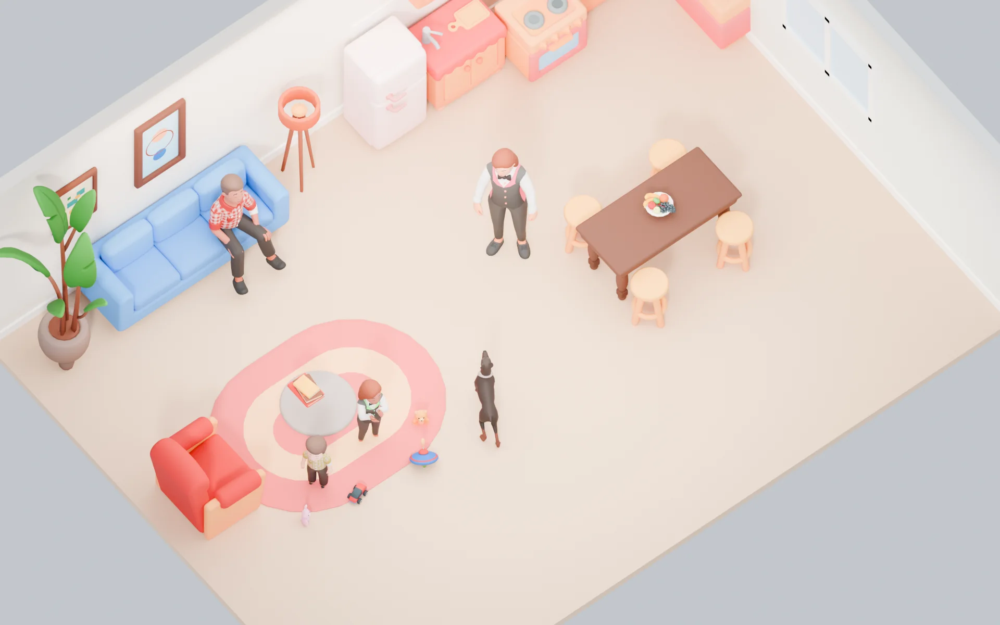<figcaption>A casa dos Oliveira vista do modo construir: móveis do Cute Furniture e do Christmas Pack, brinquedos e pelúcias, moradores vestidos com peças do Chess, do Casino e do Apocalypse. Paredes e piso feitos por script.</figcaption></figure>
    <div class="card facet" style="--cut:18px">
      <h3>Editor</h3>
      <ul class="small" style="margin:0;padding-left:18px;display:grid;gap:6px">
        <li>Paredes, pisos, telhados, portas, janelas, escadas, cercas e peças modulares; grade de 0,5 m, vista de cima e em perspectiva.</li>
        <li>Copiar, pintar, redimensionar, girar, duplicar, desfazer e refazer. Uma parede é um segmento com aberturas; só o trecho alterado é refeito, com colisão e navegação.</li>
        <li>Cada item aponta para o catálogo com versão, posição e variação de cor; o save nunca guarda arquivos 3D.</li>
        <li>O jogo confere tamanho do lote, acesso pelas portas, escadas e pontos de uso; bloqueia saldo negativo, item inválido, obra atravessando moradores e operação de cliente desatualizado.</li>
        <li>Lotes pequeno, médio e grande e até 3 andares no lançamento; plantas prontas e plantas trocadas entre amigos do mundo.</li>
      </ul>
    </div>
  </div>
  <div class="tbl">
    <table>
      <thead><tr><th>Objeto</th><th>Ações</th><th>O que afeta</th></tr></thead>
      <tbody>
        <tr><td>Cama</td><td>Deitar, dormir, namorar (adultos), ler</td><td>Energia, conforto, relação</td></tr>
        <tr><td>Berço</td><td>Pôr para dormir, ninar, tirar do berço</td><td>Sono do bebê, vínculo com o adulto</td></tr>
        <tr><td>Geladeira e fogão</td><td>Lanche, ingredientes, cozinhar para todos</td><td>Fome, estoque, habilidade, risco de incêndio</td></tr>
        <tr><td>Chuveiro e banheira</td><td>Tomar banho, dar banho no bebê</td><td>Higiene, conta de água</td></tr>
        <tr><td>Sofá, TV, computador</td><td>Sentar, cochilar, conversar, assistir, jogar, estudar, trabalhar de casa</td><td>Energia, social, diversão, habilidade, dinheiro, conta de luz</td></tr>
        <tr><td>Porta</td><td>Abrir, fechar, trancar</td><td>Acesso, privacidade, permissões</td></tr>
      </tbody>
    </table>
  </div>
  <p class="caption">Cada tipo de objeto tem um componente de comportamento (pontos de uso, ações, animações e condições). Todos os sofás compartilham o mesmo, então um móvel novo entra no jogo só com dados.</p>
  <div class="grid g3">
    <div class="card facet"><h4>Fundo e carteiras</h4><p class="small">A família tem um fundo comum para contas, compras e salários de funcionários, e cada morador tem a própria carteira. Quanto do salário vai para o fundo é configurável por pessoa, sem padrão imposto.</p></div>
    <div class="card facet"><h4>Economia</h4><p class="small">Moeda do jogo, salários, contas de luz e água, compra e venda de móveis, mudança e orçamento. Sem moeda premium. Toda transação relevante tem identificador único, saldo, autor, versão, histórico e conferência na simulação.</p></div>
    <div class="card facet"><h4>Contas da casa</h4><p class="small">Luz e água por semana, calculadas pelo uso. Sem pagar: aviso, multa e, por fim, aparelhos elétricos param até quitar. Ninguém perde a casa nem os móveis.</p></div>
  </div>
</section>

<!-- SERVIÇOS -->
<section id="servicos">
  <div class="sec-head">
    <span class="eyebrow" style="--c:var(--teal)">Serviços contratados</span>
    <h2>Contrate como um emprego: dias, horário, salário e quantas pessoas a casa precisar</h2>
    <p class="lead">Além do chamado avulso, a casa pode contratar funcionários fixos. É sempre a mesma pessoa, que chega sozinha no turno, cria vínculo com a família e recebe do fundo da casa. Dá para ter duas diaristas, duas babás ou qualquer combinação dentro do limite do mundo. Funcionários são moradores do mundo, com rotina, vínculos e memória, mas não entram na família: ninguém os dirige pelo retrato; a família combina o trabalho pelo contrato.</p>
  </div>

  <div class="grid g2">
    <div class="card facet tint" style="--soft:var(--surface)">
      <span class="tag" style="--soft:var(--sun-soft)">Avulso</span>
      <h3>Para uma necessidade pontual</h3>
      <p class="small">Chama pelo telefone, vem quem estiver disponível, cobra por visita. Bom para uma festa, uma faxina pesada ou uma noite fora.</p>
    </div>
    <div class="card facet" style="background:var(--teal-soft)">
      <span class="tag" style="--soft:var(--surface);--c:var(--teal)">Contrato</span>
      <h3>Para a rotina da casa</h3>
      <p class="small">Agenda semanal por dia e hora, salário por hora, atribuições (quais cômodos, quais crianças), período de experiência de um dia, férias e aviso prévio.</p>
    </div>
  </div>

  <div class="sched" id="sched">
    <div style="display:grid;gap:14px;min-width:0">
      <div class="row" style="flex-wrap:wrap">
        <h3>Agenda da casa dos Oliveira</h3>
        <span class="small muted">Escolha um funcionário e clique ou arraste nas horas</span>
      </div>
      <div class="staff-list" id="staff-list"></div>
      <div class="grid-wrap"><table class="sgrid" id="sgrid" aria-label="Agenda semanal dos funcionários"></table></div>
      <div class="row" style="flex-wrap:wrap;justify-content:flex-start">
        <button type="button" class="btn ghost" id="add-dia">Contratar outra diarista</button>
        <button type="button" class="btn ghost" id="add-baba">Contratar outra babá</button>
        <span class="small muted">Limite padrão: 3 por tipo, ajustável por quem gere o mundo</span>
      </div>
    </div>
    <div class="sum" id="sum"></div>
  </div>
  <p class="caption">Exemplo interativo com dados fictícios. Salários em M$ (moeda provisória). As regras de cobertura são simplificadas para a demonstração.</p>

  <div class="grid g2">
    <div class="card facet" style="--cut:18px">
      <h3>Como dois funcionários dividem o trabalho</h3>
      <p class="small">A casa gera tarefas a partir do estado dos objetos e das pessoas: pia suja, lixo cheio, roupa no cesto, bebê com fome, criança sem dever de casa feito. Cada tarefa vai para um <b>quadro de tarefas</b> do lote.</p>
      <ul class="small" style="margin:0;padding-left:18px;display:grid;gap:6px">
        <li>Funcionário em turno pega a tarefa de maior pontuação e a <b>reserva</b>; ninguém mais pega a mesma.</li>
        <li>Duas diaristas recebem <b>zonas</b> (por andar ou por cômodo) e só atravessam de zona quando a sua acaba.</li>
        <li>Duas babás dividem as <b>crianças atribuídas</b>; sem atribuição, o servidor equilibra pela carga.</li>
        <li>Na troca de turno há sobreposição opcional: a babá que sai passa as tarefas abertas para a que chega.</li>
      </ul>
    </div>
    <div style="display:grid;gap:22px;min-width:0">
      <div class="code-head"><span>packages/morada-sim/servicos/quadro.ts</span><span>TypeScript</span></div>
<pre><span class="k">export function</span> <span class="n">proximaTarefa</span>(f: Funcionario, quadro: Tarefa[], agora: Tick) {
  <span class="k">return</span> quadro
    .filter((t) =&gt; !t.reservadaPor &amp;&amp; t.tipo === f.tipo)
    .filter((t) =&gt; cabeNoTurno(f, t, agora) &amp;&amp; estaAtribuida(f, t))
    .map((t) =&gt; ({
      t,
      score: t.prioridade * <span class="n">10</span>
        - distanciaEmPassos(f, t) * <span class="n">0.5</span>
        - (t.zona === f.zona ? <span class="n">0</span> : <span class="n">8</span>),   <span class="c">// prefere a própria zona</span>
    }))
    .sort((a, b) =&gt; b.score - a.score)[<span class="n">0</span>]?.t;
}</pre>
    </div>
  </div>

  <h3>Ciclo de vida de um contrato</h3>
  <div class="dg" role="img" aria-label="Estados do contrato: proposta, experiência, ativo, férias, aviso prévio e encerrado">
    <svg viewBox="0 0 960 290">
      <defs><marker id="ct-ar" viewBox="0 0 10 10" refX="9" refY="5" markerWidth="7" markerHeight="7" orient="auto-start-reverse"><path class="mk" d="M0 0L10 5L0 10z"/></marker></defs>
      <rect class="box" x="20" y="110" width="148" height="52" rx="10"/><text class="t" x="94" y="141" text-anchor="middle">Proposta</text>
      <rect class="warm" x="210" y="110" width="148" height="52" rx="10"/><text class="t" x="284" y="141" text-anchor="middle">Experiência</text>
      <rect class="good" x="400" y="110" width="148" height="52" rx="10"/><text class="t" x="474" y="141" text-anchor="middle">Ativo</text>
      <rect class="box" x="590" y="110" width="148" height="52" rx="10"/><text class="t" x="664" y="141" text-anchor="middle">Aviso prévio</text>
      <rect class="bad" x="790" y="110" width="148" height="52" rx="10"/><text class="t" x="864" y="141" text-anchor="middle">Encerrado</text>
      <rect class="acc-b" x="400" y="220" width="148" height="52" rx="10"/><text class="t" x="474" y="251" text-anchor="middle">Férias</text>
      <g class="ar">
        <path d="M168 136H208" marker-end="url(#ct-ar)"/><path d="M358 136H398" marker-end="url(#ct-ar)"/><path d="M548 136H588" marker-end="url(#ct-ar)"/><path d="M738 136H788" marker-end="url(#ct-ar)"/>
        <path d="M450 162V218" marker-end="url(#ct-ar)"/><path d="M500 220V164" marker-end="url(#ct-ar)"/>
        <path d="M284 110V60H864V108" marker-end="url(#ct-ar)"/><path d="M474 110V80H840V108" marker-end="url(#ct-ar)"/>
      </g>
      <text class="sub" x="189" y="100" text-anchor="middle">aceita</text>
      <text class="sub" x="379" y="100" text-anchor="middle">aprovada</text>
      <text class="sub" x="569" y="100" text-anchor="middle">aviso</text>
      <text class="sub" x="764" y="100" text-anchor="middle">prazo</text>
      <text class="sub" x="442" y="196" text-anchor="end">pausa</text>
      <text class="sub" x="508" y="196">volta</text>
      <text class="sub" x="574" y="52" text-anchor="middle">não aprovada na experiência ou recusada pela pessoa</text>
      <text class="sub" x="657" y="75" text-anchor="middle">dispensa imediata, com multa de um turno</text>
    </svg>
  </div>

  <div class="grid g3">
    <div class="card facet"><h4>Pagamento</h4><p class="small">Salário por hora trabalhada, debitado do fundo da casa no fim de cada turno ou semanalmente. Sem saldo, o valor vira dívida; com duas faltas de pagamento, o funcionário dá aviso prévio.</p></div>
    <div class="card facet"><h4>Satisfação e nível</h4><p class="small">Cada funcionário tem nível (1 a 5: velocidade e qualidade) e satisfação, que sobe com bom trato e pagamento em dia e cai com sobrecarga (casa grande para uma diarista só). Aumento de salário melhora a satisfação.</p></div>
    <div class="card facet"><h4>Quem gerencia</h4><p class="small">Moradores com a permissão "gerenciar serviços". Toda mudança aparece no histórico da casa: quem contratou, quem alterou a agenda, quem dispensou.</p></div>
    <div class="card facet"><h4>Lote sem ninguém olhando</h4><p class="small">Se ninguém está no lote durante o turno, a simulação roda resumida: a limpeza é aplicada em lote no fim do turno e as necessidades das crianças ficam garantidas pela babá, sem animar ninguém.</p></div>
    <div class="card facet"><h4>Tipos de serviço</h4><p class="small">Diarista, babá, cozinheira, jardineiro e cuidador de idosos no lançamento. Todos usam o mesmo sistema de contrato, agenda e quadro de tarefas.</p></div>
    <div class="card facet"><h4>Avulso continua</h4><p class="small">Chamado avulso funciona em paralelo e respeita o quadro: uma diarista avulsa entra na zona menos coberta naquele momento.</p></div>
  </div>

  <div class="grid g2">
    <div style="display:grid;gap:22px;min-width:0">
      <div class="code-head"><span>packages/morada-sim/servicos/contrato.ts</span><span>Zod</span></div>
<pre><span class="k">export const</span> Contrato = z.object({
  id: Id,
  casaId: Id,
  funcionarioId: Id,                    <span class="c">// morador persistente, sempre a mesma pessoa</span>
  tipo: z.enum([<span class="s">"diarista"</span>, <span class="s">"baba"</span>, <span class="s">"cozinheira"</span>, <span class="s">"jardineiro"</span>, <span class="s">"cuidador"</span>]),
  agenda: z.array(z.object({
    dia: z.number().int().min(<span class="n">0</span>).max(<span class="n">6</span>),
    inicio: HoraJogo, fim: HoraJogo,
  })).min(<span class="n">1</span>),
  salarioHora: z.number().positive(),
  pagamento: z.enum([<span class="s">"por_turno"</span>, <span class="s">"semanal"</span>]),
  atribuicao: z.object({
    comodos: z.array(Id).optional(),
    criancas: z.array(Id).optional(),
  }),
  estado: z.enum([<span class="s">"proposta"</span>, <span class="s">"experiencia"</span>, <span class="s">"ativo"</span>,
                  <span class="s">"ferias"</span>, <span class="s">"aviso_previo"</span>, <span class="s">"encerrado"</span>]),
  nivel: z.number().int().min(<span class="n">1</span>).max(<span class="n">5</span>),
  satisfacao: z.number().min(<span class="n">0</span>).max(<span class="n">100</span>),
});</pre>
    </div>
    <div class="card facet" style="--cut:18px">
      <h3>Um dia na casa dos Oliveira</h3>
      <div class="day">
        <div class="ev" style="--c:var(--berry)"><time>07:00</time><p class="small">Carla (babá) chega, acorda Nina e Theo e prepara o café. Bruno está fora; Lia está no mundo.</p></div>
        <div class="ev" style="--c:var(--teal)"><time>08:00</time><p class="small">Ana (diarista) começa pelo andar de cima, sua zona. A pia da cozinha fica para a tarde.</p></div>
        <div class="ev" style="--c:var(--sky)"><time>09:00</time><p class="small">Lia vai trabalhar. Sem ninguém no lote, a casa passa para a simulação resumida.</p></div>
        <div class="ev" style="--c:var(--tangerine)"><time>14:00</time><p class="small">Duda (babá) chega; Carla passa as tarefas abertas e sai às 15h. Uma hora com duas babás.</p></div>
        <div class="ev" style="--c:var(--leaf)"><time>17:00</time><p class="small">Fim do turno de Bia. O fundo da casa paga 72 M$ e o histórico registra.</p></div>
        <div class="ev" style="--c:var(--sun)"><time>19:30</time><p class="small">Bruno entra no mundo, reserva Marcos e janta com Lia e as crianças. Duda termina às 20h.</p></div>
      </div>
    </div>
  </div>
</section>

<!-- ESCOLA E TRABALHO -->
<section id="trabalho">
  <div class="sec-head">
    <span class="eyebrow" style="--c:var(--sky)">Escola e trabalho</span>
    <h2>Poucas carreiras bem jogáveis antes de muitas carreiras rasas</h2>
    <p class="lead">Escola, notas, habilidades, promoções e profissões seguem a mesma linha do tempo da vida. No lançamento, poucos exemplos que funcionam de verdade. Ter o uniforme de uma profissão no pacote não significa ter a carreira pronta.</p>
  </div>
  <div class="grid g3">
    <div class="card facet"><h4>Escola</h4><p class="small">Crianças e adolescentes vão à escola em horário fixo, fora do lote. Dever de casa muda as notas; notas e formatura abrem carreiras melhores.</p></div>
    <div class="card facet"><h4>Trabalho de dois jeitos</h4><p class="small">Turno fora do lote (sai e volta com salário e experiência) ou turno ativo, com tarefas curtas no local, para quem quer jogar o trabalho. Proposta para o lançamento: culinária e beleza com turno ativo.</p></div>
    <div class="card facet"><h4>Habilidades</h4><p class="small">Cozinhar, lógica, carisma, criatividade, condicionamento e cuidar de crianças. Sobem com o uso, mudam a chance de sucesso e abrem promoções.</p></div>
  </div>
</section>

<!-- PERSONAGENS -->
<section id="personagens">
  <div class="sec-head">
    <span class="eyebrow" style="--c:var(--berry)">Personagens</span>
    <h2>17 tipos de corpo, tom de pele livre e dez expressões, já feitos a partir dos pacotes grátis</h2>
    <p class="lead">Todos os humanos dos pacotes grátis da ITHappy têm o mesmo esqueleto de 44 ossos, então corpos, roupas, rostos e animações se combinam. Os corpos que o pacote não traz saem dos que ele traz, por script no Blender, sem modelar do zero.</p>
  </div>
  <figure class="fig">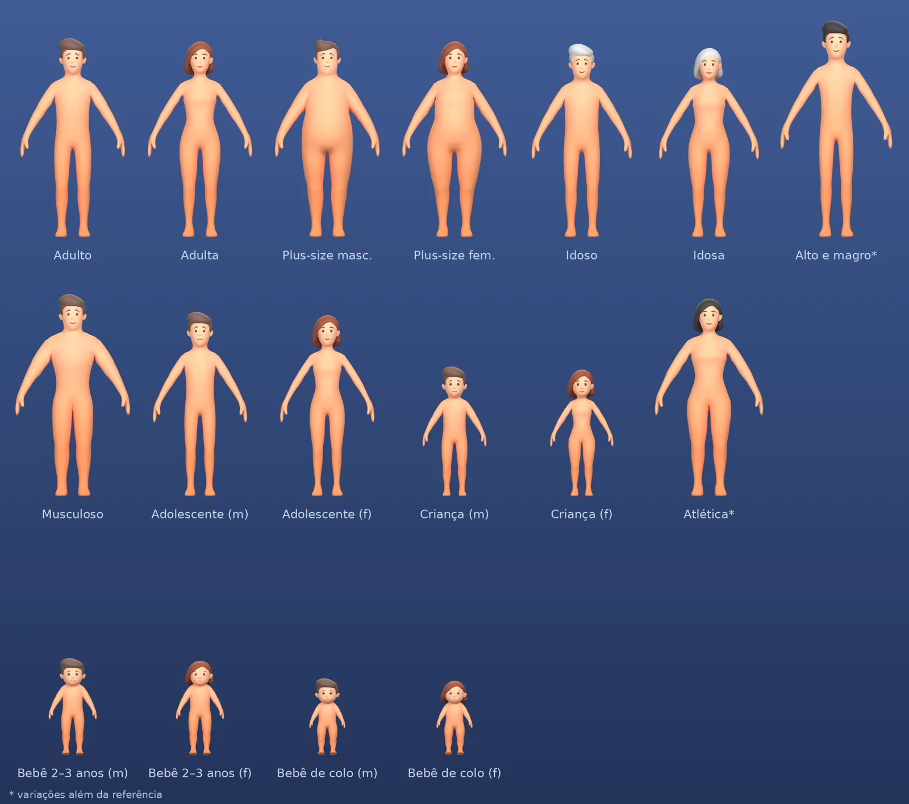<figcaption>Os 17 corpos na mesma escala. Adulto, adulta e plus-size masculino vêm do pacote; os outros são derivados deles. Os bebês têm o mesmo corpo para meninos e meninas e mudam no rosto e no cabelo.</figcaption></figure>
  <div class="tbl">
    <table>
      <thead><tr><th>Fase</th><th>Corpos</th><th>Como foram feitos</th></tr></thead>
      <tbody>
        <tr><td><b>Bebê de colo</b></td><td>Menino e menina, com chupeta azul ou rosa (do Creative Characters)</td><td>Proporções por osso a partir do adulto; rosto mais redondo, olhos maiores</td></tr>
        <tr><td><b>Criança pequena</b></td><td>Menino e menina, de 2 a 3 anos</td><td>Idem</td></tr>
        <tr><td><b>Criança</b> e <b>adolescente</b></td><td>Masculino e feminino</td><td>Escala por osso, cabeça proporcionalmente maior na criança</td></tr>
        <tr><td><b>Adulto</b></td><td>Adulto, adulta, plus-size masculino e feminino, musculoso, atlética, alto e magro</td><td>Três do pacote; plus-size feminina com a diferença medida entre o adulto e o plus-size do próprio pacote</td></tr>
        <tr><td><b>Idoso</b></td><td>Idoso e idosa</td><td>Escala por osso, postura levemente curvada, cabelo grisalho</td></tr>
      </tbody>
    </table>
  </div>
  <figure class="fig">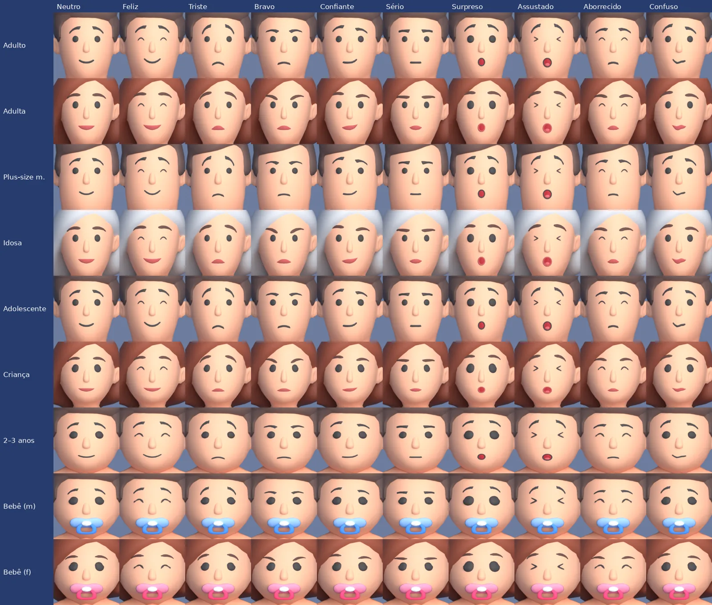<figcaption>Dez expressões em todos os corpos. O pacote grátis só tem o rosto neutro; as outras nove reaproveitam as peças dele (sobrancelhas que giram, boca que curva, olhos que crescem). Só olhos fechados, olhos "&gt; &lt;" e boca aberta foram desenhados.</figcaption></figure>
  <div class="grid g3">
    <div class="card facet"><h4>Tom de pele</h4><p class="small">A pele usa uma faixa só da paleta e o tom é uma cor que a multiplica: quatro tons de referência e qualquer outro. Nos tons escuros, olhos e sobrancelhas escurecem junto para manter o contraste.</p></div>
    <div class="card facet"><h4>Criar a família</h4><p class="small">Criar um ou mais moradores, relações entre eles, fase de vida, traços, aparência, casa e orçamento. Dá para começar com um morador só, sem obrigar.</p></div>
    <div class="card facet"><h4>Roupas e cabelos</h4><p class="small">Próxima etapa. Os pacotes grátis têm pouca roupa, sobretudo feminina: trocar peças entre corpos do mesmo tipo, adaptar cortes e estampas por script, recolorir pela paleta. Cabelos novos do zero ficam para os pacotes pagos.</p></div>
  </div>
  <p class="caption">Página de teste com corpos, tons, expressões e animações: <a href="https://claude.ai/artifact/Uw3fipkYR7aSq3dZFmZiMd">Tipos de corpo do Morada</a>.</p>
</section>

<!-- ARTE -->
<section id="arte">
  <div class="sec-head">
    <span class="eyebrow" style="--c:var(--tangerine)">Arte e animação</span>
    <h2>Pacotes grátis primeiro, pagos quando o jogo se pagar, tudo no mesmo esqueleto</h2>
    <p class="lead">Arte do zero por script e modelos gerados por IA não chegaram na qualidade. A primeira versão usa os pacotes grátis da ITHappy; City Characters, Cute Furniture e Cartoon City (cerca de R$ 1.000) entram depois, sem refazer nada, porque têm o mesmo esqueleto e a mesma paleta.</p>
  </div>
  <div class="tbl">
    <table>
      <thead><tr><th>Pacote grátis</th><th>Usamos para</th><th>Fica de fora</th></tr></thead>
      <tbody>
        <tr><td><b>Creative Characters, Casino, Chess, Apocalypse, Christmas</b></td><td>Corpos, rosto, cabelos, chupeta, 10 animações; Natal guardado para um evento sazonal</td><td>Armas, jogos de azar, roupa de showgirl, animações de luta e morte</td></tr>
        <tr><td><b>Cute Furniture, Christmas, Chess, Casino</b></td><td>Cerca de 150 objetos de casa: camas, banheiro, cozinha, sala, escritório</td><td>Paredes e telhado de biscoito do Natal</td></tr>
        <tr><td><b>Claw Machine</b></td><td>16 bichinhos de pelúcia para quartos de criança</td><td>A máquina de prêmios</td></tr>
        <tr><td><b>Cartoon City</b></td><td>Ruas, calçadas, semáforos, carros, ponto de ônibus</td><td>Prédios sem interior</td></tr>
        <tr><td><b>Animals, Fantasy, Weapons</b></td><td>Nada</td><td>Estilo diferente e textura com marca d'água</td></tr>
      </tbody>
    </table>
  </div>
  <div class="grid g2">
    <figure class="fig">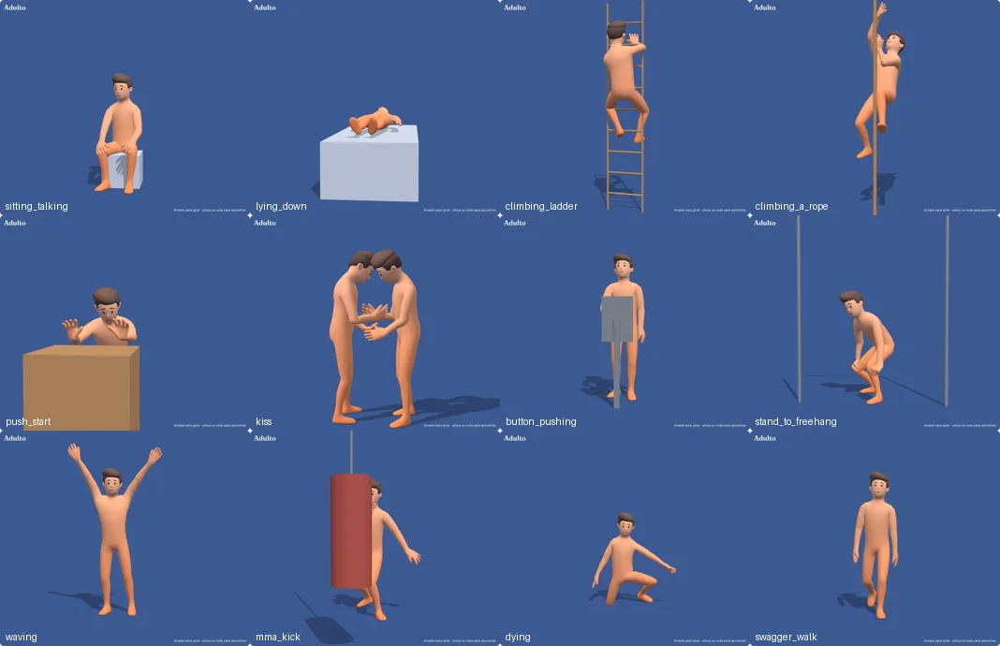<figcaption>Animações baixadas do Mixamo já no nosso esqueleto, com os auxiliares da cena de teste: cadeira, cama, escada, corda, barra, saco, caixa e par.</figcaption></figure>
    <div class="card facet" style="--cut:18px">
      <h3>Animações: o que funcionou</h3>
      <ul class="small" style="margin:0;padding-left:18px;display:grid;gap:6px">
        <li><b>As do pacote</b> (parado, andar, correr, sentar, conversar, aplaudir, telefone, carregar) ficam como vieram. Única exceção: "Ao telefone" em crianças e bebês, com a mão afastada do rosto.</li>
        <li><b>Converter do Mixamo por conta própria</b> deixa braços entrando no corpo, porque o repouso do Mixamo é em "T" e o do pacote em "A". Alinhamento e IK ajudaram, mas ficou abaixo do esperado.</li>
        <li><b>Mandar o nosso corpo ao Mixamo</b> funcionou: ele aceita os 44 ossos e devolve as animações neles, com o mesmo repouso, e ainda afasta os braços com o ajuste Arm-Space.</li>
        <li><b>Um corpo por grupo basta:</b> adulto (com adulta, adolescentes, idosos, atlética e alto e magro), plus-size (com musculoso), criança (com 2–3 anos) e bebê.</li>
        <li><b>Uma biblioteca por grupo,</b> baixada uma vez e reaproveitada por todos os corpos, em vez de cada corpo levar todas as animações.</li>
      </ul>
    </div>
  </div>
  <div class="tbl">
    <table>
      <thead><tr><th>Ainda precisa de prova</th><th>Por quê</th><th>Como provar</th></tr></thead>
      <tbody>
        <tr><td><b>Bebê e criança pequena em uso</b></td><td>Proporções aprovadas; falta colo, berço, carrinho e engatinhar com contato correto</td><td>Cena com adulto, bebê, berço e cadeirão</td></tr>
        <tr><td><b>Roupas entre corpos</b></td><td>Peça de outro biotipo atravessa a malha</td><td>Matriz peça × corpo × fase × esqueleto, com teste de atravessamento e LOD</td></tr>
        <tr><td><b>Animações em par</b></td><td>Colo, abraço, beijo e aperto de mão exigem alinhamento, sincronismo, trava das duas pessoas e cancelamento, não duas animações soltas</td><td>Três interações em par sincronizadas entre dois clientes</td></tr>
        <tr><td><b>Movimento com deslocamento</b></td><td>Clipes do Mixamo que andam sozinhos precisam virar "no lugar" ou ser seguidos pela rota</td><td>Subir escada e empurrar caixa com a rota mandando</td></tr>
        <tr><td><b>Juntar malhas por morador</b></td><td>Reduz chamadas de desenho, mas exige esqueleto, pesos e material compatíveis</td><td>Medir antes de assumir "uma chamada por morador"</td></tr>
      </tbody>
    </table>
  </div>
  <div class="grid g3">
    <div class="card facet"><h4>Pipeline</h4><p class="small">Pacotes grátis → scripts do Blender (corpos, tons, expressões, chupeta, paleta) → Mixamo por grupo de corpo → biblioteca de animações → GLB otimizado (meshopt, KTX2, manifesto).</p></div>
    <div class="card facet"><h4>Rosto</h4><p class="small">Expressão escolhida pelo humor; piscar e falar como versões das próprias peças do rosto que o jogo alterna.</p></div>
    <div class="card facet"><h4>Arquivos</h4><p class="small">Os originais nunca vão para o jogo, só GLBs empacotados, sem opção de exportar. Os corpos derivados já foram enviados ao Mixamo para gerar animações; esse envio a um serviço externo precisa de confirmação por escrito da ITHappy antes de as animações irem para uma versão pública.</p></div>
  </div>
</section>

<!-- TELAS -->
<section id="telas">
  <svg width="0" height="0" style="position:absolute" aria-hidden="true">
    <symbol id="i-pause" viewBox="0 0 24 24"><rect x="6" y="5" width="4" height="14" rx="1"/><rect x="14" y="5" width="4" height="14" rx="1"/></symbol>
    <symbol id="i-play" viewBox="0 0 24 24"><path d="M7 4.5v15l12-7.5z"/></symbol>
    <symbol id="i-home" viewBox="0 0 24 24"><path d="M3 11l9-7 9 7"/><path d="M5 10v10h5v-6h4v6h5V10"/></symbol>
    <symbol id="i-hammer" viewBox="0 0 24 24"><path d="M13 7l4-4 4 4-4 4"/><path d="M15 9L5 19a1.4 1.4 0 0 1-2-2L13 7"/></symbol>
    <symbol id="i-bag" viewBox="0 0 24 24"><path d="M5 8h14l-1.2 12H6.2z"/><path d="M9 8V6a3 3 0 0 1 6 0v2"/></symbol>
    <symbol id="i-users" viewBox="0 0 24 24"><circle cx="9" cy="8" r="3.2"/><path d="M3 20a6 6 0 0 1 12 0"/><circle cx="17" cy="9" r="2.4"/><path d="M16 14.2a5 5 0 0 1 5 5"/></symbol>
    <symbol id="i-brief" viewBox="0 0 24 24"><rect x="3" y="7" width="18" height="13" rx="2"/><path d="M9 7V5h6v2M3 12h18"/></symbol>
    <symbol id="i-bell" viewBox="0 0 24 24"><path d="M6 16v-5a6 6 0 0 1 12 0v5l2 2H4z"/><path d="M10 20.5a2 2 0 0 0 4 0"/></symbol>
    <symbol id="i-food" viewBox="0 0 24 24"><path d="M7 3v18M4.5 3v5a2.5 2.5 0 0 0 5 0V3"/><path d="M17 21V3c-2.5 1.5-3.5 5-3 9h3"/></symbol>
    <symbol id="i-bolt" viewBox="0 0 24 24"><path d="M13 2L4.5 13.5H11L10 22l8.5-11.5H12z"/></symbol>
    <symbol id="i-drop" viewBox="0 0 24 24"><path d="M12 3s6 6.8 6 11a6 6 0 0 1-12 0c0-4.2 6-11 6-11z"/></symbol>
    <symbol id="i-door" viewBox="0 0 24 24"><path d="M6 21V4h12v17M4 21h16"/><circle cx="14.5" cy="12.5" r=".8"/></symbol>
    <symbol id="i-chat" viewBox="0 0 24 24"><path d="M4 5h16v11H10l-5 4v-4H4z"/></symbol>
    <symbol id="i-star" viewBox="0 0 24 24"><path d="M12 3l2.7 5.6 6.1.9-4.4 4.3 1 6.1L12 17l-5.4 2.9 1-6.1-4.4-4.3 6.1-.9z"/></symbol>
    <symbol id="i-lock" viewBox="0 0 24 24"><rect x="5" y="11" width="14" height="10" rx="2"/><path d="M8 11V8a4 4 0 0 1 8 0v3"/></symbol>
    <symbol id="i-undo" viewBox="0 0 24 24"><path d="M9 14L4 9l5-5"/><path d="M4 9h11a5 5 0 0 1 0 10h-3"/></symbol>
    <symbol id="i-check" viewBox="0 0 24 24"><path d="M5 12.5l4.5 4.5L19 7"/></symbol>
    <symbol id="i-plus" viewBox="0 0 24 24"><path d="M12 5v14M5 12h14"/></symbol>
    <symbol id="i-x" viewBox="0 0 24 24"><path d="M6 6l12 12M18 6L6 18"/></symbol>
    <symbol id="i-copy" viewBox="0 0 24 24"><rect x="8" y="8" width="12" height="12" rx="2"/><path d="M16 8V5a1 1 0 0 0-1-1H5a1 1 0 0 0-1 1v10a1 1 0 0 0 1 1h3"/></symbol>
    <symbol id="i-cloud" viewBox="0 0 24 24"><path d="M7 18a4.5 4.5 0 0 1-.6-9A6 6 0 0 1 18 9.5a4.3 4.3 0 0 1-.5 8.5z"/></symbol>
    <symbol id="i-heart" viewBox="0 0 24 24"><path d="M12 20s-7.5-4.6-7.5-10A4.3 4.3 0 0 1 12 7a4.3 4.3 0 0 1 7.5 3c0 5.4-7.5 10-7.5 10z"/></symbol>
    <symbol id="i-uplus" viewBox="0 0 24 24"><circle cx="10" cy="8" r="3.5"/><path d="M3.5 20a6.5 6.5 0 0 1 13 0M19 8v6M16 11h6"/></symbol>
    <symbol id="i-pin" viewBox="0 0 24 24"><path d="M12 21s-6.5-6-6.5-11a6.5 6.5 0 0 1 13 0c0 5-6.5 11-6.5 11z"/><circle cx="12" cy="10" r="2.3"/></symbol>
    <symbol id="i-eye" viewBox="0 0 24 24"><path d="M2.5 12S6 5.5 12 5.5 21.5 12 21.5 12 18 18.5 12 18.5 2.5 12 2.5 12z"/><circle cx="12" cy="12" r="2.8"/></symbol>
    <symbol id="i-gift" viewBox="0 0 24 24"><rect x="4" y="9" width="16" height="11" rx="1.5"/><path d="M3 9h18M12 9v11M12 9c-2.5 0-4.5-1-4.5-3s3-2 4.5 3c1.5-5 4.5-5 4.5-3s-2 3-4.5 3"/></symbol>
    <symbol id="i-wall" viewBox="0 0 24 24"><rect x="3" y="5" width="18" height="14" rx="1"/><path d="M3 10h18M3 14.5h18M9 5v5M15 10v4.5M9 14.5V19"/></symbol>
    <symbol id="i-floor" viewBox="0 0 24 24"><path d="M12 4l9 5-9 5-9-5z"/><path d="M3 14l9 5 9-5"/></symbol>
    <symbol id="i-roof" viewBox="0 0 24 24"><path d="M2.5 13L12 5l9.5 8"/><path d="M6 11v8h12v-8"/></symbol>
    <symbol id="i-win" viewBox="0 0 24 24"><rect x="4" y="4" width="16" height="16" rx="1.5"/><path d="M12 4v16M4 12h16"/></symbol>
    <symbol id="i-cursor" viewBox="0 0 24 24"><path d="M5 3l14 7.5-6 1.8-2.4 6.2z"/></symbol>
    <symbol id="i-search" viewBox="0 0 24 24"><circle cx="11" cy="11" r="6"/><path d="M20 20l-4.5-4.5"/></symbol>
    <symbol id="i-sun" viewBox="0 0 24 24"><circle cx="12" cy="12" r="4"/><path d="M12 2.5v2M12 19.5v2M2.5 12h2M19.5 12h2M5.3 5.3l1.4 1.4M17.3 17.3l1.4 1.4M5.3 18.7l1.4-1.4M17.3 6.7l1.4-1.4"/></symbol>
    <symbol id="i-gear" viewBox="0 0 24 24"><circle cx="12" cy="12" r="3"/><path d="M12 2.5v3M12 18.5v3M21.5 12h-3M5.5 12h-3M18.7 5.3l-2.1 2.1M7.4 16.6l-2.1 2.1M18.7 18.7l-2.1-2.1M7.4 7.4L5.3 5.3"/></symbol>
    <symbol id="i-coin" viewBox="0 0 24 24"><circle cx="12" cy="12" r="8.5"/><path d="M14.8 9.2c-.5-1-1.6-1.6-2.8-1.6-1.6 0-2.8.9-2.8 2.2 0 3 5.6 1.6 5.6 4.5 0 1.3-1.2 2.2-2.8 2.2-1.3 0-2.4-.6-2.9-1.7M12 6v1.6M12 16.4V18"/></symbol>
    <symbol id="i-book" viewBox="0 0 24 24"><path d="M4 5.5A2.5 2.5 0 0 1 6.5 3H20v15H6.5A2.5 2.5 0 0 0 4 20.5z"/><path d="M4 20.5A2.5 2.5 0 0 0 6.5 23H20v-5"/></symbol>
    <symbol id="i-trophy" viewBox="0 0 24 24"><path d="M7 4h10v5a5 5 0 0 1-10 0zM7 6H4a3 3 0 0 0 3 4M17 6h3a3 3 0 0 1-3 4M12 14v4M8 21h8"/></symbol>
    <symbol id="i-shield" viewBox="0 0 24 24"><path d="M12 3l7.5 3v5.5c0 4.6-3.2 8.2-7.5 9.5-4.3-1.3-7.5-4.9-7.5-9.5V6z"/><path d="M8.5 12l2.5 2.5 4.5-5"/></symbol>
    <symbol id="i-hug" viewBox="0 0 24 24"><circle cx="8" cy="6" r="2.5"/><circle cx="16" cy="6" r="2.5"/><path d="M4 20v-6a4 4 0 0 1 8 0 4 4 0 0 1 8 0v6M8 14l4 3 4-3"/></symbol>
    <symbol id="i-music" viewBox="0 0 24 24"><path d="M9 18V5l11-2v13"/><circle cx="6.5" cy="18" r="2.5"/><circle cx="17.5" cy="16" r="2.5"/></symbol>
    <symbol id="i-dots" viewBox="0 0 24 24"><circle cx="5" cy="12" r="1.3"/><circle cx="12" cy="12" r="1.3"/><circle cx="19" cy="12" r="1.3"/></symbol>
    <symbol id="i-clock" viewBox="0 0 24 24"><circle cx="12" cy="12" r="8.5"/><path d="M12 7.5V12l3 2"/></symbol>
  </svg>

  <div class="sec-head">
    <span class="eyebrow" style="--c:var(--sun)">Telas</span>
    <h2>A mesma tela serve para uma pessoa ou para doze</h2>
    <p class="lead">Nenhuma tela existe só para "jogar sozinho" ou só para "jogar junto". Os mesmos controles ganham informação quando há mais gente presente: a presença aparece, o tempo vira pedido, a construção mostra quem trava o quê. As cenas de fundo foram renderizadas com os pacotes gratuitos e os nossos corpos, roupas e expressões; a interface por cima é a proposta visual do jogo (React sobre o canvas do Three.js).</p>
  </div>
  <div class="tabs" role="tablist" aria-label="Telas do jogo" id="tabs">
    <button type="button" role="tab" id="tab-mundos" aria-selected="true" aria-controls="p-mundos">Seus mundos</button>
    <button type="button" role="tab" id="tab-hud" aria-selected="false" aria-controls="p-hud">Em jogo</button>
    <button type="button" role="tab" id="tab-convidar" aria-selected="false" aria-controls="p-convidar">Convidar</button>
    <button type="button" role="tab" id="tab-aceite" aria-selected="false" aria-controls="p-aceite">Decisão de outra pessoa</button>
    <button type="button" role="tab" id="tab-contrato" aria-selected="false" aria-controls="p-contrato">Novo contrato</button>
    <button type="button" role="tab" id="tab-construir" aria-selected="false" aria-controls="p-construir">Construir junto</button>
    <button type="button" role="tab" id="tab-casa" aria-selected="false" aria-controls="p-casa">Família e acessos</button>
    <button type="button" role="tab" id="tab-volta" aria-selected="false" aria-controls="p-volta">Voltar ao mundo</button>
  </div>

  <!-- 1 · Seus mundos -->
  <div class="shot" role="tabpanel" id="p-mundos" aria-labelledby="tab-mundos">
    <div class="screen-wrap"><div class="screen">
      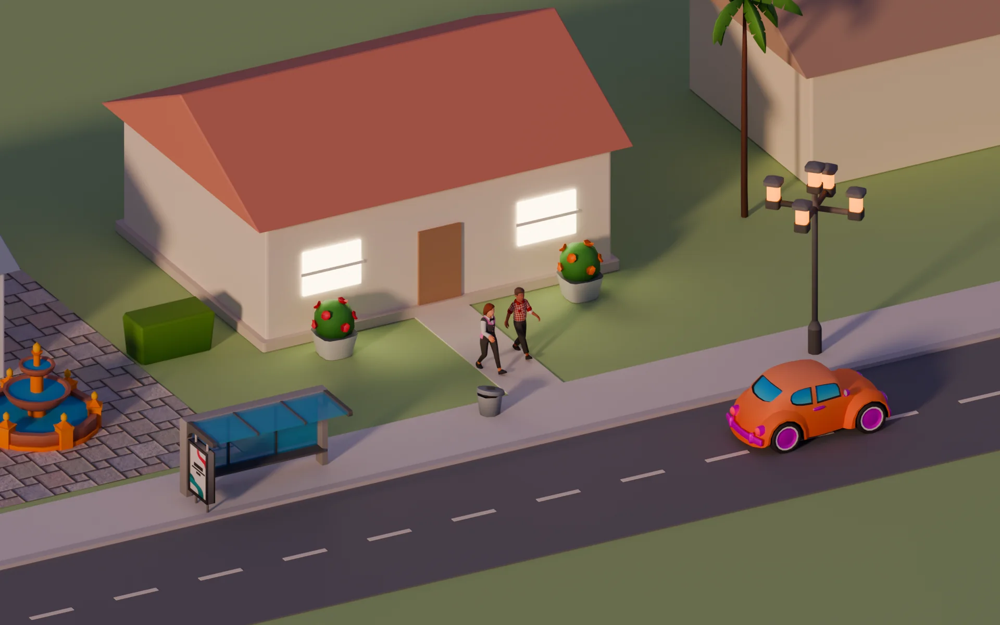
      <div class="veil" style="background:linear-gradient(270deg,rgba(14,16,40,.9) 0,rgba(14,16,40,.72) 36%,rgba(14,16,40,0) 62%)"></div>
      <div class="p d uf" style="left:20px;top:20px;padding:8px 14px 8px 10px;border-radius:14px">
        <svg width="26" height="26" viewBox="0 0 24 24" aria-hidden="true"><path d="M2.5 12L12 4l9.5 8v9h-19z" fill="#E8611F"/><path d="M9.5 21v-5.5h5V21" fill="#fff"/></svg>
        <span style="font-family:var(--f-display);font-weight:800;font-size:20px;letter-spacing:-.01em">Morada</span>
      </div>
      <div style="position:absolute;right:28px;top:22px;display:flex;align-items:center;gap:10px;color:#fff">
        <div style="text-align:right;line-height:1.2"><b style="font-size:14px">Oi, Lia</b><div style="font-size:11.5px;opacity:.7">perfil do Recreio</div></div>
        <span class="ini" style="--s:38px;--c:#E8611F">L</span>
        <span class="ub wg sq"><svg class="ui-ic"><use href="#i-gear"/></svg></span>
      </div>
      <div class="ug" style="position:absolute;right:28px;top:86px;width:392px;gap:10px">
        <div class="uk" style="color:rgba(255,255,255,.7)">Seus mundos</div>
        <div class="p solid" style="position:relative;padding:12px;display:grid;gap:10px;box-shadow:0 0 0 2.5px #E8611F,0 18px 36px -14px rgba(0,0,0,.6)">
          <div class="uf" style="gap:12px;align-items:flex-start">
            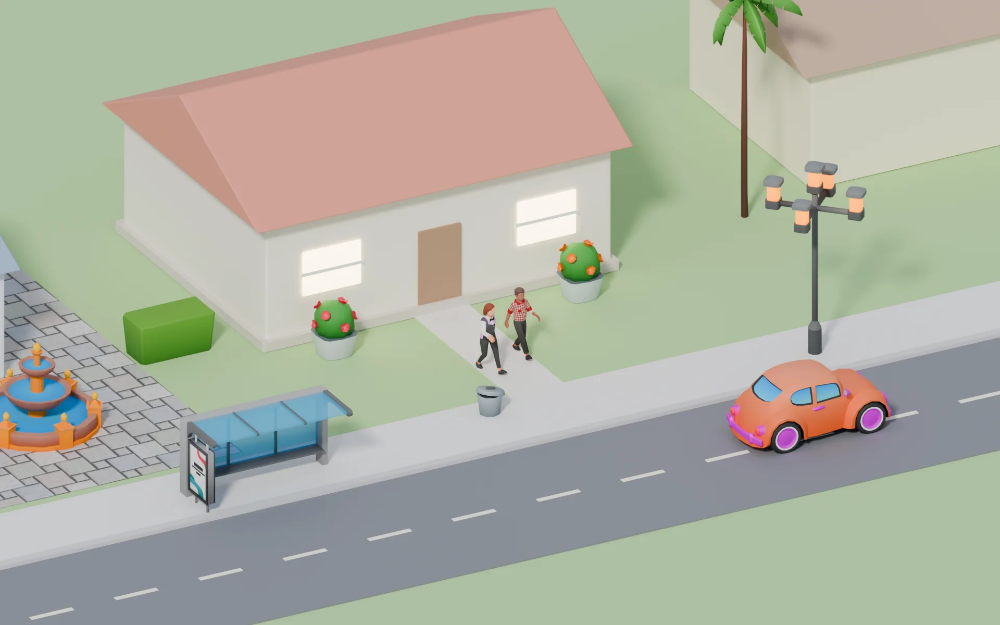
            <div class="ug" style="gap:3px;flex:1">
              <div class="uf sb"><span class="ut" style="font-size:16px">Bairro Ipê</span><span class="uc" style="background:#DAF2DF;color:#1E6B33"><i class="ud"></i>Bruno está lá</span></div>
              <div class="um">Família Oliveira · dia 34 · terça, 18:42</div>
              <div class="uf" style="margin-top:4px;gap:10px">
                <div class="stack"><span class="av" style="--s:26px;--rw:2px"></span><span class="av" style="--s:26px;--rw:2px"></span><span class="av" style="--s:26px;--rw:2px"></span><span class="av" style="--s:26px;--rw:2px"></span></div>
                <span class="um">4 moradores · com Bruno e Clara</span>
              </div>
            </div>
          </div>
          <div class="uf" style="padding:8px 10px;border-radius:12px;background:#F3F5FC;font-size:12px;gap:10px">
            <span class="ini" style="--s:22px;--c:#CC3366">B</span><span style="flex:1"><b>Bruno</b> dirigindo Marcos</span>
            <span class="ini" style="--s:22px;--c:#3463E6;opacity:.55">C</span><span style="color:#5E6488">Clara fora</span>
          </div>
          <div class="uf"><span class="ub gh"><svg class="ui-ic"><use href="#i-uplus"/></svg>Convidar</span><span class="ub pri lg" style="flex:1"><svg class="ui-ic" style="fill:currentColor;stroke:none"><use href="#i-play"/></svg>Jogar</span></div>
        </div>
        <div class="p d uf" style="position:relative;padding:10px 12px;gap:12px">
          
          <div class="ug" style="gap:2px;flex:1"><b style="font-size:14px">Vila das Palmeiras</b><span class="um">Família Rocha · dia 6 · ninguém agora</span></div>
          <span class="ub sm wg">Jogar</span>
        </div>
        <div class="uf"><span class="ub wg" style="flex:1">Entrar com código</span><span class="ub wg" style="flex:1"><svg class="ui-ic"><use href="#i-plus"/></svg>Criar mundo</span></div>
      </div>
      <div class="p d uf" style="left:20px;bottom:20px;padding:8px 12px;font-size:12px;gap:8px"><svg class="ui-ic"><use href="#i-cloud"/></svg>Seus mundos ficam salvos no Recreio. Entre de qualquer aparelho.</div>
    </div></div>
    <div class="shot-note">
      <h3>Seus mundos</h3>
      <ul>
        <li>Uma lista só. Cada mundo mostra a família a que você tem acesso, os moradores e quem está lá agora.</li>
        <li>"Jogar" e "Convidar" existem em todo mundo; não há mundo "solo" nem mundo "online".</li>
        <li>Pessoas aparecem como perfil do Recreio (inicial e cor); moradores aparecem pelo retrato.</li>
        <li>O download inicial traz o lote da sua família e os moradores; o resto do bairro vem sob demanda.</li>
      </ul>
    </div>
  </div>

  <!-- 2 · Em jogo -->
  <div class="shot" role="tabpanel" id="p-hud" aria-labelledby="tab-hud" hidden>
    <div class="screen-wrap"><div class="screen">
      
      <span class="tag3d" style="left:503px;top:186px"><span class="ini" style="--c:#E8611F">L</span>Lia · você</span>
      <span class="tag3d" style="left:268px;top:212px"><span class="ini" style="--c:#CC3366">B</span>Marcos · Bruno</span>
      <div class="p d ug" style="left:16px;top:16px;gap:8px;padding:12px">
        <div class="uf" style="gap:10px"><span style="font-family:var(--f-display);font-weight:700;font-size:24px;font-variant-numeric:tabular-nums">18:42</span><span class="um" style="line-height:1.2">terça<br>dia 34</span></div>
        <div class="seg2"><span><svg class="ui-ic" style="width:13px;height:13px;fill:currentColor;stroke:none"><use href="#i-pause"/></svg></span><span class="on">1×</span><span>2×</span><span>3×</span></div>
        <div class="um" style="font-size:11px;max-width:178px">Bruno também está aqui: mudar a velocidade vira um pedido</div>
      </div>
      <div class="p d uf" style="left:50%;top:16px;transform:translateX(-50%);padding:6px 12px 6px 8px;border-radius:999px;gap:10px;font-size:12px">
        <div class="stack"><span class="ini" style="--s:24px;--c:#E8611F">L</span><span class="ini" style="--s:24px;--c:#CC3366">B</span></div>
        <b>Bairro Ipê</b><span style="opacity:.7">2 pessoas</span>
        <span class="uc"><svg class="ui-ic" style="width:13px;height:13px"><use href="#i-cloud"/></svg>salvo há 8 s</span>
      </div>
      <div class="ug" style="position:absolute;right:16px;top:16px;width:236px;gap:6px">
        <div class="p uf" style="position:relative;padding:9px 11px;gap:9px;font-size:12px;align-items:flex-start"><span style="width:26px;height:26px;border-radius:8px;background:#FFF0C2;color:#A57700;display:grid;place-items:center;flex:none"><svg class="ui-ic" style="width:14px;height:14px"><use href="#i-bell"/></svg></span><span>Dona Célia, a vizinha, está vindo fazer uma visita.<br><span class="um">agora</span></span></div>
        <div class="p uf" style="position:relative;padding:9px 11px;gap:9px;font-size:12px;align-items:flex-start;opacity:.92"><span style="width:26px;height:26px;border-radius:8px;background:#DCE5FF;color:#3463E6;display:grid;place-items:center;flex:none"><svg class="ui-ic" style="width:14px;height:14px"><use href="#i-heart"/></svg></span><span>A família da Clara teve um bebê.<br><span class="um">ontem</span></span></div>
      </div>
      <div class="p d rail" style="right:16px;top:132px;padding:5px">
        <span class="on"><svg class="ui-ic"><use href="#i-home"/></svg>Viver</span>
        <span><svg class="ui-ic"><use href="#i-hammer"/></svg>Construir</span>
        <span><svg class="ui-ic"><use href="#i-bag"/></svg>Comprar</span>
        <span><svg class="ui-ic"><use href="#i-users"/></svg>Família</span>
        <span><svg class="ui-ic"><use href="#i-brief"/></svg>Serviços</span>
      </div>
      <div class="p ug" style="left:16px;bottom:16px;width:286px;gap:10px;padding:12px 14px">
        <div class="uf" style="gap:10px">
          <span class="av" style="--s:44px;--r:#E8611F"></span>
          <div class="ug" style="gap:2px;flex:1"><span class="ut">Lia Oliveira</span><span class="um">adulta · designer, nível 2</span></div>
          <span class="uc" style="background:#FFF0C2;color:#7A5900"><svg class="ui-ic" style="width:12px;height:12px"><use href="#i-sun"/></svg>Alegre</span>
        </div>
        <div style="display:grid;grid-template-columns:1fr 1fr;gap:7px 14px">
          <div class="nd" style="--c:#E8611F;--v:38%"><svg class="ui-ic"><use href="#i-food"/></svg>Fome<i></i></div>
          <div class="nd" style="--c:#CC3366;--v:90%"><svg class="ui-ic"><use href="#i-chat"/></svg>Social<i></i></div>
          <div class="nd" style="--c:#3463E6;--v:64%"><svg class="ui-ic"><use href="#i-bolt"/></svg>Energia<i></i></div>
          <div class="nd" style="--c:#2F9A4B;--v:47%"><svg class="ui-ic"><use href="#i-star"/></svg>Diversão<i></i></div>
          <div class="nd" style="--c:#0C8F81;--v:80%"><svg class="ui-ic"><use href="#i-drop"/></svg>Higiene<i></i></div>
          <div class="nd" style="--c:#E0A100;--v:55%"><svg class="ui-ic"><use href="#i-door"/></svg>Bexiga<i></i></div>
        </div>
      </div>
      <div class="p uf" style="left:318px;bottom:16px;gap:16px;padding:12px 16px 18px">
        <div class="ug" style="justify-items:center;gap:4px"><span class="av" style="--s:50px;--r:#E8611F"><span class="bd">você</span></span><b style="font-size:11.5px;margin-top:6px">Lia</b></div>
        <div class="ug" style="justify-items:center;gap:4px"><span class="av" style="--s:50px;--r:#CC3366"><span class="bd">Bruno</span></span><b style="font-size:11.5px;margin-top:6px">Marcos</b></div>
        <div class="ug" style="justify-items:center;gap:4px"><span class="av" style="--s:50px;--r:#C7CDE6"><span class="bd" style="color:#1A1D3A">livre</span></span><b style="font-size:11.5px;margin-top:6px">Nina</b></div>
        <div class="ug" style="justify-items:center;gap:4px"><span class="av" style="--s:50px;--r:#0C8F81"><span class="bd">cuidar</span></span><b style="font-size:11.5px;margin-top:6px">Theo</b></div>
      </div>
      <div class="p ug" style="right:16px;bottom:16px;width:226px;gap:8px;padding:12px">
        <div class="uk">Fila da Lia</div>
        <div class="ug" style="gap:5px;padding:8px 10px;border-radius:12px;background:#FFF3EC">
          <div class="uf" style="font-size:12.5px;font-weight:700"><svg class="ui-ic" style="color:#E8611F"><use href="#i-chat"/></svg>Conversar com Marcos</div>
          <i style="display:block;height:5px;border-radius:3px;background:linear-gradient(90deg,#E8611F 62%,rgba(26,29,58,.1) 62%)"></i>
        </div>
        <div class="uf" style="font-size:12.5px;padding:0 10px"><svg class="ui-ic" style="color:#6A7096"><use href="#i-food"/></svg>Cozinhar jantar</div>
        <span class="ub sm gh" style="justify-content:flex-start"><svg class="ui-ic" style="width:13px;height:13px"><use href="#i-plus"/></svg>Jantar em família</span>
      </div>
    </div></div>
    <div class="shot-note">
      <h3>Em jogo</h3>
      <ul>
        <li>Retratos de todos os moradores, com o estado de cada um: você, outra pessoa, livre, autônomo, cuidar, protegido.</li>
        <li>Os mesmos botões de tempo sempre. Sozinha, Lia pausa na hora; com Bruno presente, o botão vira um pedido.</li>
        <li>A barra de presença diz quem está no mundo e quando ele foi salvo pela última vez.</li>
        <li>Theo, com 2–3 anos, aparece como "cuidar": o pedido vai para um adulto da casa ou para a babá.</li>
        <li>Notícias do bairro saem das memórias do mundo.</li>
      </ul>
    </div>
  </div>

  <!-- 3 · Convidar -->
  <div class="shot" role="tabpanel" id="p-convidar" aria-labelledby="tab-convidar" hidden>
    <div class="screen-wrap"><div class="screen">
      
      <div class="veil" style="background:rgba(18,20,46,.38)"></div>
      <div class="p solid ug" style="left:50%;top:26px;bottom:26px;transform:translateX(-50%);width:620px;gap:14px;padding:20px 22px;border-radius:22px">
        <div class="uf sb"><div class="ug" style="gap:2px"><span class="uk">Bairro Ipê · família Oliveira</span><span class="ut" style="font-size:19px">Convidar alguém</span></div><span class="ub sq gh"><svg class="ui-ic"><use href="#i-x"/></svg></span></div>
        <div class="ug" style="gap:8px">
          <span class="uk">Como a pessoa vai participar?</span>
          <div style="display:grid;grid-template-columns:repeat(3,1fr);gap:10px">
            <div class="opt on"><span class="ck"><svg class="ui-ic"><use href="#i-check"/></svg></span><span class="oi" style="--bgc:#FFE5D6;--c:#E8611F"><svg class="ui-ic"><use href="#i-users"/></svg></span><b>Dividir a família</b><span class="um">Dirige moradores livres da família Oliveira ou cria um morador novo nela.</span></div>
            <div class="opt"><span class="oi" style="--bgc:#DCE5FF;--c:#3463E6"><svg class="ui-ic"><use href="#i-home"/></svg></span><b>Morar ao lado</b><span class="um">Cria a própria família num lote livre do bairro.</span></div>
            <div class="opt"><span class="oi" style="--bgc:#D3F2EE;--c:#0C8F81"><svg class="ui-ic"><use href="#i-eye"/></svg></span><b>Visitar</b><span class="um">Circula e conversa. Não comanda, não constrói, não gasta.</span></div>
          </div>
        </div>
        <div class="ug" style="gap:2px">
          <span class="uk" style="margin-bottom:4px">O que a pessoa pode fazer na família</span>
          <div style="display:grid;grid-template-columns:1fr 1fr;column-gap:22px">
            <div class="perm">Dirigir moradores livres<i class="sw on"></i></div>
            <div class="perm">Gerir serviços<i class="sw"></i></div>
            <div class="perm">Construir e comprar<i class="sw on"></i></div>
            <div class="perm">Autorizar mudança de casa<i class="sw"></i></div>
            <div class="perm">Gastar acima de 500 M$<i class="sw"></i></div>
            <div class="perm" style="color:#6A7096">Dirigir a preferida de Lia<i class="sw lock"></i></div>
          </div>
        </div>
        <div class="uf" style="gap:14px;padding:12px 14px;border-radius:14px;background:#F3F5FC;margin-top:auto">
          <div class="ug" style="gap:2px;flex:1"><span class="uk">Código do convite</span><span class="mono" style="font-size:22px;font-weight:500;letter-spacing:.12em">IPE-7K4Q</span><span class="um">Válido por 24 h, uso único. Quem entra precisa ter o Recreio.</span></div>
          <span class="ub gh"><svg class="ui-ic"><use href="#i-copy"/></svg>Copiar link</span>
          <span class="ub pri">Enviar convite</span>
        </div>
      </div>
    </div></div>
    <div class="shot-note">
      <h3>Convidar</h3>
      <ul>
        <li>O convite pergunta como a pessoa vai participar, não "crie seu avatar".</li>
        <li>Permissões escolhidas na hora e revogáveis depois. O preferido de alguém nunca é dirigido por outra pessoa.</li>
        <li>Perfis infantis só recebem convites aprovados pelo titular da conta deles.</li>
        <li>O jogo continua atrás do convite; quem convida não sai do mundo.</li>
      </ul>
    </div>
  </div>

  <!-- 4 · Decisão de outra pessoa -->
  <div class="shot" role="tabpanel" id="p-aceite" aria-labelledby="tab-aceite" hidden>
    <div class="screen-wrap"><div class="screen">
      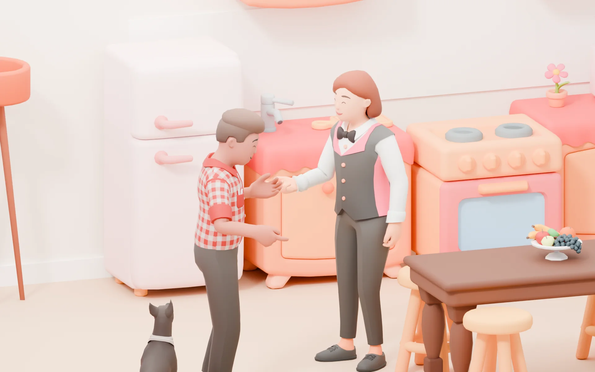
      
      <div class="p ug" style="left:676px;top:58px;width:220px;gap:6px;padding:12px">
        <div class="uf sb"><span class="uk" style="color:#CC3366">Na tela do Bruno</span><span class="ini" style="--s:20px;--c:#CC3366">B</span></div>
        <div class="uf" style="gap:8px"><span class="av" style="--s:30px;--rw:2px;--r:#E8611F"></span><div class="ug" style="gap:0"><b style="font-size:13px">Lia</b><span class="um" style="font-size:11px">Marcos interage com…</span></div></div>
        <div class="ug" style="gap:4px;margin-top:2px">
          <span class="rad" style="position:static;transform:none;box-shadow:none;background:#F3F5FC;height:30px"><i><svg class="ui-ic"><use href="#i-chat"/></svg></i>Conversar</span>
          <span class="rad" style="position:static;transform:none;box-shadow:none;background:#F3F5FC;height:30px"><i><svg class="ui-ic"><use href="#i-star"/></svg></i>Elogiar</span>
          <span class="rad" style="position:static;transform:none;box-shadow:none;background:#F3F5FC;height:30px"><i><svg class="ui-ic"><use href="#i-hug"/></svg></i>Abraçar</span>
          <span class="rad" style="position:static;transform:none;box-shadow:none;background:#F3F5FC;height:30px"><i><svg class="ui-ic"><use href="#i-music"/></svg></i>Dançar</span>
          <span class="rad hl" style="position:static;transform:none;height:30px"><i><svg class="ui-ic"><use href="#i-heart"/></svg></i>Pedir em casamento</span>
          <span class="rad" style="position:static;transform:none;box-shadow:none;background:#F3F5FC;height:30px"><i><svg class="ui-ic"><use href="#i-dots"/></svg></i>Mais ações</span>
        </div>
      </div>
      <svg class="ov" viewBox="0 0 960 600" aria-hidden="true"><path d="M664 150 C630 150 620 160 612 168" fill="none" stroke="#fff" stroke-width="2.5" stroke-dasharray="4 5" stroke-linecap="round"/></svg>
      <div class="p solid ug" style="left:20px;top:20px;width:300px;gap:10px;padding:15px;box-shadow:0 0 0 2.5px #CC3366,0 18px 36px -14px rgba(0,0,0,.6)">
        <div class="uf sb"><span class="uk" style="color:#CC3366">Na tela da Lia</span><span class="ini" style="--s:20px;--c:#E8611F">L</span></div>
        <div class="uf" style="gap:6px">
          <span class="av" style="--s:44px;--r:#CC3366"></span>
          <span style="width:26px;height:26px;border-radius:50%;display:grid;place-items:center;background:#FADBE6;color:#CC3366"><svg class="ui-ic" style="width:14px;height:14px;fill:currentColor"><use href="#i-heart"/></svg></span>
          <span class="av" style="--s:44px;--r:#E8611F"></span>
          </div>
        <div class="ug" style="gap:2px"><span class="ut" style="font-size:16px">Marcos quer casar com a Lia</span><span class="um">Bruno está dirigindo Marcos</span></div>
        <div class="um">Lia é a sua moradora preferida · relação 92 · moram juntos há 30 dias</div>
        <div class="uf" style="gap:6px"><span class="ub br" style="flex:1">Aceitar</span><span class="ub gh" style="flex:1">Agora não</span></div>
        <span class="um" style="font-size:11.5px;text-decoration:underline;text-underline-offset:3px;font-weight:700">Não perguntar de novo para este casal</span>
        <div class="um" style="font-size:11.5px">Recusar não muda a relação. Se você estiver fora, o pedido espera você voltar.</div>
      </div>
    </div></div>
    <div class="shot-note">
      <h3>Decisão de outra pessoa</h3>
      <ul>
        <li>Tocar num morador abre as ações que a simulação permite agora, para quem estiver dirigindo.</li>
        <li>Namoro, casamento, filhos, mudança e venda que mudam a vida do preferido de outra pessoa abrem um pedido para ela.</li>
        <li>Conversar, elogiar, abraçar e dançar acontecem na hora, sem confirmação. Com NPCs, quem decide é a própria simulação.</li>
        <li>Ao aceitar, toca a animação em par e o vínculo é gravado nas memórias do mundo.</li>
      </ul>
    </div>
  </div>

  <!-- 5 · Novo contrato -->
  <div class="shot" role="tabpanel" id="p-contrato" aria-labelledby="tab-contrato" hidden>
    <div class="screen-wrap"><div class="screen">
      
      <div class="veil" style="background:rgba(18,20,46,.32)"></div>
      <div class="p solid ug" style="left:18px;top:18px;bottom:18px;width:318px;gap:9px;align-content:start;padding:16px">
        <div class="uf sb"><span class="ut" style="font-size:16px">Serviços</span><span class="uc">Família Oliveira</span></div>
        <div style="display:grid;grid-template-columns:1fr 1fr;gap:8px">
          <div style="padding:8px 10px;border-radius:12px;background:#F3F5FC"><div class="uk">Fundo</div><b style="font-family:var(--f-display);font-size:15px">12.480 M$</b></div>
          <div style="padding:8px 10px;border-radius:12px;background:#F3F5FC"><div class="uk">Folha semanal</div><b style="font-family:var(--f-display);font-size:15px">1.964 M$</b></div>
        </div>
        <div class="staff"><span class="ini" style="--s:32px;--c:#0C8F81">A</span><div class="ug" style="gap:1px"><b style="font-size:13px">Ana Lima</b><span class="um">Seg, Qua, Sex · 08–12 · andar de cima</span></div><span class="uc">Diarista · 3</span></div>
        <div class="staff"><span class="ini" style="--s:32px;--c:#3463E6">B</span><div class="ug" style="gap:1px"><b style="font-size:13px">Bia Souza</b><span class="um">Ter, Qui 13–17 · Sáb 09–12 · térreo</span></div><span class="uc">Diarista · 2</span></div>
        <div class="staff"><span class="ini" style="--s:32px;--c:#CC3366">C</span><div class="ug" style="gap:1px"><b style="font-size:13px">Carla Dias</b><span class="um">Seg a Sex · 07–15 · Nina e Theo</span></div><span class="uc">Babá · 4</span></div>
        <div class="staff"><span class="ini" style="--s:32px;--c:#E8611F">D</span><div class="ug" style="gap:1px"><b style="font-size:13px">Duda Reis</b><span class="um">Seg a Sex · 14–20 · Nina e Theo</span></div><span class="uc" style="background:#FFF0C2;color:#7A5900">Experiência</span></div>
        <div class="uf" style="margin-top:4px"><span class="ub gh" style="flex:1">Chamar avulso</span><span class="ub pri" style="flex:1"><svg class="ui-ic"><use href="#i-plus"/></svg>Novo contrato</span></div>
      </div>
      <div class="p solid ug" style="left:352px;top:18px;right:18px;bottom:18px;gap:13px;align-content:start;padding:18px 20px">
        <div class="uf sb"><span class="ut" style="font-size:17px">Novo contrato</span><span class="ub sq gh"><svg class="ui-ic"><use href="#i-x"/></svg></span></div>
        <div style="display:grid;grid-template-columns:1fr 1fr;gap:14px">
          <div class="fld"><b>Tipo</b><div class="uf" style="gap:6px"><span class="uc">Diarista</span><span class="uc on">Babá</span><span class="uc">Cozinheira</span></div></div>
          <div class="fld"><b>Pessoa</b><div class="box"><span class="uf" style="gap:8px"><span class="ini" style="--s:22px;--c:#B98600">G</span>Gabi Nunes · nv 2 · ★ 4,6</span><span class="um">trocar</span></div></div>
        </div>
        <div class="fld"><b>Dias</b><div class="uf" style="gap:6px"><span class="uc">Seg</span><span class="uc">Ter</span><span class="uc">Qua</span><span class="uc">Qui</span><span class="uc">Sex</span><span class="uc on">Sáb</span><span class="uc on">Dom</span></div></div>
        <div style="display:grid;grid-template-columns:1fr 1fr 1fr;gap:12px">
          <div class="fld"><b>Horário</b><div class="box"><span class="uf" style="gap:6px"><svg class="ui-ic" style="color:#6A7096"><use href="#i-clock"/></svg>10:00 → 18:00</span></div></div>
          <div class="fld"><b>Salário</b><div class="box">20 M$ / hora</div></div>
          <div class="fld"><b>Pagamento</b><div class="box">Semanal</div></div>
        </div>
        <div class="fld"><b>Cuida de</b><div class="uf" style="gap:8px">
          <span class="uc on" style="height:32px;padding:0 12px 0 4px"><span class="av" style="--s:24px;--rw:0px"></span>Nina · criança</span>
          <span class="uc on" style="height:32px;padding:0 12px 0 4px"><span class="av" style="--s:24px;--rw:0px"></span>Theo · 2–3 anos</span>
        </div></div>
        <div class="uf sb" style="padding:11px 14px;border-radius:14px;background:#D3F2EE"><span style="font-size:13px">Cobre o fim de semana, que hoje está <b>sem babá</b>.</span><b style="font-family:var(--f-display);font-size:15px">320 M$ / semana</b></div>
        <div class="uf" style="gap:18px;font-size:12.5px;font-weight:600"><span class="uf"><i class="sw on"></i>Experiência de 1 dia</span><span class="uf"><i class="sw on"></i>30 min de sobreposição na troca de turno</span></div>
        <div class="uf sb"><span class="um">Babás contratadas: 2 de 3 permitidas no mundo</span><span class="ub pri">Enviar proposta</span></div>
      </div>
    </div></div>
    <div class="shot-note">
      <h3>Novo contrato</h3>
      <ul>
        <li>Lista de contratos com agenda e atribuição de cada pessoa.</li>
        <li>Formulário de contrato: tipo, pessoa, dias, horário, salário, pagamento e de quem ou do quê ela cuida.</li>
        <li>O jogo calcula o custo semanal e aponta buracos na cobertura.</li>
        <li>O limite por tipo aparece antes de enviar a proposta. Funcionários são moradores do mundo, mas ninguém os dirige.</li>
      </ul>
    </div>
  </div>

  <!-- 6 · Construir junto -->
  <div class="shot" role="tabpanel" id="p-construir" aria-labelledby="tab-construir" hidden>
    <div class="screen-wrap"><div class="screen">
      
      <svg class="ov" viewBox="0 0 960 600" aria-hidden="true">
        <polygon points="392,210 696,9 612,-82 308,119" fill="rgba(204,51,102,.18)" stroke="#CC3366" stroke-width="2.5" stroke-dasharray="7 6" stroke-linejoin="round"/>
        <polygon points="392,161 696,-40 612,-131 308,70" fill="rgba(204,51,102,.08)" stroke="#CC3366" stroke-width="1.5" stroke-dasharray="4 6" stroke-linejoin="round"/>
        <path d="M392 210V161M696 9V-40M308 119V70" stroke="#CC3366" stroke-width="1.5" stroke-dasharray="4 6"/>
        <polygon points="191,531 265,481 207,419 133,468" fill="rgba(232,97,31,.16)" stroke="#E8611F" stroke-width="2.5" stroke-linejoin="round"/>
        <polygon points="191,484 265,435 207,372 133,421" fill="none" stroke="#E8611F" stroke-width="1.5" stroke-dasharray="3 5"/>
        <path d="M191 531V484M265 481V435M133 468V421" stroke="#E8611F" stroke-width="1.5" stroke-dasharray="3 5"/>
        <g fill="#fff" stroke="#E8611F" stroke-width="2"><circle cx="191" cy="531" r="5"/><circle cx="265" cy="481" r="5"/><circle cx="133" cy="468" r="5"/><circle cx="207" cy="419" r="5"/></g>
        <path d="M278 452 a14 26 0 0 1 -2 44" fill="none" stroke="#E8611F" stroke-width="2.5" stroke-linecap="round"/><path d="M286 490l-10 6-2-11" fill="none" stroke="#E8611F" stroke-width="2.5" stroke-linecap="round" stroke-linejoin="round"/>
      </svg>
      <span class="tag3d" style="left:548px;top:112px;transform:translate(-50%,0);background:#CC3366;color:#fff"><span class="ini" style="--c:#fff;color:#CC3366">B</span>Bruno · parede da cozinha</span>
      <span class="tag3d" style="left:196px;top:364px"><span class="ini" style="--c:#E8611F">L</span>Lia · girando a poltrona</span>
      <div class="p uf" style="left:16px;top:16px;gap:10px;padding:10px 14px;max-width:330px">
        <span style="width:30px;height:30px;border-radius:9px;background:#FADBE6;color:#CC3366;display:grid;place-items:center;flex:none"><svg class="ui-ic"><use href="#i-lock"/></svg></span>
        <span style="font-size:12.5px;line-height:1.35"><b>Bruno está mexendo na cozinha.</b> Essa região fica travada para os outros até ele concluir.</span>
      </div>
      <div class="p ug" style="right:16px;top:16px;bottom:16px;width:226px;gap:9px;align-content:start;padding:12px">
        <div class="uf sb"><div class="ug" style="gap:0"><span class="uk">Fundo da família</span><b style="font-family:var(--f-display);font-size:16px">12.480 M$</b></div><span class="uc" style="background:#DAF2DF;color:#1E6B33">até 500 M$</span></div>
        <div class="seg2" style="background:rgba(26,29,58,.07);width:100%;box-sizing:border-box"><span class="on" style="flex:1">Comprar</span><span style="flex:1;color:#5E6488">Construir</span></div>
        <div class="box" style="height:30px;font-weight:600;color:#6A7096"><span class="uf" style="gap:6px"><svg class="ui-ic" style="width:14px;height:14px"><use href="#i-search"/></svg>Buscar na sala</span></div>
        <div class="uf" style="gap:5px;flex-wrap:wrap"><span class="uc on">Assentos</span><span class="uc">Mesas</span><span class="uc">Luz</span><span class="uc">Plantas</span></div>
        <div class="cat">
          <div>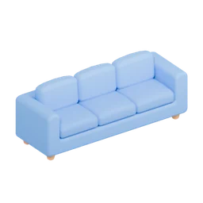<b>Sofá Nuvem</b><span>420 M$</span></div>
          <div class="on">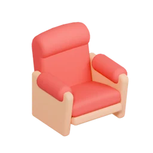<b>Poltrona Abraço</b><span>210 M$</span></div>
          <div><b>Banco Ipê</b><span>90 M$</span></div>
          <div>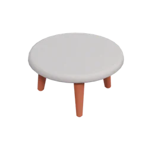<b>Mesa de centro</b><span>150 M$</span></div>
          <div>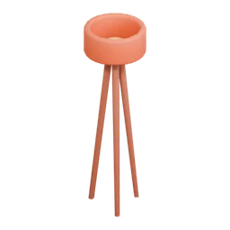<b>Luminária tripé</b><span>120 M$</span></div>
          <div>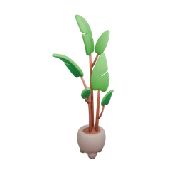<b>Costela-de-adão</b><span>60 M$</span></div>
        </div>
      </div>
      <div class="p uf" style="left:50%;bottom:16px;transform:translateX(calc(-50% - 120px));gap:6px;padding:8px">
        <span class="ub"><svg class="ui-ic"><use href="#i-wall"/></svg>Paredes</span><span class="ub"><svg class="ui-ic"><use href="#i-floor"/></svg>Piso</span><span class="ub"><svg class="ui-ic"><use href="#i-win"/></svg>Janelas</span><span class="ub"><svg class="ui-ic"><use href="#i-roof"/></svg>Telhado</span>
        <i style="width:1px;align-self:stretch;background:rgba(26,29,58,.12);margin:0 2px"></i>
        <span class="ub"><svg class="ui-ic"><use href="#i-undo"/></svg>Desfazer o meu</span><span class="ub tl"><svg class="ui-ic"><use href="#i-check"/></svg>Concluir</span>
      </div>
    </div></div>
    <div class="shot-note">
      <h3>Construir junto</h3>
      <ul>
        <li>O mesmo editor de sempre; com outra pessoa presente, aparecem a seleção dela e a região que ela trava.</li>
        <li>Trava por região ou peça, com versão, não por cômodo. Lia gira a poltrona enquanto Bruno mexe na parede da cozinha.</li>
        <li>"Desfazer o meu" reverte só as suas operações que ainda valem.</li>
        <li>Compras saem do fundo da família, dentro do limite de cada um. O catálogo mostra os móveis dos pacotes gratuitos.</li>
      </ul>
    </div>
  </div>

  <!-- 7 · Família e acessos -->
  <div class="shot" role="tabpanel" id="p-casa" aria-labelledby="tab-casa" hidden>
    <div class="screen-wrap"><div class="screen">
      
      <div class="veil" style="background:rgba(18,20,46,.32)"></div>
      <div class="p solid ug" style="left:18px;top:18px;width:440px;gap:8px;padding:16px">
        <div class="uf sb"><span class="ut" style="font-size:16px">Família Oliveira</span><span class="ub sm gh"><svg class="ui-ic" style="width:13px;height:13px"><use href="#i-plus"/></svg>Morador</span></div>
        <div class="staff" style="background:#FFF3EC"><span class="av" style="--s:38px;--r:#E8611F;--rw:2px"></span><div class="ug" style="gap:1px"><b style="font-size:13px">Lia</b><span class="um">adulta · preferida da Lia</span></div><span class="uc"><span class="ini" style="--s:16px;--c:#E8611F;font-size:8px;box-shadow:none">L</span>Lia dirigindo</span></div>
        <div class="staff"><span class="av" style="--s:38px;--r:#CC3366;--rw:2px"></span><div class="ug" style="gap:1px"><b style="font-size:13px">Marcos</b><span class="um">adulto · preferido do Bruno</span></div><span class="uc"><span class="ini" style="--s:16px;--c:#CC3366;font-size:8px;box-shadow:none">B</span>Bruno dirigindo</span></div>
        <div class="staff"><span class="av" style="--s:38px;--r:#C7CDE6;--rw:2px"></span><div class="ug" style="gap:1px"><b style="font-size:13px">Nina</b><span class="um">criança · sem preferido</span></div><span class="uc">livre</span></div>
        <div class="staff"><span class="av" style="--s:38px;--r:#0C8F81;--rw:2px"></span><div class="ug" style="gap:1px"><b style="font-size:13px">Theo</b><span class="um">2–3 anos · precisa de um adulto</span></div><span class="uc" style="background:#D3F2EE;color:#08695F">com a babá</span></div>
      </div>
      <div class="p solid ug" style="left:18px;bottom:18px;width:440px;gap:8px;padding:14px 16px">
        <div class="uf sb"><span class="ut">Dinheiro</span><b style="font-family:var(--f-display);font-size:17px">12.480 M$</b></div>
        <div class="uf" style="gap:10px;font-size:12px"><span class="uf" style="flex:1;gap:6px"><span class="ini" style="--s:18px;--c:#E8611F;font-size:8px">L</span>Lia manda 50% do salário ao fundo</span><span class="uf" style="flex:1;gap:6px"><span class="ini" style="--s:18px;--c:#CC3366;font-size:8px">B</span>Marcos manda 80%</span></div>
        <div class="um">Cada morador tem a própria carteira; ninguém é obrigado a dividir.</div>
      </div>
      <div class="p solid ug" style="right:18px;top:18px;width:446px;gap:6px;padding:16px">
        <div class="uf sb"><span class="ut" style="font-size:16px">Acessos</span><span class="ub sm gh"><svg class="ui-ic" style="width:13px;height:13px"><use href="#i-uplus"/></svg>Convidar</span></div>
        <div class="utab">
          <span></span><span class="h"><span class="ini" style="--s:22px;--c:#E8611F;margin:auto">L</span></span><span class="h"><span class="ini" style="--s:22px;--c:#CC3366;margin:auto">B</span></span><span class="h"><span class="ini" style="--s:22px;--c:#3463E6;margin:auto">C</span></span>
          <span style="font-weight:700">Dirigir moradores livres</span><span class="c"><i class="sw on lock" style="background:#0C8F81;opacity:.55"></i></span><span class="c"><i class="sw on"></i></span><span class="c"><i class="sw"></i></span>
          <span style="font-weight:700">Construir e comprar</span><span class="c"><i class="sw on lock" style="background:#0C8F81;opacity:.55"></i></span><span class="c"><i class="sw on"></i></span><span class="c"><i class="sw"></i></span>
          <span style="font-weight:700">Gastar acima de 500 M$</span><span class="c"><i class="sw on lock" style="background:#0C8F81;opacity:.55"></i></span><span class="c"><i class="sw"></i></span><span class="c"><i class="sw"></i></span>
          <span style="font-weight:700">Gerir serviços</span><span class="c"><i class="sw on lock" style="background:#0C8F81;opacity:.55"></i></span><span class="c"><i class="sw on"></i></span><span class="c"><i class="sw"></i></span>
          <span style="font-weight:700">Autorizar mudança</span><span class="c"><i class="sw on lock" style="background:#0C8F81;opacity:.55"></i></span><span class="c"><i class="sw"></i></span><span class="c"><i class="sw"></i></span>
        </div>
        <div class="um" style="font-size:11.5px">Lia é a dona da família. Clara entra como visita e não tem poder nenhum aqui.</div>
      </div>
      <div class="p solid ug" style="right:18px;bottom:18px;width:446px;gap:7px;padding:14px 16px;font-size:12px">
        <span class="ut">Histórico</span>
        <div class="uf"><span class="ini" style="--s:20px;--c:#E8611F;font-size:9px">L</span><span style="flex:1"><b>Lia</b> contratou Duda Reis (babá, em experiência)</span><span class="um">hoje 09:12</span></div>
        <div class="uf"><span class="ini" style="--s:20px;--c:#CC3366;font-size:9px">B</span><span style="flex:1"><b>Bruno</b> alterou a agenda de Bia Souza</span><span class="um">ontem 21:40</span></div>
        <div class="uf"><span class="ini" style="--s:20px;--c:#6A7096;font-size:9px">M</span><span style="flex:1"><b>Mundo</b> pagou 360 M$ de salários</span><span class="um">ontem 18:00</span></div>
      </div>
    </div></div>
    <div class="shot-note">
      <h3>Família e acessos</h3>
      <ul>
        <li>Todos os moradores, quem dirige cada um agora e quem é preferido de quem.</li>
        <li>Fundo comum e carteiras; cada um escolhe quanto do salário vai para o fundo.</li>
        <li>Permissões por pessoa, revogáveis; visita não tem poder nenhum.</li>
        <li>Histórico de tudo que mexe em dinheiro, contratos, permissões e construção.</li>
      </ul>
    </div>
  </div>

  <!-- 8 · Voltar ao mundo -->
  <div class="shot" role="tabpanel" id="p-volta" aria-labelledby="tab-volta" hidden>
    <div class="screen-wrap"><div class="screen">
      
      <div class="veil" style="background:linear-gradient(270deg,rgba(14,16,40,.86) 0,rgba(14,16,40,.6) 42%,rgba(14,16,40,0) 66%)"></div>
      <div style="position:absolute;right:28px;top:24px;width:420px;color:#fff;display:grid;gap:2px">
        <span class="uk" style="color:rgba(255,255,255,.7)">Bairro Ipê · você ficou fora 3 dias de jogo</span>
        <span style="font-family:var(--f-display);font-weight:700;font-size:24px">Bem-vinda de volta, Lia</span>
      </div>
      <div class="p solid ug" style="right:28px;top:96px;width:420px;gap:12px;padding:16px">
        <div class="uk">Enquanto você estava fora</div>
        <div class="tl2">
          <div><span class="av" style="--r:#CC3366"></span><span>Marcos foi promovido a cozinheiro.</span></div>
          <div><span class="av" style="--r:#C7CDE6"></span><span>Nina tirou 9 em matemática e ficou amiga de Davi, da família da Clara.</span></div>
          <div><span class="av" style="--r:#E8611F"></span><span>Lia ficou na rotina protegida e está bem: nada irreversível aconteceu com ela, e a idade dela esperou você.</span></div>
          <div><span class="gi"><svg class="ui-ic"><use href="#i-gift"/></svg></span><span>O aniversário da Lia esperou por você: é hoje à noite.</span></div>
        </div>
        <div class="uf" style="gap:10px;padding:10px 12px;border-radius:14px;background:#FFF0F5;box-shadow:inset 0 0 0 2px #CC3366">
          <span style="width:30px;height:30px;border-radius:50%;display:grid;place-items:center;background:#CC3366;color:#fff;flex:none"><svg class="ui-ic" style="width:15px;height:15px;fill:currentColor"><use href="#i-heart"/></svg></span>
          <span style="flex:1;font-size:12.5px"><b>Marcos pediu a Lia em casamento.</b><br><span class="um">Esperando a sua resposta</span></span>
          <span class="ub sm br">Responder</span>
        </div>
      </div>
      <div class="p d ug" style="left:20px;top:20px;width:300px;gap:9px;padding:14px">
        <div class="uf sb"><span class="uk">Agora no mundo</span><span class="uc"><svg class="ui-ic" style="width:13px;height:13px"><use href="#i-cloud"/></svg>vida em suspenso</span></div>
        <div class="uf" style="font-size:12.5px"><div class="stack"><span class="ini" style="--s:24px;--c:#CC3366">B</span><span class="ini" style="--s:24px;--c:#3463E6">C</span></div><span><b>Bruno</b> e <b>Clara</b> estão aqui</span></div>
        <div class="uf" style="font-size:12.5px"><svg class="ui-ic"><use href="#i-clock"/></svg>1× · dia 37, 07:10</div>
        <div style="padding:10px;border-radius:12px;background:rgba(255,255,255,.1);font-size:12.5px;display:grid;gap:8px">
          <span><b>Bruno pede:</b> acelerar para 3× até o almoço?</span>
          <div class="uf"><span class="ub sm wg" style="flex:1">Recusar</span><span class="ub sm pri" style="flex:1">Concordar</span></div>
        </div>
      </div>
      <div class="p uf" style="left:20px;bottom:20px;gap:12px;padding:10px 12px 10px 10px">
        <span class="av" style="--s:42px;--r:#E8611F"></span>
        <div class="ug" style="gap:0"><b style="font-size:13.5px">Retomar a Lia, como antes?</b><span class="um">Ela está no jardim, livre</span></div>
        <span class="ub gh">Outro morador</span><span class="ub pri">Retomar a Lia</span>
      </div>
    </div></div>
    <div class="shot-note">
      <h3>Voltar ao mundo</h3>
      <ul>
        <li>Resumo do que mudou, a partir das memórias do mundo.</li>
        <li>Pedidos de aceite guardados esperando você, como o casamento que Bruno propôs por Marcos.</li>
        <li>Pedidos de tempo dos outros presentes, com aceitar ou recusar.</li>
        <li>Retomar o morador de antes com um toque, se ele ainda estiver livre.</li>
      </ul>
    </div>
  </div>
  <p class="caption">Acessibilidade em todas as telas: teclas configuráveis, zoom e escala de interface, legenda de efeitos e expressões, opção de reduzir movimento e explicações simples sobre tempo, consentimento e onde o mundo está salvo. As cenas são renders dos pacotes gratuitos e dos nossos corpos; no jogo, a mesma cena é desenhada ao vivo pelo Three.js.</p>
</section>


<!-- SEGURANÇA -->
<section id="seguranca">
  <div class="sec-head">
    <span class="eyebrow" style="--c:var(--berry)">Convivência e privacidade</span>
    <h2>Mundos privados, idade da conta separada da idade do morador</h2>
    <p class="lead">O público é de famílias e amigos. As regras abaixo valem desde o primeiro protótipo, não no lançamento.</p>
  </div>
  <div class="grid g2">
    <ul class="small" style="margin:0;padding-left:18px;display:grid;gap:6px">
      <li>Mundos só por convite e código de uso limitado; autenticação e autorização sempre no servidor.</li>
      <li>Perfil infantil não herda permissões do adulto que o convidou. A idade do perfil decide o que a conta pode; a idade do morador decide o que ele faz no jogo.</li>
      <li>Romance e gravidez são sistemas familiares não explícitos, com política por faixa de idade.</li>
      <li>Confirmação para relações entre preferidos de pessoas diferentes, filhos, mudança e mudanças de patrimônio.</li>
    </ul>
    <ul class="small" style="margin:0;padding-left:18px;display:grid;gap:6px">
      <li>Bloquear, remover do mundo, revogar acesso, denunciar e moderar o chat.</li>
      <li>Quem gere o mundo não lê o histórico privado de ninguém; retenção, aviso e moderação seguem a política de privacidade da Informach.</li>
      <li>Toda ação vinda da rede é validada: ninguém age sobre morador ou lote trocando identificadores.</li>
      <li>Identidade própria: nomes, interface, ícones e idioma dos moradores são nossos; nada de termos ou marca da série The Sims no produto ou na divulgação.</li>
    </ul>
  </div>
</section>

<!-- RECREIO -->
<section id="recreio">
  <div class="sec-head">
    <span class="eyebrow" style="--c:var(--sun)">Dentro do Recreio</span>
    <h2>Assinatura com tudo incluído; jogador é um perfil do Recreio</h2>
    <p class="lead">O Morada é o primeiro jogo do Recreio e não tem login, lista de mundos nem cobrança próprios. O Recreio identifica a pessoa, autoriza a entrada e guarda os mundos, os membros e a continuidade; o Morada cuida de tudo que acontece dentro do mundo. Terreno, andares, móveis, roupas e carreiras fazem parte do jogo, não de uma loja.</p>
  </div>
  <div class="grid g4">
    <div class="stat"><b class="big" style="--c:var(--tangerine)">R$ 59,90</b><span>por mês, plano Individual do Recreio</span></div>
    <div class="stat"><b class="big" style="--c:var(--teal)">~R$ 127</b><span>por mês, plano Família, até 4 perfis</span></div>
    <div class="stat"><b class="big" style="--c:var(--sky)">0</b><span>moedas premium, passes ou anúncios</span></div>
    <div class="stat"><b class="big" style="--c:var(--berry)">100%</b><span>do conteúdo para quem assina</span></div>
  </div>
  <div class="grid g3">
    <div class="card facet"><h4>Quem joga com quem</h4><p class="small">Cada pessoa entra com o próprio perfil do Recreio: adultos com login próprio, menores por aparelho pareado pelo responsável. Convidados de outras assinaturas entram com o acesso deles. Perfis de menores só entram em mundos com política de conteúdo compatível e aprovados pelo responsável.</p></div>
    <div class="card facet"><h4>Conteúdo novo incluso</h4><p class="small">Bairros, carreiras, móveis e roupas novos entram na assinatura, sem pacote de expansão pago. Os pacotes pagos da ITHappy chegam assim.</p></div>
    <div class="card facet"><h4>O que não vendemos</h4><p class="small">Passes de terreno, andares ou velocidade, moeda premium, itens avulsos e anúncios. A licença dos assets também pede autorização para vender itens virtuais avulsos.</p></div>
  </div>
  <div class="card facet">
    <h3>De quem é o mundo</h3>
    <div class="tbl" style="margin-top:4px">
      <table>
        <thead><tr><th>Papel</th><th>Pode</th><th>Se perder o acesso</th></tr></thead>
        <tbody>
          <tr><td><b>Responsável</b></td><td>Configurar o mundo, convidar, nomear coadministradores, mudar a política de avanço com acordo</td><td>Um coadministrador assume; sem nenhum, a responsabilidade passa por aceite a outro membro</td></tr>
          <tr><td><b>Coadministrador</b></td><td>Manter o mundo, convidar, remover visitantes</td><td>Perde o papel enquanto estiver sem acesso</td></tr>
          <tr><td><b>Membro</b></td><td>Entrar e agir nas famílias a que tem acesso</td><td>Não entra; as famílias e os preferidos dele seguem a rotina protegida</td></tr>
          <tr><td><b>Visitante</b></td><td>Circular e conversar, por uma visita com prazo (padrão: até o anfitrião sair, no máximo 24 h), revogável; não é membro</td><td>A visita acaba; voltar pede novo convite</td></tr>
        </tbody>
      </table>
    </div>
    <p class="small" style="margin-top:10px">Se Lia criou o Bairro Ipê e cancela, Bruno e Clara continuam jogando. Sem nenhum membro com acesso, o mundo hiberna e depois é arquivado pela política de retenção, nunca apagado na hora. Se Lia pedir a exclusão da conta, os dados pessoais dela saem e nada do mundo é apagado em cascata. A autoria dela no diário de eventos vira "ex-membro", textos livres que ela escreveu (como nomes) são revistos, e os moradores ficam como conteúdo do mundo, sem vínculo com o perfil dela; ela pode pedir antes para levar a própria família embora. Essa última regra passa pela revisão jurídica do Recreio.</p>
  </div>
  <div class="card facet" style="--soft:var(--sun-soft)">
    <h3>Licença dos assets: o que ainda precisa ser conferido</h3>
    <ul class="small" style="margin:0;padding-left:18px;display:grid;gap:6px">
      <li><b>Licença paga:</b> segundo a revisão externa, a ITHappy atualizou o contrato em 3 de novembro de 2026 e passou a autorizar explicitamente assistentes de programação e agentes de IA a inspecionar, modificar, converter, otimizar e integrar os assets; treinar modelos continua proibido. Se confirmado, isso resolve a divergência que a v4 apontava sobre IA. Ainda não li essa versão: o site está bloqueado nesta sessão.</li>
      <li><b>Pacotes grátis e o editor de construção:</b> a política gratuita permite produtos comerciais, mas restringe usar os assets em serviços em que o usuário monta produtos personalizados ("build-it-yourself"). O editor de casas do Morada pode cair nessa regra. Pedir confirmação por escrito antes de qualquer versão pública; se não for permitido, o editor usa só pacotes pagos ou peças próprias.</li>
      <li><b>Mixamo:</b> enviar corpos derivados dos assets a um serviço externo precisa de autorização por escrito, mesmo sendo uso técnico. A documentação da Adobe cobre a função, não os direitos sobre o modelo de terceiro.</li>
      <li><b>Jogo no navegador:</b> modelos enviados ao cliente podem ser extraídos. Empacotar, não expor os originais, e confirmar com a ITHappy as medidas esperadas.</li>
      <li>Comprar os pacotes pagos no nome da Informach; avisar defeitos em até uma semana após o download.</li>
    </ul>
  </div>
</section>

<!-- TÉCNICA -->
<section id="tecnica">
  <div class="sec-head">
    <span class="eyebrow" style="--c:var(--teal)">Arquitetura técnica</span>
    <h2>A simulação guarda a verdade; o desenho mostra; a interface pede; a rede e o banco transportam</h2>
    <p class="lead">Um pacote de regras em TypeScript, executado com autoridade no servidor e reaproveitado no navegador para testes e, depois, para o modo offline. O resto encaixa nas convenções do informach-apps e no Recreio: pacotes consumidos como fonte, Drizzle como fonte do schema, identidade, acesso e mundos pelo Recreio, deploy no Railway.</p>
  </div>
  <pre class="mermaid">
flowchart TB
  REC[Recreio: perfil, ingresso, mundos, membros, posse] --> UI
  UI[jogo-morada: React + Three.js] -->|WebSocket com ingresso| SRV[morada-server: vários mundos por instância]
  SRV -->|confere ingresso e posse| REC
  SRV --> SIM[morada-sim]
  SIM --> DOM[Mundo, família, morador, relação]
  SIM --> SIS[Tempo, IA, interações, construção, economia]
  SRV --> NUVEM[Fotografias e diário de eventos]
  NUVEM --> DB[(Postgres + Drizzle e armazenamento de objetos)]
  T[Testes e replays no Web Worker] --> SIM
  </pre>
  <div class="tbl">
    <table>
      <thead><tr><th>Caminho</th><th>Papel</th></tr></thead>
      <tbody>
        <tr><td><code>packages/jogo-morada</code></td><td>Cliente do jogo (canvas + React), carregado sob demanda pela rota <code>/jogar/morada</code> do Recreio. Não existe <code>apps/morada-web</code>: entrada, perfil e lista de mundos são do Recreio</td></tr>
        <tr><td><code>apps/morada-server</code></td><td>Processo de longa duração: todos os mundos abertos, vários por instância, com a posse dada pelo Recreio, WebSocket</td></tr>
        <tr><td><code>packages/morada-sim</code> (<code>@informach/morada-sim</code>)</td><td>Domínio, regras, conteúdo em dados, mensagens; TypeScript puro, consumido como fonte, sem build</td></tr>
        <tr><td><code>@informach/db</code></td><td>Schema <code>morada</code> só com o que o servidor consulta com frequência: lotes, famílias, acessos e permissões internas. Membros, responsável e posse do mundo ficam no schema <code>recreio</code></td></tr>
        <tr><td><code>@informach/recreio</code></td><td>SDK: perfil, ingresso, mundos, presença, conquistas. O Morada nunca chama auth, billing ou Stripe diretamente</td></tr>
        <tr><td><code>tools/morada-art</code></td><td>Scripts do Blender: corpos, tons, expressões, paleta, LOD, exportação</td></tr>
      </tbody>
    </table>
  </div>
  <p class="caption">Separar mais pacotes (rede, cliente, testes) só quando reduzir manutenção, não por princípio.</p>
  <div class="grid g2">
    <div style="display:grid;gap:22px;min-width:0">
      <div class="code-head"><span>packages/morada-sim/dominio/tipos.ts</span><span>esboço</span></div>
<pre><span class="k">interface</span> Morador {
  id: MoradorId; mundoId: MundoId;
  familiaId: FamiliaId | <span class="k">null</span>;
  fase: <span class="s">"colo"</span> | <span class="s">"pequeno"</span> | <span class="s">"crianca"</span>
      | <span class="s">"adolescente"</span> | <span class="s">"adulto"</span> | <span class="s">"idoso"</span>;
  necessidades: Record&lt;string, number&gt;;
  tracos: string[]; habilidades: Record&lt;string, number&gt;;
  relacoes: RelacaoId[];          <span class="c">// referências, não cópias</span>
  fila: AcaoId[];
  preferidoDe?: PerfilId;         <span class="c">// preferência e proteção, não dono</span>
}
<span class="k">interface</span> AcessoFamilia {
  familiaId; perfilId; permissoes: Permissao[];
  compartilhaPreferidos: boolean;
}
<span class="k">interface</span> ReservaDeControle {       <span class="c">// sessão; nunca gravada no morador</span>
  moradorId; perfilId; sessaoId; expiraEm: number;
}
<span class="k">interface</span> Intencao {
  comandoId: string;              <span class="c">// idempotência</span>
  mundoId; moradorId; acao; versaoEsperada: number;
}</pre>
    </div>
    <div class="card facet" style="--cut:18px">
      <h3>Como um comando anda</h3>
      <ol class="small" style="margin:0;padding-left:18px;display:grid;gap:6px">
        <li>O cliente escolhe um morador e pede a reserva.</li>
        <li>A instância do servidor que tem a posse confere o ingresso, o acesso à família e a presença.</li>
        <li>O cliente manda a intenção com identificador e versão esperada.</li>
        <li>A simulação valida, resolve a concorrência, decide e registra eventos no tick do mundo.</li>
        <li>O que é persistente vai para a nuvem em transação: dinheiro, nascimento, vínculo, propriedade, permissões.</li>
        <li>Todos os presentes recebem as mudanças e os eventos de apresentação; o navegador anima.</li>
      </ol>
      <p class="small">Com uma pessoa só, o caminho é o mesmo, sem atalho local. O navegador começa a animação na hora e corrige se o servidor recusar, para a resposta parecer imediata.</p>
    </div>
  </div>
  <div class="grid g3">
    <div class="card facet"><h4>Rede e sincronização</h4><p class="small">WebSocket próprio; Colyseus é opção a avaliar (salas, patches, reconexão) sem amarrar a simulação a ele. A unidade de relógio e autoridade é o mundo; o interesse é filtrado por lote. Tick lógico de 100 ms (ajustável por medição), comandos em ordem por mundo, versão por entidade, idempotência por comando. Ao reconectar, fotografia atual e reservas revalidadas.</p></div>
    <div class="card facet"><h4>Movimento</h4><p class="small">Destino, rota e tick de início, com correção periódica de posição: rota bloqueada, colisão e atraso acontecem. Rotas dos moradores sem jogador calculadas no servidor; animação, interpolação e previsão do movimento de quem você dirige no navegador.</p></div>
    <div class="card facet"><h4>Persistência</h4><p class="small">Postgres + Drizzle para perfis, acessos, operações econômicas e mundos. Fotografias compactas e versionadas mais log de eventos significativos (não todos os ticks). Operações críticas em transação, migrações de schema, backup testado por restauração. Mundo vazio não fica rodando.</p></div>
    <div class="card facet"><h4>Navegação e física</h4><p class="small">Recast/Detour (WebAssembly) para navegação, refeita só no trecho alterado pela obra, com aviso quando algo fica inacessível. Rapier só para personagens cinemáticos e objetos que caem; ele não acha a geladeira sozinho. Móveis estáticos com pontos de uso reservados.</p></div>
    <div class="card facet"><h4>Desenho</h4><p class="small">InstancedMesh para o que se repete, BatchedMesh para estáticos do lote, LOD, culling, KTX2 e meshopt, carregamento por lote, animação na taxa que a câmera precisa.</p></div>
    <div class="card facet"><h4>Autoridade</h4><p class="small">Economia, nascimento, vínculo de casal, propriedade e permissões só mudam na instância com a posse. Uma instância antiga que volta depois de uma falha é recusada pelo token de cerca.</p></div>
  </div>
</section>

<!-- DESEMPENHO -->
<section id="desempenho">
  <div class="sec-head">
    <span class="eyebrow" style="--c:var(--leaf)">Desempenho</span>
    <h2>Metas a provar em teste, não capacidades prometidas</h2>
    <p class="lead">Os números abaixo orientam o trabalho e viram limites oficiais só depois dos testes em hardware real.</p>
  </div>
  <div class="tbl">
    <table>
      <thead><tr><th>Item</th><th>Meta</th></tr></thead>
      <tbody>
        <tr><td>Quadros por segundo em notebook com vídeo integrado</td><td>60 (16,7 ms por quadro)</td></tr>
        <tr><td>Download para começar</td><td>≤ 35 MB</td></tr>
        <tr><td>Memória da aba</td><td>&lt; 1 GB</td></tr>
        <tr><td>Chamadas de desenho por quadro</td><td>≤ 150</td></tr>
        <tr><td>Morador LOD0 / LOD1 / LOD2</td><td>~6.000 / 2.500 / 800 triângulos (os de hoje têm ~4.500)</td></tr>
        <tr><td>Móvel comum / lote visível</td><td>~1.500 / ≤ 300 mil triângulos</td></tr>
        <tr><td>Pessoas por mundo</td><td>12</td></tr>
        <tr><td>Moradores por família</td><td>8 no protótipo</td></tr>
        <tr><td>Servidor</td><td>Custo por hora de mundo com 1, 2, 4 e 8 pessoas; quantos mundos de uma família cabem em 1 vCPU</td></tr>
      </tbody>
    </table>
  </div>
  <div class="grid g2">
    <div class="card facet">
      <h3>Cenários de teste</h3>
      <ol class="small" style="margin:0;padding-left:18px;display:grid;gap:6px">
        <li>Casa pequena: 1 pessoa, 4 moradores, 100 móveis, 6 necessidades.</li>
        <li>Casa grande: 8 moradores, mais de 300 itens, 2 funcionários, 2 andares.</li>
        <li>Duas pessoas editando e interagindo na mesma casa.</li>
        <li>Bairro: 12 pessoas em várias famílias, moradores sem jogador em simulação resumida.</li>
        <li>Vida longa: 100 dias de jogo com nascimentos, envelhecimento, relações e mudanças, sem vazar memória.</li>
        <li>Queda de rede de um cliente e falha da instância do servidor durante nascimento, compra, mudança e construção.</li>
      </ol>
      <p class="small">Perfis de máquina: baixo (vídeo integrado, 8 GB), médio (placa de vídeo de entrada) e celular, testado só depois do computador estável. Medir tempo de quadro p50 e p95, carregamento, memória, chamadas de desenho, tráfego, CPU e memória do servidor, duração do tick, erros e tempo de navegação refeita.</p>
    </div>
    <div class="card facet">
      <h3>O que os corpos já mostraram</h3>
      <p class="small">Hoje cada corpo de teste carrega de 4 a 9 MB porque leva todas as animações junto. Com a biblioteca de animações por grupo, baixada uma vez, o corpo, o rosto e as expressões ficam por volta de 0,3 MB cada. É isso que torna possível começar a jogar com cerca de 35 MB.</p>
    </div>
  </div>
</section>

<!-- PLANO -->
<section id="plano">
  <div class="sec-head">
    <span class="eyebrow" style="--c:var(--sky)">Plano</span>
    <h2>Provar o ciclo da família antes de qualquer outro sistema</h2>
    <p class="lead">Casar com um NPC, ter um filho que cresce sendo a mesma pessoa e dividir a casa com alguém é o que separa o Morada de um jogo de roleplay. Ainda não há código do Morada no repositório. A primeira entrega é um protótipo simples que prova esse ciclo; construção, carreiras, móveis, animais, cidade e serviços contratados não podem atrasá-lo.</p>
  </div>
  <h3>Teste decisivo</h3>
  <div class="grid g4">
    <div class="state" style="--c:var(--leaf)"><h4><i class="dot"></i>1 · Família</h4><p class="small">Quatro moradores, todos com autonomia e selecionáveis pelos retratos.</p></div>
    <div class="state" style="--c:var(--sky)"><h4><i class="dot"></i>2 · Casamento</h4><p class="small">Um NPC casa e entra na família, com as informações e as relações que já tinha.</p></div>
    <div class="state" style="--c:var(--berry)"><h4><i class="dot"></i>3 · Bebê</h4><p class="small">Nasce, aparece nos retratos, recebe cuidados e envelhece sendo a mesma pessoa.</p></div>
    <div class="state" style="--c:var(--sun)"><h4><i class="dot"></i>4 · Amigo e 5 · queda</h4><p class="small">Um amigo entra e assume outro morador, os dois jogando juntos. Depois um deles cai sem avisar, e a família, as filas e o mundo continuam íntegros.</p></div>
  </div>
  <p class="caption">O protótipo usa casa de caixas e os corpos que já existem; não espera a arte final. A arte segue em paralelo, sem bloquear.</p>
  <div class="tbl">
    <table>
      <thead><tr><th>Fase</th><th>O que dá para jogar</th><th>Pronto quando</th></tr></thead>
      <tbody>
        <tr><td><b>0 · Teste decisivo</b></td><td>Modelo de mundo, família, morador, perfil, acesso, reserva, preferido, relógio e comandos; servidor autoritativo com dois clientes; ingresso e mundo pelo Recreio</td><td>Os cinco passos acima passam em teste automatizado e com duas pessoas; custo por hora de mundo medido</td></tr>
        <tr><td><b>1 · Uma casa que funciona</b></td><td>Criar de 1 a 4 moradores, retratos, necessidades, 20 a 30 interações, paredes e móveis, salvar, hibernar e voltar</td><td>Uma pessoa administra todos os moradores por 7 dias de jogo</td></tr>
        <tr><td><b>2 · Família completa</b></td><td>Relações, namoro com NPC, morar junto, gravidez ou adoção, bebê com cuidados, envelhecimento, mudança simples</td><td>Um casal tem um filho, o filho é cuidado desde o nascimento e cresce sem perder identidade</td></tr>
        <tr><td><b>3 · Mais gente na casa</b></td><td>Convite, reservas, preferidos e consentimento, relógio dos presentes, política de avanço, reconexão</td><td>Duas pessoas comandam a mesma família; o filho nunca tem dois controladores; quem volta encontra a família como a política prometeu</td></tr>
        <tr><td><b>4 · Vizinhos</b></td><td>Famílias separadas, visitas, casamento entre casas, unir e separar, mudar de lote, papéis do mundo e continuidade</td><td>Duas pessoas casam seus moradores sem perder nada; o mundo segue quando a responsável cancela</td></tr>
        <tr><td><b>5 · Escola e trabalho</b></td><td>Escola, empregos, habilidades, contas, histórias do bairro</td><td>Semanas de jogo coerentes, com trabalho e escola</td></tr>
        <tr><td><b>6 · Serviços e conteúdo</b></td><td>Serviços contratados com agenda, catálogo maior (pacotes pagos com receita), casas prontas, acessibilidade, otimização</td><td>Beta privado no hardware-alvo</td></tr>
        <tr><td><b>7 · Lançamento no Recreio</b></td><td>Primeiros passos, backups, operação, suporte, moderação, autoclassificação, licenças confirmadas</td><td>Uma família de fora assina, joga e convida um amigo sem ajuda do time</td></tr>
      </tbody>
    </table>
  </div>
  <h3>Primeiras entregas de engenharia</h3>
  <div class="grid g3">
    <div class="card facet"><h4>1 · Documento do modelo</h4><p class="small">Tipos e invariantes de mundo, família, morador, relação, acesso, reserva, preferido (dirigir e autorizar), presença, política de avanço, gravidez e eventos agendados, com schemas e testes unitários.</p></div>
    <div class="card facet"><h4>2 · Servidor e Recreio</h4><p class="small">Instância com vários mundos, posse com token de cerca, ingresso do Recreio, checkpoint e hibernação. Derrubar a instância no meio de um parto e conferir que o nascimento existe uma vez.</p></div>
    <div class="card facet"><h4>3 · Prova da família</h4><p class="small">Os passos 1 a 3 do teste decisivo: quatro moradores, casamento com NPC, bebê com cuidados que vira criança.</p></div>
    <div class="card facet"><h4>4 · Prova do convívio</h4><p class="small">Os passos 4 e 5: segunda pessoa, reservas, consentimento, queda sem aviso, reconexão, volta com resumo.</p></div>
    <div class="card facet"><h4>5 · Prova do tempo</h4><p class="small">Pausa e velocidades com uma pessoa; acordo com várias; as três políticas de avanço com uma família ausente por "cinco dias reais" simulados.</p></div>
    <div class="card facet"><h4>6 · Prova da arte</h4><p class="small">Dois adultos, uma criança e um bebê com roupas, 10 interações com móveis, colo e animações em par. Medir tempo de quadro e download. Em paralelo às outras.</p></div>
  </div>
  <h3>Testes de aceitação que não podem falhar</h3>
  <div class="grid g2">
    <ul class="small" style="margin:0;padding-left:18px;display:grid;gap:6px">
      <li>Uma pessoa cria 4 moradores e troca entre todos; os outros agem sozinhos.</li>
      <li>Um NPC casa, vem morar e passa a ser comandável, com as relações de antes.</li>
      <li>Um bebê aparece nos retratos ao nascer, recebe cuidados e vira criança sendo a mesma pessoa.</li>
      <li>Duas pessoas comandam dois moradores da mesma casa ao mesmo tempo; o filho tem uma reserva por vez.</li>
      <li>Uma saída inesperada não apaga o morador nem corrompe a fila.</li>
      <li>Irreversíveis de um preferido não acontecem sem o aceite de quem o tem como preferido, mesmo com outra pessoa dirigindo.</li>
      <li>Famílias de casas separadas visitam, casam e formam uma família nova.</li>
      <li>Mudar de casa mantém carreira, inventário, parentesco e história.</li>
    </ul>
    <ul class="small" style="margin:0;padding-left:18px;display:grid;gap:6px">
      <li>A instância cai durante um nascimento: ele fica registrado exatamente uma vez.</li>
      <li>Uma instância antiga que volta não escreve no mundo.</li>
      <li>Com "vida em suspenso", uma família ausente volta sem ter envelhecido nem passado por nada irreversível.</li>
      <li>Ninguém acelera um mundo com outras pessoas presentes sem o acordo delas.</li>
      <li>A responsável cancela; Bruno e Clara continuam jogando no mesmo mundo.</li>
      <li>Compras ao mesmo tempo não deixam o fundo negativo nem duplicam objetos.</li>
      <li>Sem permissão, ninguém age sobre morador ou lote trocando identificadores na rede.</li>
      <li>Restaurar backup é testado, não só escrito.</li>
    </ul>
  </div>
</section>

<!-- DECISÕES E RISCOS -->
<section id="riscos">
  <div class="sec-head">
    <span class="eyebrow" style="--c:var(--berry)">Decisões e riscos</span>
    <h2>O que está decidido, o que pode dar errado e o que fica para depois</h2>
  </div>
  <div class="tbl">
    <table>
      <thead><tr><th>Questão</th><th>Decisão</th></tr></thead>
      <tbody>
        <tr><td>O que o jogador controla</td><td>As famílias a que tem acesso, morador por morador, com reserva temporária</td></tr>
        <tr><td>Modos de jogo</td><td>Nenhum: um mundo e as pessoas presentes nele</td></tr>
        <tr><td>Onde o mundo vive</td><td>Guardado no Recreio; executado com autoridade numa instância do servidor enquanto houver alguém presente; hiberna vazio</td></tr>
        <tr><td>De quem é o mundo</td><td>Do próprio mundo, com responsável, coadministradores, membros e visitantes; continua sem quem o criou</td></tr>
        <tr><td>Preferido</td><td>Dois direitos separados: dirigir primeiro e autorizar os irreversíveis</td></tr>
        <tr><td>Filhos</td><td>Moradores próprios, com parentesco, comandáveis por quem tem acesso à família; sem dono</td></tr>
        <tr><td>NPC que vem morar</td><td>Vira morador comandável da família</td></tr>
        <tr><td>Casar e morar junto</td><td>Decisões separadas</td></tr>
        <tr><td>Gravidez</td><td>Não explícita, persistente, com aceites e adoção</td></tr>
        <tr><td>Envelhecimento</td><td>Configurável por mundo; famílias ausentes seguem a política de avanço; mudança de fase de preferido de quem está fora espera a volta</td></tr>
        <tr><td>Morte</td><td>Desligada por padrão</td></tr>
        <tr><td>Tempo</td><td>Decidido pelos presentes, com unanimidade no começo, dentro da política de avanço do mundo (padrão: vida em suspenso)</td></tr>
        <tr><td>Fundo da família</td><td>Cada um escolhe quanto do salário vai para ele</td></tr>
        <tr><td>Pessoas por mundo / moradores por família</td><td>12 / 8, sujeitos a teste</td></tr>
        <tr><td>Arte</td><td>Pacotes grátis na primeira versão; pagos com receita, personagens primeiro</td></tr>
        <tr><td>Negócio</td><td>Assinatura do Recreio, sem moeda premium</td></tr>
      </tbody>
    </table>
  </div>
  <div class="tbl">
    <table>
      <thead><tr><th>Risco</th><th>Impacto</th><th>Como reduzir</th></tr></thead>
      <tbody>
        <tr><td>Controle de moradores confuso</td><td>Crítico</td><td>Modelo família + reserva e testes de concorrência desde a fase 0</td></tr>
        <tr><td>Tempo acelerado prejudica quem está fora</td><td>Crítico</td><td>Política de avanço do mundo, proteção da família inteira e acordo dos presentes</td></tr>
        <tr><td>Custo de servidor com todas as horas de jogo</td><td>Alto</td><td>Vários mundos por instância, hibernação, LOD, custo medido no Marco 0 e porta de reavaliação para execução local em mundos de um membro</td></tr>
        <tr><td>Falha de instância no meio de um evento</td><td>Alto</td><td>Diário de eventos idempotente, posse com token de cerca, teste de queda durante parto e compra</td></tr>
        <tr><td>Mundo depender de quem o criou</td><td>Alto</td><td>Papéis do mundo e continuidade pelo Recreio</td></tr>
        <tr><td>Gravidez e casamento incoerentes entre pessoas</td><td>Alto</td><td>Eventos do domínio com aceite e cenários de teste</td></tr>
        <tr><td>IA pesada com dezenas de moradores</td><td>Alto</td><td>Níveis de detalhe e agenda de eventos</td></tr>
        <tr><td>Bebês e roupas atravessando a malha</td><td>Alto</td><td>Provas de arte antes de produzir o catálogo</td></tr>
        <tr><td>Construção bloqueando rotas</td><td>Alto</td><td>Navegação incremental e teste automático de alcance</td></tr>
        <tr><td>Corrida entre compra, mudança e patrimônio</td><td>Alto</td><td>Transações, idempotência, versões e permissões</td></tr>
        <tr><td>Licença: editor de construção com pacotes grátis e envio ao Mixamo</td><td>Alto</td><td>Confirmação por escrito da ITHappy antes de qualquer versão pública; editor só com pacotes pagos ou peças próprias se for preciso</td></tr>
        <tr><td>Metas de rede, vídeo e servidor irreais</td><td>Alto</td><td>Testes progressivos e telemetria por cenário</td></tr>
        <tr><td>Crianças interagindo com desconhecidos</td><td>Alto</td><td>Mundos privados, perfis infantis com aprovação do titular, moderação e privacidade desde o protótipo</td></tr>
        <tr><td>Semelhança com a série original</td><td>Médio</td><td>Nomes, interface, ícones e idioma próprios; revisão de identidade antes de divulgar</td></tr>
      </tbody>
    </table>
  </div>
  <div class="grid g2">
    <div class="card facet">
      <h3>Fica para depois, sem sair do produto</h3>
      <ul class="small" style="margin:0;padding-left:18px;display:grid;gap:6px">
        <li>Dezenas de profissões jogáveis, veículos complexos e regiões enormes.</li>
        <li>Mercado público de plantas e social aberto a desconhecidos.</li>
        <li>Psicologia profunda com modelo de linguagem em cada NPC.</li>
        <li>Personalização de bebê tão completa quanto a do adulto.</li>
        <li>Partilha de bens sofisticada, guarda compartilhada e herança detalhada.</li>
        <li>Celular e tablet antes do computador estar estável.</li>
      </ul>
    </div>
    <div class="card facet">
      <h3>Decisões em aberto</h3>
      <ul class="small" style="margin:0;padding-left:18px;display:grid;gap:6px">
        <li>Nome do jogo e da moeda (Morada e M$ são provisórios).</li>
        <li>Regra de acordo para o tempo depois do MVP: unanimidade ou maioria com prazo.</li>
        <li>Se o adiamento de fase de quem está fora é fixo ou opção do mundo.</li>
        <li>Gravidez e adoção, ou só adoção no lançamento.</li>
        <li>Quantas famílias NPC prontas no primeiro bairro (proposta: 8).</li>
        <li>Quando comprar os pacotes pagos e em que ordem (proposta: personagens primeiro).</li>
        <li>Só navegador, ou também um app de desktop com o Electron que o monorepo já usa.</li>
        <li>Qual política de avanço é o padrão e qual o teto do "avanço limitado".</li>
        <li>Se a medição do Marco 0 justifica execução local em mundos de um membro.</li>
      </ul>
    </div>
  </div>
</section>

</main>
<footer>Projeto Morada · proposta v4.1 · 4 nov 2026 · consolidação técnica da v4 com o Recreio v2.1, a partir da segunda revisão externa: servidor autoritativo, política de avanço, preferido com dois direitos, bebês, continuidade do mundo, integração com o Recreio e licenças. Nomes, moeda e números de desempenho são metas a validar na fase 0. Referências técnicas consultadas: <a href="https://docs.colyseus.io/">Colyseus</a>, <a href="https://rapier.rs/docs/user_guides/javascript/character_controller/">Rapier</a>, <a href="https://threejs.org/docs/">Three.js</a>, <a href="https://developer.mozilla.org/pt-BR/docs/Web/API/IndexedDB_API">MDN (IndexedDB, Page Visibility, PWA offline, armazenamento persistente)</a> e a <a href="https://ithappystudios.com/one-time-purchase-licence-agreement/">licença da ITHappy Studios</a>. Elas sustentam capacidades das bibliotecas, não a implementação de outros jogos; esta proposta não é auditoria de código, benchmark nem parecer jurídico. Arte: pacotes gratuitos da ITHappy Studios, adaptados; as imagens são renders de teste.</footer>

<script>
(function(){
  /* ---------- galeria de telas ---------- */
  function fit(){document.querySelectorAll('.screen-wrap').forEach(function(w){if(w.clientWidth)w.style.setProperty('--k',w.clientWidth/960);});}
  var tabs=document.querySelectorAll('#tabs [role=tab]');
  tabs.forEach(function(t){t.addEventListener('click',function(){
    tabs.forEach(function(o){var on=o===t;o.setAttribute('aria-selected',on);document.getElementById(o.getAttribute('aria-controls')).hidden=!on;});
    fit();
  });});
  if(window.ResizeObserver){new ResizeObserver(fit).observe(document.getElementById('telas'));}
  window.addEventListener('resize',fit);fit();

  /* ---------- velocidade do mundo ---------- */
  function fmt(min){var h=Math.floor(min/60),m=Math.round(min%60);if(m===60){h++;m=0;}return h?(h+' h'+(m?' '+m+' min':'')):(m+' min');}
  function tw(min){
    document.querySelectorAll('.seg button').forEach(function(b){b.setAttribute('aria-pressed',String(+b.dataset.min===min));});
    var perHour=min/24;
    document.getElementById('tw-out').innerHTML=
      '<div><b>'+(perHour*60/60).toLocaleString('pt-BR',{maximumFractionDigits:1})+' min</b><span>reais por hora de jogo</span></div>'+
      '<div><b>'+fmt(perHour*8)+'</b><span>um turno de 8 h de trabalho</span></div>'+
      '<div><b>'+fmt(min*7)+'</b><span>uma semana de jogo</span></div>'+
      '<div><b>'+fmt(perHour*8/10)+'</b><span>a noite (22h às 6h) quando todos dormem</span></div>';
  }
  document.querySelectorAll('.seg button').forEach(function(b){b.addEventListener('click',function(){tw(+b.dataset.min);});});
  tw(48);

  /* ---------- editor de agenda ---------- */
  var DAYS=['Seg','Ter','Qua','Qui','Sex','Sáb','Dom'],H0=6,H1=22,MAX=3;
  function slots(days,a,b){var s=[];days.forEach(function(d){for(var h=a;h<b;h++)s.push(d+'-'+h);});return s;}
  var staff=[
    {id:'ana',nome:'Ana Lima',tipo:'diarista',cor:'#0C8F81',taxa:18,s:new Set(slots([0,2,4],8,12))},
    {id:'bia',nome:'Bia Souza',tipo:'diarista',cor:'#3463E6',taxa:18,s:new Set(slots([1,3],13,17).concat(slots([5],9,12)))},
    {id:'carla',nome:'Carla Dias',tipo:'babá',cor:'#CC3366',taxa:22,s:new Set(slots([0,1,2,3,4],7,15))},
    {id:'duda',nome:'Duda Reis',tipo:'babá',cor:'#E8611F',taxa:22,s:new Set(slots([0,1,2,3,4],14,20))}
  ];
  var pool={diarista:[{id:'eli',nome:'Eli Prado',cor:'#2F9A4B',taxa:16}],'babá':[{id:'gabi',nome:'Gabi Nunes',cor:'#B98600',taxa:20}]};
  var sel='ana';
  var grid=document.getElementById('sgrid'),list=document.getElementById('staff-list'),sum=document.getElementById('sum');
  function money(v){return v.toLocaleString('pt-BR')+' M$';}
  function renderList(){
    list.innerHTML=staff.map(function(p){return '<button type="button" class="staff-btn" id="sb-'+p.id+'" style="--c:'+p.cor+'" aria-pressed="'+(p.id===sel)+'" data-id="'+p.id+'"><i></i>'+p.nome+' <small>'+p.tipo+'</small></button>';}).join('');
    list.querySelectorAll('button').forEach(function(b){b.addEventListener('click',function(){sel=b.dataset.id;renderList();});});
    ['diarista','babá'].forEach(function(t){var btn=document.getElementById(t==='diarista'?'add-dia':'add-baba');
      var n=staff.filter(function(p){return p.tipo===t;}).length;btn.disabled=n>=MAX||!pool[t].length;});
  }
  function renderGrid(){
    var h='<thead><tr><th class="h"></th>'+DAYS.map(function(d){return '<th scope="col">'+d+'</th>';}).join('')+'</tr></thead><tbody>';
    for(var hr=H0;hr<H1;hr++){
      h+='<tr><th class="h" scope="row">'+String(hr).padStart(2,'0')+'h</th>';
      for(var d=0;d<7;d++){var key=d+'-'+hr;
        var bars=staff.filter(function(p){return p.s.has(key);}).map(function(p){return '<span style="--c:'+p.cor+'"></span>';}).join('');
        h+='<td><button type="button" class="cell" data-k="'+key+'" aria-label="'+DAYS[d]+' '+hr+'h">'+bars+'</button></td>';}
      h+='</tr>';}
    grid.innerHTML=h+'</tbody>';
  }
  function renderSum(){
    var total=0,rows='';
    staff.forEach(function(p){var c=p.s.size*p.taxa;total+=c;
      rows+='<div class="sum-row"><span><i style="display:inline-block;width:10px;height:10px;border-radius:3px;background:'+p.cor+'"></i> '+p.nome+'</span><b>'+p.s.size+' h · '+money(c)+'</b></div>';});
    var babas=staff.filter(function(p){return p.tipo==='babá';}),dias=staff.filter(function(p){return p.tipo==='diarista';});
    var dupla=0,semBaba=[];
    for(var d=0;d<7;d++){var cobre=false;for(var hr=H0;hr<H1;hr++){var n=babas.filter(function(p){return p.s.has(d+'-'+hr);}).length;if(n>=2)dupla++;if(n>0&&hr>=8&&hr<18)cobre=true;}if(!cobre)semBaba.push(DAYS[d]);}
    var limpeza=dias.reduce(function(a,p){return a+p.s.size;},0);
    var alerts='';
    alerts+=semBaba.length?'<div class="alert">Sem babá entre 8h e 18h: <b>'+semBaba.join(', ')+'</b>. Contrate outra babá ou garanta um adulto em casa.</div>':'<div class="alert ok">Todos os dias têm babá entre 8h e 18h.</div>';
    alerts+=limpeza<10?'<div class="alert">Limpeza: '+limpeza+' h por semana. Uma casa de 3 quartos pede cerca de 10 h (exemplo).</div>':'<div class="alert ok">Limpeza: '+limpeza+' h por semana, suficiente para 3 quartos (exemplo).</div>';
    sum.innerHTML='<div><div class="small muted">Folha semanal</div><div class="sum-total">'+money(total)+'</div></div>'+rows+
      '<div class="sum-row"><span>Horas com duas babás juntas</span><b>'+dupla+' h</b></div>'+alerts;
  }
  function renderAll(){renderList();renderGrid();renderSum();}
  var painting=null;
  function apply(cell){if(!cell)return;var k=cell.dataset.k,p=staff.find(function(x){return x.id===sel;});if(!p)return;
    if(painting==='add')p.s.add(k);else p.s.delete(k);
    cell.innerHTML=staff.filter(function(x){return x.s.has(k);}).map(function(x){return '<span style="--c:'+x.cor+'"></span>';}).join('');renderSum();}
  grid.addEventListener('pointerdown',function(e){var c=e.target.closest('.cell');if(!c)return;e.preventDefault();
    var p=staff.find(function(x){return x.id===sel;});painting=p.s.has(c.dataset.k)?'del':'add';apply(c);});
  grid.addEventListener('pointermove',function(e){if(!painting)return;var el=document.elementFromPoint(e.clientX,e.clientY);var c=el&&el.closest?el.closest('.cell'):null;
    if(c&&c.dataset.k!==grid._last){grid._last=c.dataset.k;var p=staff.find(function(x){return x.id===sel;});if((painting==='add')!==p.s.has(c.dataset.k))apply(c);}});
  window.addEventListener('pointerup',function(){painting=null;grid._last=null;});
  grid.addEventListener('keydown',function(e){if((e.key==='Enter'||e.key===' ')&&e.target.classList.contains('cell')){e.preventDefault();var p=staff.find(function(x){return x.id===sel;});painting=p.s.has(e.target.dataset.k)?'del':'add';apply(e.target);painting=null;}});
  function hire(t){var n=staff.filter(function(p){return p.tipo===t;}).length;if(n>=MAX||!pool[t].length)return;var p=pool[t].shift();
    staff.push({id:p.id,nome:p.nome,tipo:t,cor:p.cor,taxa:p.taxa,s:new Set(t==='babá'?slots([5,6],10,18):slots([5],13,17))});sel=p.id;renderAll();}
  document.getElementById('add-dia').addEventListener('click',function(){hire('diarista');});
  document.getElementById('add-baba').addEventListener('click',function(){hire('babá');});
  renderAll();
})();
</script>
